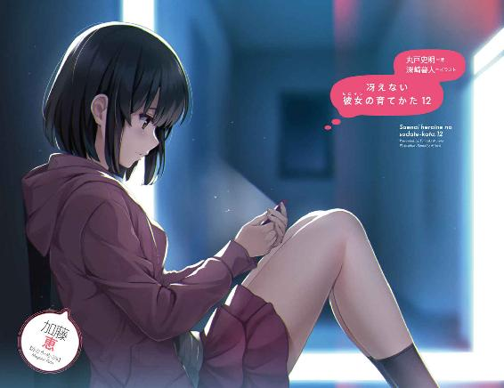
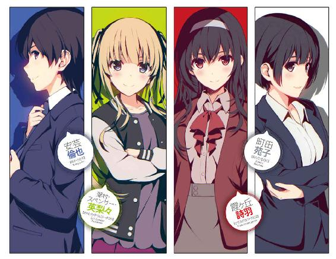
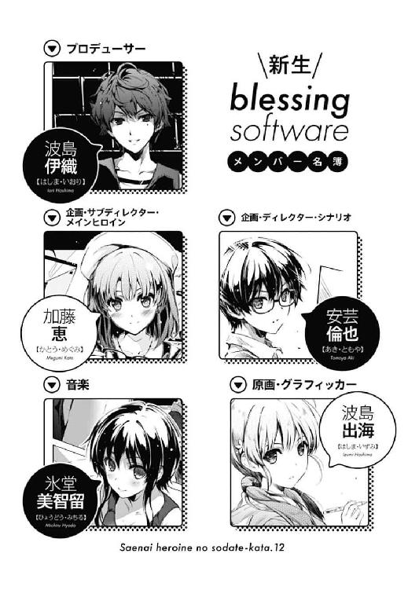
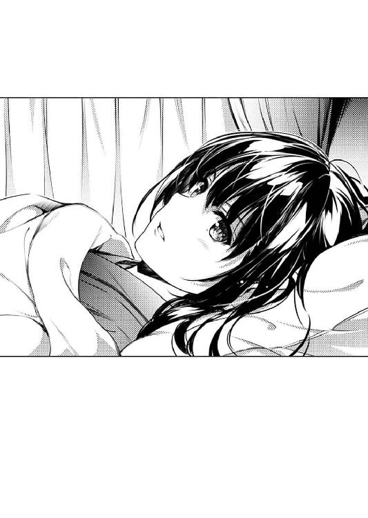
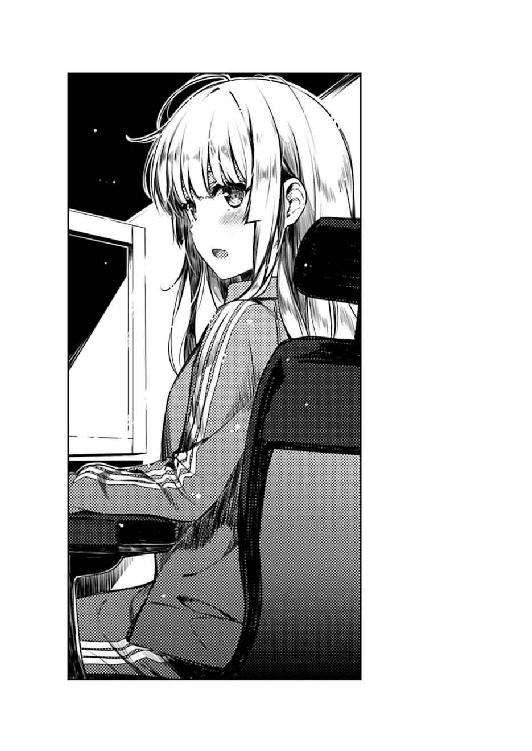
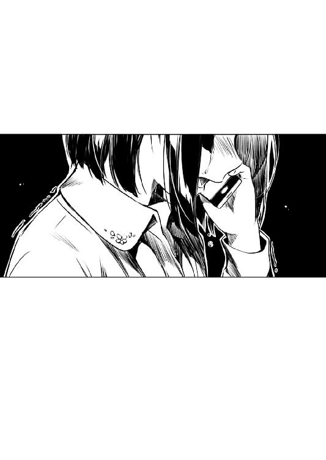
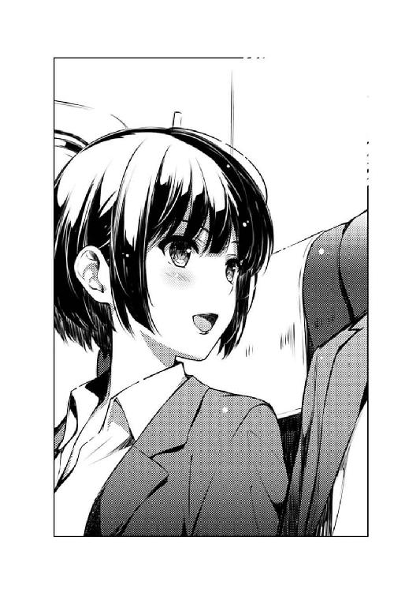
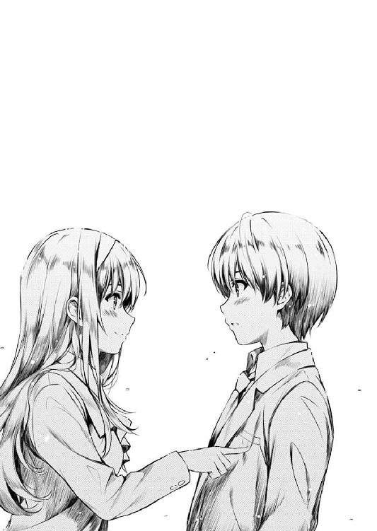
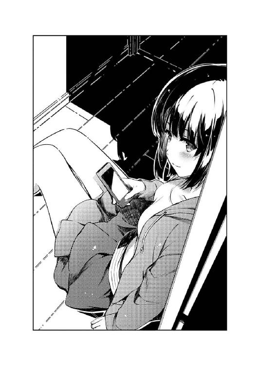
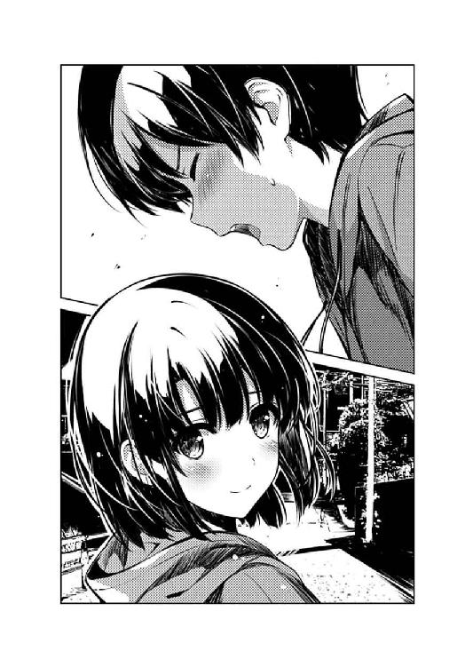

| 冴えない彼女の育てかた12 (富士見ファンタジア文庫) | |
| 丸戸 史明 | |
| Kadokawa / 富士見書房 (2017) | |


冴えない彼女の育てかた12
丸戸史明

富士見ファンタジア文庫
本作品の全部または一部を無断で複製、転載、配信、送信したり、ホームページ上に転載したりすることを禁止します。また、本作品の内容を無断で改変、改ざん等を行うことも禁止します。
本作品購入時にご承諾いただいた規約により、有償・無償にかかわらず本作品を第三者に譲渡することはできません。
本作品を示すサムネイルなどのイメージ画像は、再ダウンロード時に予告なく変更される場合があります。
本作品の内容は、底本発行時の取材・執筆内容に基づきます。
本作品は縦書きでレイアウトされています。
また、ご覧になるリーディングシステムにより、表示の差が認められることがあります。

プロローグ
「............」
コール一回目。
うららかな......というには少しばかり強めの真昼の陽射しが照りつける九月下旬......
『倫也くん？ 今どこ？』
「あ、あぁ......今家出たとこ」
家の近所の急勾配な坂道、通称・探偵坂を早足で下りつつ電話を掛けていた俺の耳に、まさかのたったワンコールで届いたその声は、いつも通りのフラットさに加え、ちょっとばかりの弾んだ響きが混ざっているようにも思えた。
『じゃあ、ちゃんと一時に間に合いそうだね。実はわたしの方はもう池袋に来てて、今はデパートぶらついてるけど』
「う、うん......」
いや、多分その、俺の思い上がり的な思い込みは、今回に限ってはちょっとばかり真実も含まれているみたいで。
だからこそ〝彼女〟は、待ち合わせ時間の三〇分も、いや多分それ以上も前に、約束の場所に辿り着き、とっくの昔に遅刻のリスクを摘み取ってしまっていたのだろうから。
......などと、一一巻の内容を覚えてない諸兄においては置いてきぼり感甚だしい出だしで大変申し訳ないけど、電話口で今、リアルタイムで俺と話している相手は、加藤恵。
現在、SOUND ONLYのため容姿の描写は省かせていただくけど、俺と同じ豊ヶ崎学園の三年生にして、俺と同じゲーム制作サークル『blessing software』のメンバー。
そして、俺こと安芸倫也（プロフィールは彼女とほぼ同じ）と、三〇分後に、その、なんだ、デ、デ、デ......いやもうオタク特有の対異性向け挙動不審な言動は省略するけど、デートの約束をしている女の子だ。
あ、ついでに、一一巻の内容を覚えていて、かつエピローグの引きについて様々な考察をした挙句、この加藤恵に衝撃的なアクシデントが発生して、『え～、被害者氏名、加藤恵。加えるに藤、恵方巻きの恵......』などという警察無線とともにアップテンポな主題歌が流れてくることを期待......いや危惧した方々におきましては、余計なご心配をお掛けしたこと大変に申し訳なく。安心してください生きてますよ昏睡してませんよ。
「あ、あのさ、それでさ......」
『ん～？』
「確かに俺、今から出かけるんだけど......悪い、実はそっち行けない」
『え......』
「ごめん、恵......今から、どうしても行かなくちゃならないところがあるんだ」
......まぁ、だからといって、現在の事態がまるっきり深刻でもなんでもないかというと、それはさておき、な訳だけど。
『............』
「いや、あの、聞こえた～？ 恵～？」
『............』
「聞こえてるよね～？ 俺の言ったこと、認識してるよね～」
『............』
「ついでに、その～、理解もしてくれてたら、すっごく助かるんだけど、どうかな～？」
『え～と、え～と......さすがにちょっと、あの、今までみたいに「ん～、わかった。じゃまた今度ね～」って、適当にお買い物して帰るって訳には、いかないよそれ......』
「だよなっ、だよなぁぁぁ～！ 大変申し訳ございませんっ！」
そんな、女子としては当然の......ていうか、これでもかなりソフトな対応に、それでも俺は心臓に氷の刃が刺さったような冷たく鋭く重い痛みを感じる。
『なに？ どうしたの倫也くん？ 何が何でも外せない急用？』
「あ、え～と、それはまぁ、結構、そのカテゴリに入るような気が......」
『ご家族に何かあったとか？』
「家族じゃありませんいや全然、まったく、これっぽっちも血縁なんかありゃしませんからええもう！」
『でも、誰かに何かあったってことなんだね？ わたしも知ってる人？ 学校とかサークル関係？』
「あ、いや～、ま～、そんなに知ってる訳でも、面識がある訳でも......」
『そっか......そうなんだ』
電話口からの恵の声は、相変わらず落胆の色が目立っていたけれど。
でも、その『恵にとって面識がない』という俺の説明に、ちょっとだけ安堵の色を浮かべる。
「まぁとにかく、詳しいことは今夜また電話する。ちゃんと報告、連絡、相談するから」
『う、うん......』
......だからって、俺にとって大した事件ではないという意味にはならないんだけどな。
そして実は、ことと次第によっては、恵にとっても、ピ〇ゴラス〇ッチのように迂遠な経路を取って結構な影響が出てくるということを否定しきれなくて。
「だから、ごめん、恵......」
『あ～、まぁ、そんな事情なら仕方ないし』
「それでも......誕生日、一緒に祝えなくて、その......」
だから今は、心の底から確定している気持ちだけを口にする。
〝ごめん〟という気持ちと、〝残念〟という気持ちの入り混じった『I am sorry』を。
『......ま、それは、いいよ』
「恵......」
『だって、ほら、ある意味、ちょっとほっとしたっていうか。色々考えてた各方面への言い訳もいらなくなったっぽいし』
「......恵さん？」
『それじゃ今夜、心配事とか嘆き節とか愚痴とか、待ってるね』
「あ、いや、えっと......あぁぁ」
と、最後の最後に『ちょっと待ってそれってどういう......』と聞き返したくなるくらいに微妙な言い回しを残して、恵はさくっと通話を切った。
後には、安堵の色の中に、ちょっとだけ落胆というか困惑の色を残した俺の、持て余し気味の感情が残っていたりなんかしたりしたけれど......
それでも俺は、今一番に考えなければならない事態に心を集中し、残りの坂を一気に下っていく。
坂の下の国道に出て、タクシーに乗り込み、行き先と、なるべく急いでほしい旨を伝え、ほっと一息ついた後、慌てて財布を覗き込み、運転手さんにいくらくらいかかるか確認する。
そして、車が東に向かって走っていく間、俺は、恵には敢えて見せなかった焦燥感を今さら浮かべ、額の脂汗を拭う。
どう、なってんだ......
なんで、〝彼女〟が......？
それから、三〇分くらい走ったはずなのに......
頭の中に浮かぶ疑問符や、最悪の可能性、そしてそれが引き起こす、様々な最悪の事態を、何一つ吟味することもできないまま、車は目的地に着いた。
目の前には超高級ホテル......と見紛うばかりの、豪奢な建物。
慌てて建物の中に駆け込むと、俺は忙しなく周囲を見回し、ようやく見つけた白い制服姿の女性に、勢い込んで尋ねる。
「すいません！ 今朝こちらに運ばれた紅坂朱音さんの病室はっ!?」
第一章 ＧＳ２絶賛発売中だよ！ 読んでね！
「なんだ少年？ どうしてこんなところに来た？」
「こっちが聞きたいよぅ!?」
ちょっとした本人確認の後、看護師に案内されて通された病室は、これまた超高級ホテルの客室かと見紛うばかりの豪華な内装......いや超高級ホテル泊まったことないから正確なところは言えないけれど。
とにかく、そんな広い個室に気後れしつつも足を踏み入れた俺は、ベッドに横たわる長い黒髪の女性から、とても歓迎しているとは思えない挨拶とともに迎え入れられた。
年のころは、俗に言うアラサーという表現がもっともはまりそうな外見と実年齢。
人によっては、冷酷とも取られそうな切れ長の目に、冷血とも取られそうな白磁の肌。
病室前のプレートには、『高坂茜』とあったけれど、世間がよく知るのは、それとまったく同じ読みの『紅坂朱音』。
元・同人サークル『rouge en rouge』代表にして、現・株式会社『紅朱企画』代表取締役。
業界歴一〇年超。同人時代早々からオタク業界のトップに君臨し続け、漫画、アニメ、ゲームなどのオタクメディアのほぼ全てを手掛ける、売り上げも評価も知名度も、どれも最高にして邪悪を誇る、通称・キ〇ガイクリエイター。
そんな、見た目も中身もモンスターそのものな彼女が、寝間着姿で病院のベッドに横たわり、腕に点滴を刺している姿は、それはもう違和感の塊で。
だって、ここにいるのは、〝あの〟紅坂朱音なんだ。
悪魔と契約して魂を奪い、吸血鬼の血を吸って永遠の命を手に入れ、天使を地上に堕として空へ上り詰めると囁かれる、あの怪物なんだ。
......どうでもいいが、これ最初に言い出した奴はセンスあるけど超失礼だな。
「一時間くらい前に、マルズの前川って人から電話もらって」
「......あのクソディレクター、無能なだけじゃなく存在そのものが意味不明だな。半年前に潰しておくべきだった」
「無関係者の前でそういうこと言うのやめてよぅ」
そう、一時間くらい前......
九月二三日の、一二時を、ちょっと過ぎたくらいの時間。
そろそろ池袋に向かおうとそわそわしていた俺の携帯に突然かかってきた、見知らぬ番号からの着信は、とても慌ただしい様子の、中年男性の声だった。
自分はマルズの社員であり、つい先ほど、自分と打ち合わせ中の紅坂氏の容態が急変したので、現在救急車で病院に向かっている。ついては〝紅坂氏直々の指名により〟、俺が呼ばれたので、今すぐその病院に駆けつけるように、などという、なんとも一方的で意味不明な伝言を告げると、さらにその一〇分後に、ご丁寧に運び込まれた病院名までちゃんと連絡してきやがっ......いただいた。
「で、なんで最初に連絡したのが君なんだ？ いくら世界のほぼ全てを敵に回した私でも、そこまで頼る相手に困っているつもりはないんだが」
「俺だって同じこと聞いたよ......」
そしたら、マルズ前川氏は、紅坂朱音が、うわ言のようにブツブツ呟いていたその言葉を律儀に拾い集めたらしかった。
曰く『いや、それよりも、安芸倫也がちゃんとシナリオを完成させたか確認しないと』と......しかも、何度も同じことを、繰り返し、繰り返し......
「......誰がそんなことを？」
「いや、だから紅坂さんが」
「そんなたわごとを信じたのか？ 馬鹿か君は？」
「あまりにもたわごと過ぎて信じるしかなかったんだよぅ！」
紅坂朱音は、そうブツブツ呟きながら、朦朧とした意識の中、震える手で、携帯のアドレス帳から俺の名前を選び出し、通話ボタンを押して気を失ったんだそうだ。
「............まるで覚えがない」
「俺にもまったく身に覚えがありません！ そこまで深く配慮していただく心当たりもありません！」
そりゃ、確かに、ほんの一週間ほど前に、シナリオのことで相談に乗ってもらったのは事実だ。
でも、いや、だからといって、彼女自身が意識を失う間際に、走馬灯のように蘇るほど強く印象に残る相談をした覚えもないんだけど。
「まぁいい。それならついでに確認しておこう。どうだ？ あの後シナリオの進捗は？」
「いや状況っつ～か自分の体考えてよもう......」
なんというか、一気に体の力が抜けた俺は、ベッドから遠く離れたところにあるテーブルから椅子を運んでくると（これもパイプ椅子とかじゃなく全然高そう......）、ベッドの脇に座った。
「で、どうしたんです紅坂さん？」
「知るか」
「いや、それって......」
「気づいたらベッドの上だったんだ。看護師にでも聞け」
「............」
紅坂さんをここに連れて来た前川という人は、今は一度会社に戻ったとかで、もうこの病院に、彼女を直接知る人はいない......いや、俺を除いて。
「にしても、マルズの連中の前で倒れたのか私は。最悪だ」
「........................」
いや、最悪なのは、デート（もう敢えて断言する！）の出鼻をくじかれた俺の方だと思うんだけど......まぁ病気なんだから仕方ないけど。何の病気か知らないけど。
「まぁいい。そのうち他の関係者が来るだろう。君は帰っていいぞ」
「あ～、いや、とりあえず誰か来るまでは付き添ってますよ」
まぁ、さすがに病人をほっぽり出して帰るのも気が引けるし。何の病気か知らないけど。
「いいのか？ 随分そわそわしているようだが。デートなんじゃないのか？」
「えっと、まぁ......」
「......なんだと？ 単なる社交辞令のつもりだったんだがまさかの正解か？ クソオタクのくせにやるな少年。君は今、君以外のクソオタク全員を敵に回したぞ」
「社交辞令なら最後までそれを貫いてくださいよぅ......」
まぁ、実際ここまで毒舌が回るなら心配なさそうだけど。というか心配する気も失せるけど。
正直、最初に電話口で聞いた時の彼女の状況は、背中を寒いものが駆け上がってくるほどに、不気味で、得体のしれないものだった。
だって、そもそも、自分の意識が朦朧としている最中に、一番に気に掛けるのが俺のシナリオだっていうのが意味が分からなさすぎる。
「それで、シナリオは順調なのか？」
「いやだからさ......」
つまり、本当の本当に、深層心理に一番引っかかってるのがコレなのかよ......？
「結局、どの方向性を目指すことにした？ 今までの路線を貫くのか？ それとも新しい引き出しを開けるか？」
「いや、だから何度も言ってるように今は......」
と、体を起こして問いかけてくる紅坂さんをなだめるように、俺は椅子から立ち上がり、彼女をベッドに寝かせようと肩に手をかけ......
「ちょっと紅坂朱音！ あんた、倒れたってどういう........................倫也？」
「......げ」
......たその瞬間に、なんだか毎日聞き慣れたようなポンコツくさい......いや高めの声が病室内に響き渡る。
「え？ え......えっ」
「あ～、いや......よぅ、英梨々」
「なんだよ柏木センセにまで連絡行ってんのかよ......まいったなこりゃ」
そう、ポンコツといえば......という代名詞的な表現はさておき、紅坂朱音の病室に現れた二人目の見舞客は、これまた俺にとってお馴染みのアレだった。
多分、慌てて家を出てきたのだろうというのが見て取れる、いつぞやの変装用のオーバーオールに、それでも多分、車の中で髪だけは整えてきたのだろうというのが見て取れる、ちゃんと結われた金髪ツインテール。
もうこの〝金髪ツインテール〟という単語だけで人物紹介は済んだも同然だけど、一応最後まで紹介しておくと、澤村・スペンサー・英梨々。
小学生時代からの幼なじみにして、十年来の（本当の意味での）腐れ縁。
かつて、俺の『blessing software』で原画を担当し、一緒に夢を追いかけた......ていうか一方的に俺の夢を押しつけた仲にして、現在も豊ヶ崎学園で俺と同じクラスで隣の席。
そして今や、紅坂朱音のもとで、商業の大作ＲＰＧのキャラデザに従事しているという、もうすぐ、ジャパニーズドリームの体現者になるであろう、急上昇中の若手クリエイター、柏木エリ。
「え、え、えええええ～！ ちょ、ちょ、ちょっとぉ！ なんで倫也が紅坂朱音のところに......年の差モノとしては中途半端な年齢差だし、おねショタというには成長し過ぎてるし、一体どういうシチュエーションに喩えればいいのよぉぉぉ～！」
「何にも喩えなくていいから！ あと病室だから騒ぐな」
......そんなオタクエリート中のオタクエリートなんだけどポンコツ。
呆れるほどポンコツ。
「だ、だ、だいたいあんた、紅坂朱音とはこの前の合宿の時に一度会ったきりじゃ......」
「や、まぁ、大体そんな感じだけど......」
「そうだな、大体そんな感じだな。あと一緒に海辺をドライブしたり、朝まで電話でオナニー談義に耽った程度か」
「紅坂さんそれはっ!?」
「う、海っ？ お、オ、オナオナオナ......っ!?」
「......あ、あ～、え～と、何だ、その......今のアレはクリエイター的比喩だから。色々と補完して解釈すること推奨だから」
ちなみに読者諸兄については、『海辺』に『ビッグサイト』と、『オナニー』に『シナリオ』とルビを振って読んでいただきたく。
「なんでいつの間に繫がってんのよあんたたち！ レベル一の勇者とラスボスじゃなかったの？ 囚われたお姫様を救い出すために地道にレベルアップしてたんじゃなかったの!?」
「いや、まぁほら、最近のＲＰＧだと序盤にラスボスが出てくる負け確イベントなんてのもよくあるし、な？」
「そうだな、後は序盤に大きくプロモーションしてお姫様ポジっぽかったキャラクターが、実はただの当て馬で、後から出てきた本当のメインヒロインに主人公をかっさらわれるなんていう展開も枚挙にいとまがないぞ」
「あ、当て、あて、あへあへあへ......」
「紅坂さんあんた普段から英梨々で遊んでるだろそうなんだろ」
でなければ、この絶妙な凸凹コンビ感は醸し出されない。
そう、この関係性にはとてもデジャヴを覚える。
これはまるで、金髪ツインと黒髪ロングのクリエイター漫才......
「相変わらず見境ないわみっともないわで際限なくいいとこないわね澤村さん」
「なっ、なっ、か、か、か......っ」
とか考えてたら本当の相方来ちゃったよ！
「霞ヶ丘詩羽ああああぁぁぁぁぁぁ～！」
はいそうですその人です。
「病室で騒がないの澤村さん。一応そこのベッドで寝ている人も病人なのだから。まぁ人間ではないにせよ」
「ちっ、柏木センセだけでなく、霞センセにも連絡いっちゃってたか......」
そう、霞ヶ丘詩羽にして、霞詩子。
暖色のコートの中に、ふわりとマフラーを巻いて長い黒髪を隠し、せっかくそんな温かい格好にもかかわらず、口から出る言葉は相変わらずの東京氷河期。
俺の一年年上の先輩にして、俺の崇拝する小説家。
かつて、俺の『blessing software』でシナリオを担当し、一緒に夢を追いかけた......ていうか一方的に俺の夢を押しつけた仲にして、現在は豊ヶ崎学園を卒業し、早応大学の一年生。
そして今や、紅坂朱音のもとで以下略な若手クリエイター。
「正確には、私が連絡を受けて、澤村さんにも知らせたのだけれどね。お見舞いを用意していたら少し遅れてしまったようね」
と、その詩羽先輩は、テーブルの上の花瓶を取り水を注ぐと、用意してきた花束を挿してベッドの側に飾った。
「ちょっと霞ヶ丘詩羽！ あんたいつもいつもそうやって自分だけ大人の対応してんじゃないわよ！」
「少なくともあなたより一歳分は大人なのだから仕方ないでしょう？」
その割には、飾られている花が明らかに仏事用の菊なのが妙に気になるところではあるけれど......

「だったらあんたは納得したの？ 紅坂朱音と倫也が隠れてこそこそ会ってたこと」
「いやだからそれは、ちょっとシナリオについて相談しただけで......」
けれど詩羽先輩は、英梨々の挑発にも、俺の言い訳にも耳を貸す様子もなく、自らが言った通り大人の対応を貫く。
自分と英梨々の二脚の椅子を持ってきて、ベッドの脇に並べ、先に英梨々に座るよう促し、英梨々が渋々座ると、最後に自分もゆっくり腰かけて、黒ストッキングに包まれた美脚を組み......
「........................納得できる訳、ないでしょぉぉぉぅ？」
「ひぃぃぃぃっ!?」
そして、壮絶に貧乏ゆすりを始めた。
うん、全然大人の対応じゃなかった。
「こっちはここしばらく大量のシナリオ修正で外に出るのもままならなかったというのに......そんなふうに私が冷や飯食わされている間に、一〇以上も年下の男とイチャイチャしてる三十女が存在するなんて、そりゃこうして天罰が下ってもしょうがないわよね！」
「う、う、うらはへんふぁいっ、ふ、ふ、ふるしっ」
さらに、ベッドで寝ている病人に対して心の底からの呪いの言葉を吐きつつ、他の見舞客の首を絞め始めたりもして。
うん、全然、まったく、これっぽっちも、大人の対応じゃなかった。
「あ、あ、あ、え～と......や、やめっ、いや、倫也あんた、え～と......」
そして英梨々の方は、暴走を始めた詩羽先輩を止めようか、それとも一緒になって俺を責め立てようかを逡巡しているようで、意味もなく俺と詩羽先輩の周りをぐるぐる回っている。
いや俺が言うのもなんだけどさっさと態度決めろよ。
「倫理君あなた、私とは距離を置くって言っておきながら、この年増女と......この女が私に何をしたのか知らない訳じゃないでしょうにっ！ 本当、年増って最悪ね、執念深いわ性格悪いわ髪の毛長いわ！」
「い、いや、詩羽先輩、それ、全部......」
〝それ全部誰かさんにも当てはまるんですけど......〟という断末魔の叫びは、それこそ断末魔のため口にすることができず、俺の意識が闇に吞み込まれそうになった瞬間......
「ちょっと茜！ あんた倒れたって......あ」
「おう、お苑まで」
「あああああっ、町田さん助けて～！」
病室に、今度こそ救いの女神と思しき常識人が足を踏み入れて......
「......は～い、とりあえずそのままでみんなこっち見て～」
「撮るなぁぁぁぁ～！」
「よしよし、よく撮れてる......ほいっ」
「ちょっと待て今どこにアップしたぁぁぁ～!?」
......などと一安心しかけたのは、俺の思いっきりな早とちりだということを痛感した。
※ ※ ※
「の......脳梗塞っ？」
「ええ、詳しいことは検査してからみたいだけど」
病院のロビーに併設されているコーヒーショップ。
見舞いを終えた俺たち四人は、その場所でテーブルを囲みつつ、今回の事態に対して、お互いの足りない情報を交換しあっていた。
「マルズの人に聞いたところだと、打ち合わせ中、ホワイトボードにイラスト描きながらプレゼンしてたら、急にペンを落として、それ以降、右手が上がらなくなったって」
「ちょっと待ってよ......それって実は、すげぇ深刻なんじゃ......」
......というか、ほとんどの情報は、最後にやってきたこの人がもたらしてくれたのだけれど。
年のころは、紅坂朱音と同じくらい......というか、事実として同い年。
中肉中背の体を黒のスーツに包み、ショートカットの髪もきっちり整え、まさに『正しい大人』を具現化したような外見（中身は......）のこの女性は、編集者。
不死川書店、ファンタスティック文庫副編集長にして、霞詩子の担当編集、町田苑子。
そして、もう一つの立ち位置として、マルズ×紅坂朱音（＆霞詩子＆柏木エリ）のビッグプロジェクト『フィールズクロニクルⅩⅢ』の、不死川書店が受け持つ、ノベライズやコミカライズ等のメディアミックス全般を取りしきる担当編集でもある。
去年の六月頃に一度会ったきりだったけど、きっちりした外見と、お茶目な中身のギャップは一年経っても相変わらずだった。
......と、まぁ、どうやら事態の方は、そんなほのぼのした人物紹介をやっている場合ではなかったかもしれないけれど。
何しろ、過労とか貧血だったら『ほ～ら言わんこっちゃない』と笑い話で済んだかもしれないけれど、正直、その病名はちょっと重い。
「世界を破滅させてでも生き残る超人類だと思っていたけれど、呆気ないものね」
「いやあの人今のあなたの雇い主なんですけど？ あと全然生きてるからね？」
などと毒づきつつも、詩羽先輩も心の底では深く心配しているようだ（本当か？）。
「ちなみに彼女の病室、差額ベッド代だけでも一日で●万以上するわよ？ あたしも子供の頃にここに三日間だけ入院したことあるんだけど......」
「あとお前はそういう別次元の現実を教えてくれなくてもいいから」
そして英梨々は、自らの体験談を交えつつ、病状だけでなく紅坂さんの経済状況にまで思いを馳せる大変な心配ぶりだ（そんなか？）。
「その場にいた人たちが、慌てて救急車を呼ぼうとしたんだけど、茜本人は平気だって聞かなくて」
「まぁ、あの人なら絶対そう言いそうですけどね」
「それでも無理矢理連れていこうとしたら、ＴＡＫＩ君の名前を急に口にしたから、周りの人たちが、私よりも先にあなたに連絡したみたいね」
「......そう、ですか」
ずっと、『紅坂朱音がなんで俺に？』って疑問が付きまとってたけど、ここまでの話を聞いて、なんとなく謎が解けた。
......要するに、紅坂朱音が俺の名前を出したことに、〝大した意味はない〟んだ。
彼女はその時、脳の血管が詰まってた。
つまり、正常な思考ができていなかった。
だから、一週間ほど前に、たまたま俺と会話した内容を〝なんとなく〟思い出して、そればかり気になってしまったんだろう。
「だから、なんで紅坂朱音が倫也のことを口にするのよ？」
「どうしてあの女が倫理君のことを......っ」
「あ～」
......と、自分一人で納得したところで、事態はまるで前進しないということをたった今思い出した。
「............という訳でさ、多分、記憶が混濁したせいで、頭の片隅で気になっていたことがその場でつい口に出ちゃったんだと思うんだよ、紅坂さん」
という訳で、俺は、彼女の病名から導き出した自分の考えをきちんと二人に説明し......
「でも、でも、ということは、紅坂朱音って頭の片隅で倫也のことをっ!?」
「深層心理の中に刻み付けられていたというのなら、ますます事態は深刻ね......」
全然納得いただけなかった。
「いや、二人ともさ、そんなことより今の状況を考えてよ？ ボスが倒れたんだよ？ 色々あったかもしんないけど、お世話になった人なんだよ？」
なのでこれ以上は事実関係で戦うのはやめて、情に訴えることにした。
のだけど......
「誰が野垂れ死のうが放っておけ......って、いつも紅坂朱音が自分で言ってる」
「彼女はこうも言っていたわ......自分が死んでも、作品だけは必ず守ってみせるって、完成させるって」
「だから逆に、あたしたちが心折れて野垂れ死んでも、ただ傍観していてやるんだってさ......」
「覚悟決めすぎだろ......」
どこの元軍人だよ。ていうかロシアか？
さすが、世界で一番〝情〟が似合わないラスボス（当社調べ）。
「まぁ、多分、というか絶対誇張が入っているのは間違いないのだけれど......それでも彼女自身が、私たちにそういう思想を植え付けようと、毎日、口にしている言葉がそれよ」
「だったらあたしたちは、あいつの思想に付き合うしかない......何しろ、雇い主なんだから」
けれど、そんなドライなことを口にする二人......というか、紅坂朱音の思いを無理やり口と態度で示す二人は、けれどやっぱりよく見ると、その瞳に憂いの色を浮かべ、強大だったはずのボスを心の底から案じている（今度こそ本当っぽい）。
「ま、とにかく、三人とも今日のところは帰りなさい。後は私が付き添うから」
「町田さん......」
と、会話の途切れたタイミングを見計らって、この中での一番の大人が場を締めにかかる。
「大丈夫、あなたたちや茜がどう考えようと、彼女は業界によって護られる。死んだところで脳だけでも生き延びさせられるから安心して」
どうして誰も彼女のことを人間扱いしないんだこの業界は......
「だからまぁ、しばらくなら、私が仕事を投げ出して茜の看病をしたところで、不死川の上層部は何も言わない」
でもまぁ、そんな業界の仕組みを骨の髄まで理解しつつも、多分、一番納得のいっていない、紅坂朱音の一番の理解者（詩羽先輩談）は......
まぁそれでも、大人らしく、自らの今の立場を、可能な限り有効利用しようとしているようだった。
「悪かったわね、ＴＡＫＩ君。あなたには何の関係もないのに、急に呼び出しちゃって」
「いえ、その......はい」
いつもなら『どうせ暇でしたから』程度の社交辞令が口から出てもおかしくないけれど、さすがに今日に限っては、関係各位にはありがたく罪悪感を抱いていただかざるを得ない。
何しろ今日は、多分、というか絶対、帰ってからの方が色々と大変なことになるのは火を見るより明らかで......
「あ、それと、この件、各方面にインパクト大きいから、絶対に他言無用ね？」
「お願いですたった一人にだけは話させてくださいなんでもしますから!?」
第二章 一一巻が好きだった方はここで栄養補給しといてください
『ふぅぅぅぅぅぅぅ～ん』
「やめよう。その全然納得してない感じの『ふぅぅぅぅ～ん』やめよう？」
そして、日付も変わらぬまま土曜の夜八時。
なんとか町田さんに拝み込んで、絶対に拡散しないことを条件に、なんとか今日の事情説明の許可をもらって。
ちゃんと筋道立てて説明できるようリハーサルまでしてからスマホに手を掛け、アドレス帳の『加藤恵』をタップして。
そこまできっちり配慮した結果が、前述の、まるで心のこもっていない相槌と相成ったのでありました。
きっと通話口の向こうでは、例の、あの蔑む目で中空を見上げてるんだろうなぁ......
うん、今日はスカイプにして顔を合わせるのはやめよう。どんな表情で迎えられるかわかったもんじゃない。
『まぁ、そういう差し迫った事情があったんなら、すっぽかされたのも仕方ないって納得するしかないかな。でも、う～ん、え～と......』
と、渋々ながら呟きつつも、恵の口調は、するしかないはずの〝納得〟をしているとはとても思えないような、う～ん、え～と......
「顔見知りが倒れたんだ。しかも結構深刻な状態だったんだ。たとえ不俱戴天の敵でも助けるさ」
いや、世間には不俱戴天の敵だからこそ助けるという文法もあるみたいだけど。
『カッコいいね～、倫也くんは～』
「いやマジその全然納得してない感じの『カッコいいね～』やめてくれよぅ」
しかしまぁ、色々な覚悟を透かされた方にはそんな美学が通用するはずもないのは当然で。いやまぁ、どの程度の覚悟があったのかなかったのかはさっぱりわからないけど。
「それに、シナリオについても色々とアドバイスしてもらったりとか、結構世話になってるし......」
けどまぁ、その『紅坂朱音に世話になってる』ことについても、恵としては色々と言いたいことがあったようだけど、というか実際色々色々色々色々言われたけど。
『ま、前に置いてきぼりにされた時の言い訳に比べたら少しはマシだからいいけど』
「あの時だってちゃんとした事情あったじゃん納得してくれたじゃん!?」
というかまぁ、今になって一年三か月近くも前のことで色々言われるとは想定もしてなかったけど。
いや、今、こういう関係、というか、こういう状況だからこそ言いたくもなるのかもしれないけど。
なんていうか、随分とキャラ考察しがいのあるヒロインになったじゃないか加藤恵。
......それが俺にとっていいことかはさておき。
『ま、その紅坂って人については色々と思うところはあるけど......でも、そんな話聞くと心配になってくるね......本人、どんな様子だった？』
「いや、喋り方も普通だったし、倒れたショックも受けてないみたいだったし、そんな大したことなさそうだったけど」
『それが見栄とかじゃなかったらいいんだけどね。脳って、何が起こるかわかんないもんね』
確かに、脳は怖い。
身内でそれ関係の病人がいたことはないけれど、それでも勝手に入ってくる情報だけでも不安を感じるくらいには、人の体で一番繊細で重要な部分だ。
特に紅坂朱音ともなると、あの、どれだけ湧いたら尽きるのか全く見当もつかないほどの豊富なアイデアの源泉が失われる可能性に直結する訳で、それはマジでオタク業界の、いや世界レベルでの超損失だ。
「でも、俺たちが心配したからって回復する訳じゃないし、後は医者に任せるしかないんだけどな」
『ま、そうなんだけどね』
そういえば......
動かなくなったといわれていた右手は、結局、ベッドから一度も出さなかった。
『でも、英梨々と霞ヶ丘先輩のゲームの方、大丈夫なのかな？ 一番えらい人が倒れちゃった訳でしょ？』
「そっちこそ、俺たちが心配したからってどうなるものでもないだろ」
あの紅坂朱音が落ち込んだり、ヘコんだりする姿は想像できない。
それは多分、俺だけでなく、彼女を知る全ての人がそうだろう。
だからこそ彼女は、あの時も息をするように虚勢を張っていたのではないだろうか？
『あっちも、発売、年末だったよね？ 結構大事な時期なんじゃないかな？』
「そうかもしんないけど、直前のコメントと全く同じことしか言えないぞ俺」
いつ退院できるんだろうか？
退院できたら、すぐに現場復帰できるんだろうか？
英梨々や詩羽先輩には、今回のことで、何か影響が出ているんだろうか？
コンシューマーゲームのマスターアップは、同人ＰＣゲームのマスターアップなんかより、月単位で早いはずなのに。
『大丈夫かなぁ、英梨々......連絡してみようかな』
「やめとこうぜ」
『でも......』
「何もできないのに、困ってるかどうか聞いたところで、向こうも困るだろ」
『それはそうなんだけど......う～ん......』
そう、などと考え込んでしまっても、解決策が提示できない以上は、ただ心配が積み重なるだけで、いいことなんか一つもない。
「それよりも、こっちはこっちで重大な懸念事項がある」
『懸念事項？ なんだっけ？』
だからここは、ひとつ前向きな話でお茶を濁......じゃなくて、ポジティブに行こう。
「今日のデートの、埋め合わせの件」
『............あ～』
......と思ったのに、相手方の反応はなんとなく微妙というか、数日前に戻ってしまっているようだった。
「一応俺、来週の週末も全部空いてるけど......シナリオ作成以外は」
『とはいえ、もうわたしの誕生日、終わっちゃったしね～』
「い、いや、それはそうなんだけど、一週間遅れならギリギリセーフかと......」
『それに今日、色々あって手持ちのお金全部なくなっちゃったから、当分お出かけは無理かな』
「何買ったのどんだけ使ったの!?」
まずい、これはまだ微妙に納得いってない。というか、結構ストレス溜めてたっぽい。
ちょっと待てフラット設定はどこ行ったんだ加藤恵。
『ま、ほら、なんていうか、なにごともタイミングだよね～』
いや確かに口調だけは凄くフラットだけど、〝凄く〟って時点で色々とフラットじゃないよね？
『一度ずれちゃったら、元に戻らないこと、あるよね～』
これはもしかして、本読み前の状態どころか、更に悪化してる？
三歩進んで二○○歩下がった......？
『ま、そんな訳で、倫也くんは引き続きメインヒロインシナリオ頑張って......』
「なら、中断してる本読みの件だけど......」
『え......？』
まぁ、だとしたら、いや、だとしても、俺のとる行動は変わらない。
「そっちはいつから再開できる？ サブディレクター？」
ただ愚直に、泥臭く前に進むだけ。
いや進んでるのかまた後退してるのかは自分じゃわかんないけど。
『あのさ倫也くん、それとこれとは話が違くないかな？』
「ああ全然違うな。埋め合わせよりも大事な、ゲーム制作の話だ」
『しばらく休みたいって、わたし言ってなかったっけ？』
「うん、言ってた」
『じゃあ......』
「けど、恵の誕生日も〝完全に〟過ぎ去ってしまう程、時間も経ったことだし～」
『うわぁ......』
「それに、そろそろシナリオ上げないといけないってのも本当だし」
『うぅ......』
そう、これぞ正攻法。
相手が後退した二○○歩を、まず全力疾走で一九八歩詰めて、そこから再び休まないで歩くという王道だ。
......またの名をゴリ押しとも言うけどな。
『な～んか図々しくなったよね～、最近の倫也くん』
「大丈夫、今年に入ってからの恵の黒化に比べれば」
『わたしは全然フラットだよ～黒くなってないよ～』
「いや、俺は別に黒いヒロインが悪いなんて言ってないぞ？ いいじゃないか黒キャラ。ちゃんとキャラの立った一つのヒロインの形だ」
『霞ヶ丘先輩と微妙にキャラ被るけどね』
「その言及そのものが黒キャラの真骨頂だ。うん、よくぞここまで黒く成長したな恵」
『それってメインヒロイン的にどうなの？』
「まぁ、フラットよりはマシじゃね？」
うん、やっぱり正攻法はいい。
だってほら、見る見る会話が心地よくなってきた。
いや、今までの居心地悪い会話が心地よくなかったって訳じゃないけど。
というか、最近の恵との会話は、いつも心地よくて居心地悪くて、なんというか、ほら、アレだ。
『やっぱりわたし......ていうか今度のメインヒロインって、新しいキャラクター性を開拓する必要があるのかなぁ』
「それも面白いな。例えば......主人公がどれだけ約束を破っても、全てを優しく包み込んでくれる天使キャラなんてのはどうだろう？」
『それこっちの......じゃなくてヒロインのストレスが大変なことにならない？』
「いや今までだって結構フラットに流してくれてたじゃん」
『フラットに気にしないのと全てを包み込んで許すのとでは、全然ストレスの量が違うよぅ』
「だからこそキャラが立つんじゃないか！」
『男の子に都合のいいようにね』
「おまっ！ 恵！ ギャルゲーでそれを否定するキャラなんて人気出ないだろ！」
『そうかな？ 逆に人間くさいって人気出るかもよ？』
「癒してくれるはずのヒロインがそんなに面倒くさかったらユーザー疲れちゃうよ！」
『はいはいお疲れさま～』
なんて言いながらも、恵は、いつの間にか自分が嫌がっていた本読みを、ナチュラルにしてしまってくれている。
この、めんどくさいくせにチョロいところが、加藤恵という女の子が、いつの間にか身につけたヒロイン属性。
彼女が、もしかしたら、他の誰かと育んだ......かもしれない。
ちょっとだけ珍しい......かもしれない、キャラクター性。
※ ※ ※
『......それじゃ、そろそろ切るね』
「うん」
......と、恵が口にしたとき、時計の針はすでに、両方とも上を向いていた。
『というわけで、本読みは再開しないけど、何かあったらちゃんと連絡はしてよね？』
「なんだかなぁ、じゃないか？ その条件」
この四時間、色んなところに話が飛んで、二人ともまるで止め時が見えず。
片方が黙ると、自然ともう片方が話を繫ぎ。
片方が答えに窮すると、自然ともう片方が話題を変えた。
『ま、どうしてもシナリオが進まなくなって、また、締め切りに間に合わないってなったら......本気で頼んでみて？』
「わかった。土下座して頼むから。俺を男にしてくださいって」
『それ本気って言わないよ。倫也くん全然抵抗ないよね土下座』
「うん、恵が許してくれるなら」
『本読みだけだよ？ 別の要求は受け付けないよ？ 一応』
「一応とかつけるな可能性残してんだろそれ!?」
こうして、ちょっと際どいかもっていうネタも全然受け止めてくれたりして、逆にこっちが面くらったりもして。
で、これでも、恵の中ではまだ、本読みは再開してないらしいし、俺たちの関係修復は微妙なままらしかった。
なんか、避けられてるのか、干渉されてるのか、それとも、そのどちらでもないのか、よくわからない。
『まぁ、ともかく頑張って。これからは、他のことには目もくれずに、わたしたちのゲームに全力投球だね』
「............」
『......倫也くん？』
「うん、わかってる。じゃあな」
『おやすみ』
そんな、よくわからないけれど、変な笑みが零れてしまいそうになる長電話を終え、熱くなったスマホをテーブルに置き。
俺は、心地よい疲れに身を任せ、軽く目を閉じ、天井を見上げる。
まぶたを通して、光の赤さだけが目に届く。
体に満ちるのは、四時間溜め込んだ幸福感。
それと......
「............」
心の中で、軋んでいる、正体のわからない〝何か〟。
多分、それは俺が見落としていたこと。
いや、きっと、必死に目を逸らそうとしていたこと。
俺には関係ないからって......いや、〝関係できないから〟って、決めつけていたこと。
第三章 隠し味で不穏な描写を少しずつ、少しずつ加えていきますね～
「倫也......？」
「よっ」
で、それから三日経った火曜の夕方。
授業を終えて、帰途に就き（恵は未だに藤〇詩〇症候群とやらで、一人とぼとぼと）、私服に着替え、すぐにもう一度家を出て......
そうして、徒歩五分で辿り着く、坂の上のお屋敷......澤村邸のチャイムを押した。
「どうしたの？ こんな平日に」
「いや、病気じゃないって聞いたから見舞いに」
「......お見舞いって普通、病気って聞いた時に来るものじゃないの？」
そう、病気であろうとなかろうと、今日の訪問の目的は、間違いなく見舞いだ。
何しろ英梨々は、週明けの月、火と連続で学校を欠席した上、担任からは『澤村さんはインフルエンザのため今週一週間はお休みです』と告知されるほどの重症......という触れ込みなのだから。
まぁ、月曜朝の時点で、今回はサボリだという情報は得てたけど。ＬＩＮＥ経由で。
「馬鹿言え、本当にインフルだったら来れる訳ないだろ」
「昔はどんな強烈な伝染病だって、平気で来てたくせに」
「その時に、自分のやってることの恐ろしさに気づいたんだよ」
そう、英梨々の見舞いは、振り返ってみれば、いつも恐怖と隣り合わせだった。
......去年の那須高原を含め。
顔真っ赤にして息荒くして、何分も咳き込んだかと思ったら突然息しなくなったりして、付き添ってる方の心臓が止まりそうになる症状を見せやがるから。
「ま、いいや......ちょうど休憩しようと思ってたとこだし」
と、英梨々は、机にしがみついていた体をようやくこちらに向けると、天井を向いて大きな息を吐き、眼鏡を外した。
学校での通称『金髪ツインテールニーソ美少女』は、今は金髪ボサボサロング緑ジャージ眼鏡少女』へと見事な変身を遂げている。
......いやその中の『眼鏡』は元々俺が持ってたやつだけど。
「調子どうだ？ インフルネタ使ったってことは修羅場なんだろ？」
そう、『インフルエンザによる病欠』というのは、ある意味伝家の宝刀だ。
その呪文を唱えるだけで、容易に高熱による衰弱を想起させる上、パンデミック防止という免罪符の力もあり、最低一週間は言い訳なしで休めるという、学生や社会人の兼業作家などにはとてもとても利便性の高い病名だ。
まぁ、そうやって入稿前に温存するためにも、本物のインフルエンザなんぞにかかっていては話にならないのだが。
「修羅場といえば修羅場だけど......以前、紅坂朱音が語ってたところによると、ここからマスターアップまでの一か月は、ずっとこんな調子が続くらしいのよねぇ」
「って、大丈夫なのかよおい......」
「大丈夫抜かりはないわ。今回はＡ型インフルエンザを使ったけど、まだ寒くなるにしたがってノロウィルスとかＢ型インフルエンザとか次々と手札は残ってるわ」
「卒業だけはしようね進学は諦めてもいいけどさぁお互い！」
と、そんな風に兼業作家らしく堂々と仮病を使えるほどにたくましくなった今の英梨々を見てると、一〇年来の幼なじみ的には、なんていうか、純粋に嬉しさと安堵と、そして少しばかりの寂しさなんかを覚えたりして。
「ま、さすがに帳尻合わせはするつもりだけどね......でも、今はちょっと、よそ事考えてらんないっていうか、なんていうか......」
「そんなに大変なんだ？」
「大変どころの騒ぎじゃないわよ！ 残り三〇日で、ラフまで上がってるイベント絵が一二枚、まだ手つかずのイベント絵一〇枚、と、ショップ特典の描き下ろしが八枚で一八枚......ちなみに塗りの監修もやってま～す」
「まだ一日一枚のペースを引きずってんのかよお前は......」
いつでもどの立場でもギリギリの勝負を挑む奴だな。
というか、今月初め頃に『全素材の提出期限が九月末』って言ってたような気がするけど、さらっと納期延びてない？
「......まぁ、ショップ特典絵は最悪そこからまだ半月は粘れるから、なんとか最後までクオリティを下げずに頑張れるかな」
しかも更に納期延ばそうとしてない？
「クオリティを下げずに、ねぇ......」
「見るのはいいけど流出させないでよ？」
「するわけねぇだろ......」
けれどまぁ、英梨々の机の上にある描きかけの線画を見てしまうと、『これを一日一枚で......？』と戦慄してしまうほどには、今のこいつのクオリティは、とんでもないもので。
すでにゲーム雑誌やホームページで公開されているサンプルＣＧを巡って、マルズ最新作『フィールズクロニクルⅩⅢ』は、最近のシリーズの中でも出色の盛り上がりを見せている。
ここ数作、有名どころのベテランイラストレーター数人をローテーションで起用していたフィールズクロニクルシリーズに、商業ではまったく無名の新人イラストレーターと、畑違いのラノベ作家を抜擢した紅坂朱音の超采配に、当初は賛否両論の嵐が吹き荒れた。
けれど、最初に発表したキービジュアルに始まり、新たなイラストや体験版が出るたびに、否の意見がみるみる萎んでいくのが、ネットの生きた反応としてダイレクトに伝わってきた。
ほんの一年前まで、一八禁萌え同人作家だった高校生イラストレーターの描く世界が、劇薬なシナリオと共に、多分、今冬、コンシューマー界を席巻する。
......まぁ、これで、ちゃんとしっかりしたシステムのゲームが完成すれば、ではあるけれど。
「頑張るのはいいけど、ちゃんと寝てるか？」
「大丈夫、今はしっかり六時間は寝てるわよ。本当のラストスパートの時に体力は温存しとかないとね」
「本当のラストスパート、ね......」
「......まぁ、そうならないのが一番なんだけどね」
そう呟いて、お互いに苦い笑いを交わしあうのは、まぁ、二人の脳裏に、同じ記憶がよぎったからなんだろうけれど。
けれど英梨々は、すぐにその苦い表情を消し、しっかりと強い目で俺を見つめてきた。
それは、あの時の後悔は胸に秘めつつ、それでもちゃんと前に進んでいる......というか、進み過ぎている、強いクリエイターの目だ。
「ノってんだな」
「ノってる？ そうかな？ ......ん、そうかも」
そんな曖昧な返事を聞くまでもなく、英梨々の充実ぶりは、全身から滲み出てる。
この作品に、本気で賭けている気持ちが伝わってくる。
......いや、そりゃ、俺の作品の時も賭けていてくれてたと思うし、実際、あの時も、そんな強い気持ちを絵の中に感じられた。
けれど今は、その想いに、大きな自信までもが加わっているのが、絵を見ればわかる。
自分が、この作品に強い生命力を吹き込めるって信じている者の筆致だ。
自信は英梨々の筆に乗り移り、作品に魂を宿らせている。
この絵を、ゲームのプレイ中に見たユーザーは、きっと度肝を抜かれるに違いない。
今までの有名絵師たちに全然負けてない、いや、圧倒的に負けてない。
多分、来年からの英梨々は、今と全く立場の異なる絵描きになるだろう。
ゲームだけでなく、アニメのキャラ原案とか、そんな今までと違うレベルのクライアントから依頼が殺到し。
けれどもしかしたら、マルズも手放したがらないかもしれなくて。
そもそも、『フィールズクロニクルⅩⅢ』がアニメ化等のメディアミックスでさらに花開き、大量の仕事が舞い込むかもしれなくて。
もう『俺の作る最強のギャルゲーの原画を描いてくれ、同人だけど』なんて依頼は、二度と通ることはなくなるかもしれなくて。
......まぁ、しつこいようだけど、それも、この作品が、俺の知るこのままの姿で世に出れば、だけれども。
「そういえばさ......あれから、マルズの人から連絡来たか？」
「ううん、元々あたしのところには紅坂朱音からしか連絡来ないし」
「そうなのか？」
「うん、マルズの人間と顔合わせたのって、最初の挨拶の時だけよ。ほら、東京駅で、倫也が見送りに来てくれて、あ、あの、あの......あああああぁぁぁぁぁぁ～！」
「あ～、そっか～、大阪行ったの、あの時だけなのか～」
余計なトラウマを思い出したらしい英梨々に構わず、俺は今の言葉の意味を考える。
つまり紅坂さんは、『フィールズクロニクルⅩⅢ』を作るにあたって、メインスタッフの二人を、本当の制作現場であるマルズの開発チームから隔離した。
そこに意味があるのか、それともないのか。
そして、意味があるのだとしたら、どういう......
「とにかく、こっちには連絡は来てない。どっちかと言えば、不死川の町田さん繫がりで、霞ヶ丘詩羽の方には行ってるんじゃ......か、霞、霞ヶ丘............霞ヶ丘詩羽あああああぁぁぁぁぁぁ～！」
「あ～、まぁ、それもそうだな～」
いちいち何度も変なフラッシュバックを満喫している英梨々にやっぱり構わず、俺はこれからのことについて思いを馳せる。
英梨々自身については......今のこいつなら、大丈夫だろう。
だって今、こうして紅坂朱音が倒れた今も、不安を押し殺して（押し殺してるんだよな？）充実した仕事ぶりを見せている。
後は、この英梨々の仕事が、紅坂朱音を介さずに、きちんとゲームに届くのかということだけ......
それはもちろん、俺が心配することでも、介入できることでもない。
だから、心配したところで、どうしようもないことだってわかってる。
わかってるけれど......それでも、知らずには、確かめずにはいられない。
『何もできないのに、困ってるかどうか聞いたところで、向こうも困るだろ』
そう言ったのは、確かに俺だけど。
だから、今の俺の気持ちは、恵に言ったことと完全に矛盾してるけど。
それでも、俺は......
「......倫也？」
「え？ ああ、何でもない。ちょっと考え事してるだけ。英梨々は気にせずに、仕事に戻っていいぞ」
気がつくと、そんな出口の見えない思考の迷路を、一○分以上も漂っていたらしい。
時計を見ると、ここに来てからもう三〇分が経過し、『ちょっと休憩』というには長過ぎる時間が過ぎ去っていた。
「あ～、えっと、うん......」
「......？」
英梨々は、そんな長居をしてしまっている俺を、普通に受け入れていた。
昔通りに、ラフな格好を俺に見られることも嫌がらず。
かといって、昔みたいにぞんざいにあしらったりもせず。
居心地よさそうに、一〇年来の幼なじみらしく、臆せず俺を正面から見つめ、自然に零れる笑みを浮かべていた。
けれど......その視線を、机の上の、描きかけの絵に戻す仕草は、決して見せようとしなかった。
「あ......」
「なに？ 倫也」
「いや......帰るわ、俺」
「え......」
その時、気づいた。
英梨々が、作業に戻らない理由、というか、原因に。
というか、サークルを抜けたときに、ハッキリ言われてたことだった。
〝あたし、倫也が側にいると描けない〟って......
以前の英梨々は、俺がいようがいまいが、気にせずに〝いい絵〟を描いていた。
けれど今の英梨々は、いや、〝凄い絵〟を描くときの『柏木エリ』は......
「帰っちゃうの......？」
そんな俺の態度に、英梨々の顔に、途端に、俺の知ってる『英梨々』の表情が浮かぶ。
俺のシャツの裾を摑み、とてとてと後ろをついてきてた、小学生の頃の......
「うん......またそのうち来るから」
「そのうちって......？」

「そうだな......じゃあ、今度の日曜」
でもその、俺の知ってる『英梨々』では、今の柏木エリの〝凄い絵〟は描けなくて。
きっとこいつが〝凄い絵〟を編み出す瞬間に、もう俺が立ち会える瞬間は存在しなくて。
だから、今の『柏木エリ』の絵を、誰よりも崇拝してる自信がある俺は。
今、この場にいられなくて。というか、いたくなくて。
「来てよ......？ 日曜」
それでも、ふとした瞬間に『英梨々』に戻ってしまう英梨々が、なんていうか、その。
「わかってるって。どうせ歩いて五分だ......じゃあな」
「うん、じゃね、倫也」
だから、結局後ろ髪を引かれてしまう。
※ ※ ※
澤村家のお屋敷を出ると、西の空はまだ赤かったけれど、東の空はもう黒くなっていた。
ふと後ろを振り向くと、二階のバルコニーで、英梨々が頰杖をついて俺を見送っていた。
その姿を、もうしばらく見ていたいけれど、でも、一刻も早く柏木エリに降臨してもらいたくて、俺は早足で坂を下り始める。
一〇年前と比べて、少し寂しくて、けれど頼もしい、幼なじみにして天才作家。
誰よりも凄くて、誰よりも弱くて、折れやすく伸びやすい。
だからこそ、必ず英梨々は、必ず成功しなくちゃならない。
天狗のまま、その鼻を折ることなく、永遠に伸ばし続けなくてはならない。
そう、一度の失敗も、許されないんだ。
第四章 社長が天才クリエイターな会社は気をつけた方がいい。マジで
水曜日、朝七時。
それはもう、紛うことなき平日の朝にして、本来なら登校するために起き出しているくらいの時間帯に......
「おはようございます、紅坂さん」
「な......」
超高級ホテルと見紛うばかりの、けれど病院の入り口から、人目をはばかるように出てきて、そそくさとロータリーに停まっていたタクシーに乗り込もうとした寝間着姿の女性に、俺は背後から声を掛けた。
「『毎日毎日そういうみみっちい真似はやめなさい』との町田さんからの伝言です」
「今朝はお苑の姿が見えないからチャンスだと思っていたら、いつの間にか監視を交代していたのか......」
水曜日、朝七時一五分。
それはもう、紛うことなき平日の朝にして、普段ならもう学校に向かっていなければならない時間帯に......
「はい、という訳なのでベッドに寝てください。午前の診察までは俺が監視......いや、付き添いますので」
「診察など無駄なことだ。とっくに完治している」
「町田さんによれば、まだ原因すらハッキリわかってないとのことでしたけど......」
「無能な医者の言うことなど信用できるか。もう血栓は溶けた。自分の脳のことなど自分が一番わかっている」
「......そうだと証明したいなら、俺と右手で握手してください。ほら、ぐっと握って」
「ちっ......」
俺は、豪奢な病院の豪奢な個室で、ちょっとだけ世話になったことのある......というか、結構酷いことをされたこともある、赤の他人に付き添っている。
......自分で言っていても、自分の行動がちょっとだけ意味わかんない。
「だいたい君、学校はどうした？ 確か高校生だったよな？ そんなんで卒業できるのか？」
ふてくされつつも、観念してベッドに戻った紅坂さんは......いや、やっぱり観念していないようで、クリティカルな憎まれ口を浴びせてくる。
「だいたい紅坂さん、その若さで脳梗塞になるとか、自分の生活態度をもう少し反省して、しばらく大人しくしてる気はないんですか？」
「寝る間も惜しんで同人ゲー作ってるような人間が、生活態度なんてことを言える立場か？」
「少なくとも俺はまだピンピンしてます」
「ふん、知れたことか。そんなのは、ただ『私よりも若い』というだけだ。あと一○年もすれば......」
「あ～はいはい俺の負けです。だからお願いだから興奮して血圧上げないでください」
「ふん......」
まぁ、さすがに高校生よりも大人げない自分のみっともなさに気付いたのか、紅坂さんは、ふてくされつつも今度こそ大人しくベッドに潜り込んだ。
......相変わらず、右手は使えてなかったけど。
「まったく、もう四日も無為な時間を過ごしている。一体いつになったら仕事に戻れるんだ」
「ちゃんと原因がハッキリして、適切な治療を受けて、医者が退院を許可したら、です」
口だけはしっかり動いているみたいだけれど、昨夜、町田さんに聞いたところでは、体の方はまだ相当におぼつかないらしかった。
全身のバランスが取れず、まっすぐ歩くのにすら苦労して。
右手の握力が全然戻らず、まっすぐ線を引くこともできなくて。
正面にいる相手を見ているはずなのに、視線が微妙に違う方向を向いていたりして。
......そんな状態にもかかわらず、すぐに監視の目を盗んで自主退院しようとしたり、深夜の病室で携帯片手に怒鳴り散らしていたりと、とても理想的な患者には程遠いとのことで。
「馬鹿を言うな。そんなのんびりしていたら......」
「のんびりしていたら、どうなるんです？」
「......君がそれを知る必要はない」
そして多分、彼女が、そんなふうに医者や町田さんに悪態をつき続ける一番の理由が、この焦燥感の中にある。
「ひと月後のマスターアップに向けて、詩羽先輩のシナリオはもう上がってるし、英梨々も〝一応〟、計画通りに絵を上げてる......後はマルズの開発スタッフに任せて......」
「何度も言わせるな。そんなことできる訳が......」
「だから、そんなことをしたら、どうなるってんです？」
「......っ」
紅坂朱音の表情に、今までにない苦い色と、ガラの悪い目つきが浮かび上がる。
......めっちゃ怖い。
「俺......っていうか、紅坂さん以外の誰も、現場で何が起きてるのか、わかってないんです」
けど、どれだけ怖くても、聞き出さなくちゃならない。
昨夜、町田さんと電話で情報交換していくうちに、俺たちは、この『フィールズクロニクルⅩⅢ』に潜む危うさに気づいてしまった。
二人の会話の中で、町田さんは、『詩ちゃんが開発の進行状況を把握していないみたいなの』と言い出し、そして俺は『英梨々はマルズと直接連絡を取ったことがないらしいんです』と返した。
それはつまり、町田さんも、俺も、詩羽先輩も、英梨々も、実際の開発現場で何が起こっているのか、まったく見えていないということで。
「だから、教えて欲しいんです......紅坂さんがいないと、『フィールズクロニクルⅩⅢ』は、どうなってしまうのか」
そしてきっと、こっちがこんな状態であるということは、マルズの方も、こちらの状況がまったく見えていない可能性があって。
つまり、二つの世界を見下ろせるのは、唯一神・紅坂朱音だけという、恐ろしいことに......
「だからずっと言っているんだ。私を早く退院させろと」
「その前に、町田さんと俺に状況を教えてください」
「そんなのは、まるで意味のないことだ」
「ゲーム作りはチーム作業ですよね？ 報告・連絡・相談が重要だって教わりませんでした？」
まぁ、以前、まったく同じ台詞で、サブディレクターにこっぴどく怒られた俺が言えることじゃないかもしれないけれど。
いや、でも、涙ながらに怒られたからこそ、その大切さが今でも身に染みてわかってる。
あと、俺がこんなことに首を突っ込んでいることも、ちゃんと報告・連絡・相談しなくてはならないという、少し先の未来の修羅場のことも身に染みてわかってる......
「私はそれを受ける立場だ。する立場じゃない」
「今までは確かにそうだったかもしれないですね......あなたがすべてをコントロールできていた、先週までは」
「そんなこと知るか！ 私のゲームだ！」
「柏木エリと霞詩子のゲームでもあるんですよ！ ......って興奮しないでお願い！」
まぁ、もちろん、マルズのゲームでもあるんだけど、それを言い出すと余計病人を刺激しそうなので省略。
「............」
「............」
相手をなるべく刺激しないよう、けれど相手にとってクリティカルな話題に踏み込む。
その、爆発物処理班のような、こっちも寿命が縮むミッションに、額から冷や汗と脂汗とが滲み出す。
けれどもちろん爆発物の方も、本当なら抱いてはいけない緊張感を全身にみなぎらせ、俺を真正面から......いや、やっぱり、ほんの少しだけ正面を捉えきれない視線で、睨み返している。
そして、しばらくそんな、導火線だけが短くなっていく焦燥感に満ちた時間が過ぎ......
「......わかった」
「紅坂さん......っ」
「お苑に話す。あいつを頼る」
ようやく、ようやく入院五日目にして、紅坂朱音は、ほんのちょっとだけ、殊勝な反応を返した。
「だから、あいつに連絡してくれ。何があろうと今すぐ来いと」
「昨日まで四日間寝ずの番してくれた人にそれを言いますかあんた......」
まぁ、さっきの一言を除けばやっぱり平常運転ではあったけれど。
それでも俺は、急ぎＬＩＮＥを立ち上げ、町田さんへのメッセージを打ち込む。
「で、連絡したら、君は学校に戻れ」
「え......」
そう、これで俺のミッションは、コンプリートだから。
「まぁ、どうやら少し遅刻させてしまいそうだな。面倒かけた」
高校生で、業界人じゃなくて、『フィールズクロニクルⅩⅢ』とは何の関係もなくて。
ただ、原画家とシナリオライターが元サークルメンバーで、企画者とほんの少しの顔見知りで。
そんな俺ができるのはここまでで......いや、ここまでやったことですら、多分、紅坂朱音を知る人からしてみれば、驚愕すべき成果で。
だからあとは、町田さんに任せて、俺は自分の生活に、自分のサークルに戻って......
そして、恵に事情を話し、色々と余計なことに踏み込んでしまったことを平謝りし、そして言うんだ。
『今日までごめん。でも明日からは、またこっちのシナリオに全力投球する』
『そんな訳で、そろそろ本読みの再開日程について相談したいんだけど......』
「............」
「......少年？」
それで、この話はおしまいなはずなんだ。
※ ※ ※
そして、午後一時。
四日ぶりに仕事に復帰した町田さんは、溜まり過ぎていたタスク処理のせいでさすがに病院に戻るのに数時間かかったが、それでもコンビニで買った食料を手にダッシュで病室へと辿り着き、荒い息を吐きつつ大急ぎでサンドイッチとコーヒーを飲み込むと、ようやく人心地ついた趣で口を開いた。
「......で、どうしてまだＴＡＫＩ君がここにいるの？ 学校はどうしたの？」
「だからそこは気にしない方向で！」
まぁ、その第一声が本題とは程遠い内容だったことについては、深く考えないようにしたいと思う。
「別に私は引き留めてないぞ。少年がどうしても残ると言って聞かなかっただけだ」
「確かに、登校前に茜の様子を見てってお願いしたのは私だけど......でも、ここまで介入しろとは言ってないつもりなんだけど」
「二人とも今はそんなこと言ってる場合じゃないでしょ!? 『フィールズクロニクルⅩⅢ』の大ピンチなんだよ!?」
そんな俺の緊迫した叫びに、しばらくの間、二人はとてもとても胡散臭そうな視線を向けていたけれど......
それでも、まぁ俺がここにいることの是非など、現状の危機的状況と比べれば大したことないという認識だけは共有してくれたようで、紅坂さんは、ようやく、今、『フィールズクロニクルⅩⅢ』に起こっていることを語り始める。
でも......
「実はマルズが提示している、〝私たちの〟締め切りは九月末......つまり、あと一週間を切っている」
「「ええええええええええええ !?」」
!?」」
彼女の告解は、いきなり飛ばし気味に始まった。
※ ※ ※
紅坂朱音とマルズとの戦いは、それはそれは壮絶なもの......だったらしかった。
マルズの開発チームは、ゲームパートの品質を安定させるため、開発当初から、イベントシナリオとＣＧの完成を発売三か月前......つまり九月末と提示し、紅坂朱音の方もその期日を〝一応〟受け入れていた。
しかし開発が進むにつれ、〝予想通りの想定外〟が次々と起こり始める。
七月末に完成した初稿のシナリオに、マルズの開発陣は内容、スピードとも賞賛し、作品を支える土台はこの時点で無事完成したかに思われた。
しかしその初稿は、紅坂朱音の拘りにより大幅な軌道修正が施され......そして八月末に再び上がってきた修正稿のあまりに衝撃的な内容に、開発陣は、今度は頭を抱えた。
開発陣は、そのシナリオの削除、もしくは大幅に短縮してマイルド化する案を提示したが、それに対し紅坂朱音が提示した修正案は、さらにハッピーエンドシナリオを〝増量〟するという超回答だった。
さらに、日々上がってくる線画のレベルも、マルズ側を戦慄させるに十分な情報量とクオリティで。
大阪のＣＧチームがどれだけ一生懸命塗っても、『努力と成果は別』とばかりに、紅坂朱音から何度も何度もリテイクを告げられ。
そして、たまに送られてくる、原画家・柏木エリが直接彩色したＣＧのクオリティに、チームのメンバーは何度も心を折られ、開発中にＣＧスタッフが五人も去る事態に発展した。
そして九月......素材の締め切りまで残り一月となったところで、マルズ側は今まで以上に態度を硬化させる。
今のままの開発ペースでは、とても年末発売に間に合わないと、自分たちの都合だけで組み上げたスケジュールを再度提示......いや、強要してきた（紅坂朱音談）。
そのスケジュールを厳守するため、これ以上、グラフィックのリテイクは受け付けず、今までに上がっている素材だけで組み上げる。
その、減らされた絵との辻褄を合わせるため、シナリオも初稿の状態に戻し、現在上がっているシナリオ総量の三分の二程度にボリュームを減らす。
もちろん、そんなマルズの横暴な仕打ち（紅坂朱音談）など受け入れられるはずもなく、ここ数日、彼女は、この作品を、自分の構想通りに作り上げるための調整（という名の戦争）に追われていた、という。
※ ※ ※
「あと三週間......たった三週間、素材の締め切りを延ばすだけでいいんだ」
「............」
「............」
紅坂朱音の、心の底から悔しそうな怨嗟の声に、俺たちは、言葉を失っていた。
「もちろん発売日まで延ばす必要はない。それはゲーム部分の調整期間を圧縮するだけでなんとかできるはずだ」
「............」
「............」
顔色はまさに蒼白に染まり、表情を作る筋肉は活動を停止し、ただ彼女の言葉に聞き入るしかなかった。
「そして奴らは、十分にその期間圧縮に対応できる人員を抱えている......何しろこっちが三人なのに対して、向こうはその数十倍はいるんだからな」
けれど、俺の隣にいた町田さんは、そんな俺と同じ状態から、必死に意識を取り戻し、唇をわなわな動かすと、ようやく、自分の思いを口に乗せ、紅坂さんへと届ける。
「こぉ～の唯我独尊皆殺し女王がぁ！ ブラッディアカネがぁぁぁぁ～！」
その、今の話を初めて聞いた者として、実にまっとうな意見を......
「それマルズ悪くないじゃないまっとうなこと言ってんじゃないクライアントとしては当然の対応じゃない！」
まぁ、確かに、町田さんの言う通り、マルズ側の主張には一理......どころの騒ぎじゃないくらいに分があった。
シナリオは、先方の意向を無視して、当初の予定より大増量にして締め切りブッチ。
グラフィックは、過度な拘りにより度重なるリテイクを強要。
さらに、それら外注側の都合による開発遅れをクライアントの社員チームに押しつけようとするとか......
「こんなワガママ通るはずないじゃない！」
「そんなことはない！ あと一歩で奴らを従わせることができた！」
「じゃあ言い方変えるわよ！ 外注側のこんな超絶ワガママなんて、〝あんた以外には〟通せるはずないじゃない茜！」
「ちょ、町田さん病人を興奮させないで！」
と、必死に町田さんを抑えつつも、やっぱり彼女側の主張に全面同意せざるを得ない。
そんなエクストリーム開発が許されるのは、その傲慢さを力ずくで押し通せる実力と性格が業界中にとどろいている、ほんの一握りのキ○ガイクリエイターだけで。
「だから私を退院させろと言ってるんだ！ 一日あればちゃんと三週間締め切りを延ばさせてみせる！」
「あんたの一日は、普通の人間の一日とは違うのよわかってんの!?」
そう、紅坂朱音の定めた時間軸は、俺たち一般人とは、時の進み方も、情報量も違う。
きっと、実質稼働時間二四時間、肉体と精神の消耗度は一○○○時間稼働分、けれど体感時間は一秒。
そんな、精神と時の部屋に閉じ込められたかのような状況を、二四時間ぶっ通しで続けるということで......
「それは、あんた以外の誰にもできない。そして......今のあんたにも、できない」
そう、それができるのは、その傲慢さを力ずくで押し通せる実力と性格が業界中にとどろいている、ほんの一握りのキ○ガイクリエイターの......完全体だけ。
紅坂朱音であること。体調万全であること。
そんなバケモノが、脳の血管を何度もブチ切りながら、怒鳴り、叫び、そして脅しまくって、やっと成し遂げられること。
それは、あまりにもニッチなゲーム開発手法で。
ぶっちゃけ、俺のサークルよりも酷い......大手商業メーカーの、しかもキラータイトルなのに。
「私だってわかってるさ......私のやり方が、周囲の奴らのルールに合ってないことなんて」
さすがに、それがわかっていない程の天然だとは思ってなかったけど。
「だがそれで、神ゲーができるか？」
それでも、わかっていながらその無茶を押し通すのは、天然よりもタチが悪くて。
「奴らがやろうとしているのは、この作品を、『無難なゲーム』に貶めようとする行為だ......」
そんな、タチの悪い考え方は、社会的には淘汰されるべきで。
「そんなことが許されるのか？ 私の......そして、あの二人の物語を、このまま埋もれさせることができるのか......？」
だから俺は、俺と町田さんは、この、病のせいで、ただの駄々っ子になってしまった天才を、ゆっくり押さえつけなければならない。優しく諭さなくてはならない。
「なんで今なんだよ！ せめて一月待てよ！ マスターアップした後で思う存分殺しゃいいじゃないか！」
彼女のやっていることが、誰にもできないことならば、やめさせるしかない。
昔の彼女を肯定しつつ、今の彼女は、否定しなくてはならない。
「私が見出したんだ......あの二人は、こんなところで躓いたらいけない才能なんだよっ」
だから、俺は......
「............っざっけんな見つけたの俺だろうがぁぁぁぁ～！」
「ＴＡＫＩ君!?」
とか、色々と説得の言葉を考えていたけれど......
直前の彼女の言葉が、納得できなさ過ぎた。
「な～にが〝私が見出した〟だぁこの簒奪者！ 見つけたのも世間に知らしめたのも俺じゃねえか！ あんたは俺のおかげで二人を見つけたくせに、勝手にさらってっただけじゃねえか！」
「ちょ、ちょっと、やめなさいってＴＡＫＩく......」
「アンタなんかより、俺の方がずっと二人を大事にしてた！ こんな目になんか遭わせなかった！」
「だからテメェは駄目なんだよ！ あいつらを成長させることができなかったんだよ！」
「んだとぉ!?」
「茜もっ！ 高校生相手にキレるな！」
もう、収拾はつかなかった。
俺たちは、病人に罵詈雑言を浴びせ、一○も年下の高校生を全力で潰しにかかり。
「あいつらの才能を、本当の意味で開花させたのは、この私だ！」
「英梨々は最後の追い上げで開花した！ 詩羽先輩は最初から天才だった！」
「テメェの言ってる才能はレベルが低すぎんだよ！ あいつらの伸び代を見誤ってんだよ！」
「そんな偉そうなこと言ってアンタあの二人を制御できてないじゃないか！ だから抑え込めずに自分が無理して倒れたんだろうが！」
自己正当化と責任のなすりつけ合いにまみれた、醜い大喧嘩を繰り広げる。
「今のヨロヨロなあんたに、俺の宝物を......英梨々と詩羽先輩を、任せられるかっ！」
「じゃあどうするってんだよテメェは！」
「俺が、俺が......二人をっ！」
「はい二人ともそこまで～！」
「っ......」
「っ......」
で、そんな俺と紅坂朱音の、何もかもが違う二人の同レベルの子供の喧嘩を......
もはや、この場で唯一となってしまった分別のある大人が、体ごと割って入って止めた。
その、町田さんの必死な、けれど呆れ気味の表情に、さすがに俺も紅坂さんもバツが悪くなり、お互いにそっぽを向く。
「すいません、勝手なこと言って。相手は病人だってのに......」
「ふん......」
いや、ちゃんと言葉に出して謝る分だけ、まだ俺の方がちょっとだけ大人なのかもしれなくて。
「ううん、そのことはお互い様だし、私にとっては大したことじゃないわ。でもね......」
けれど町田さんは、そんな〝ちょっとだけ大人〟な方の俺に近づくと......
「............言っとくけど詩ちゃんは私が先に見出したんだからね？ この簒奪者くん？」
「ご、ごごごごごめんなさぁぁぁぁ～い！」
とてもとてもとても大人げない、ドスの利いた声を絞り出した。
第五章 誰得シリアスって最初に言い出したのは誰なのかしら
『大丈夫？ 風邪とかひいてない？』
「あ～、詳しくはちゃんと説明するけど、まずは健康だから。ピンピンしてるから」
そして、また日付も変わらぬまま水曜の夜八時。
またまたワンコール以内に出てくれた恵は、ありがたいことに今日学校を休んだ俺の心配から入ってくれた。
ちなみに、今日の恵からのＬＩＮＥは、『風邪？ サボリ？』、『大丈夫？』、『動けなかったら顔出そうか？』の三本です、という、まさに『まったりとして、それでいて少しもしつこくない』いい塩梅の心配具合だった。
『そっか、まぁ、それならいいけど......もしかして、徹夜でシナリオ書いてたとか？』
「あ～、そっちもまぁ、大丈夫......ていうか、今週に入ってから一行も進んでないから安心して」
『......ごめん今の一言でますます安心できなくなったんだけどこれってわたしの感性がおかしいのかな？』
「あ～、いや、本当に大丈夫だから。その程度些細な問題だから」
『............ついでに今ので余計にこの後の話が心配になったんだけどこれってわたしが心配性なせいかな？』
それはそうと、なんだか今日に限って、二人が出会った頃みたいに、お互いの会話が絶妙に嚙み合わない。
まぁ、それはきっと、あの頃みたいに、お互いの持っている情報とか、お互いの思いの方向性が全然違うから、なんだろうけど。
「あ～、まぁ、なんだ、恵......ちょっと落ち着いて座って」
『明らかに落ち着いてないの倫也くんの方だと思うんだけどどうかな？』
......と、今はそんな風に冷静に分析している場合ではない訳で。
「あのさ、恵、この前俺に言ったよな？ 『何かあったらちゃんと連絡しろ』って」
『まぁ、それは確かに......』
「あと、一年前にも言ったよな？ 『仲間だったら、報告して、連絡して、相談するのが常識だ』って」
『......ねぇ、倫也くん』
「......何？」
『............要するに、とってもよくない相談をするつもりなんだね？』
「いいやよくないとも言い切れないぞ!?」
『..................まぁいいや、早く話して』
「あ、あのな恵、多分これは、恵の親友のためになることで、要するに巡り巡って巡璃、じゃなくて恵のためにもなることで......」
『いいから、とにかく、事実だけを、包み隠さず、全部、ありったけ、話して？ そこに倫也くんの感想とか思いとか配慮とかいらないから』
「............はぃ」
何しろほら、会話が嚙み合ってないのに、俺の話のヤバさだけが先にバレてしまったせいで、恵が尋常じゃない警戒感をもって俺の話に身構えてしまったりして......
※ ※ ※
そして一〇分後。
『............』
「............」
そりゃもう、淡々と、事実だけを、包み隠さず、全部、ありったけ、話したよ？
紅坂朱音の病状の深刻さも。復帰の目処が立たないことも。
その間、彼女と英梨々と詩羽先輩のゲームの開発がストップし、完成が危ぶまれて......いや、〝三人が求めた形での〟完成が危ぶまれていることも。
それもこれも、今までが紅坂朱音というクリエイターの、能力や思惑や威光に誰もが依存していた......いや、依存させられていたことも。
『............』
「あ、あの～......」
そして、その現状を、なんとか打開しないといけないということも。
まぁ、紅坂朱音やマルズ、町田さん、不死川書店を始めとする、この企画に関わっている各社、その他諸々もさることながら......
何より、英梨々と詩羽先輩のために。
だから......俺は、一つの決断をした、という〝事実〟も。
『............』
「恵さん......？」
けどそうしたら、やっぱり恵は、三分を過ぎた辺りから相槌すら打つのをやめて、ものすっごく重い沈黙で俺の話に聞き入っていたよ？
『......それで』
「な、なに？」
そしてやっぱり、再び口を開いたのも、ちょうど俺が話を終えてから三分を過ぎた辺りになりそうなのは偶然なのか狙ったのか......
いやまぁ、狙ったかどうかはともかく、渦巻くものの半径の大きさだけは思いっきり伝わってくるインターバルだったりして。
「倫也くんは......明日から、『フィールズクロニクルⅩⅢ』に関わるって、言うの？」
「いやだから開発の全体を見渡せる人が今誰もいないんだよ！ 紅朱企画のスタッフも、あ、この会社って実際には紅坂さん以外は事務とマネジメントのメンバーだけで、開発がわかる人が一人もいなくって......」
『だから』
「ひぃっ......」
『倫也くんの思いとか聞いてないから。事実だけ答えてくれればいいから』
そんな、淡々とした口調だけど、圧がハンパない恵の問いかけに......
「うん......参加するつもりだ」
けれど俺は、ビビりながらも、恵が求めていないはずの答えを返す。
『誰が頼んだの？ 誰に頼まれたの？』
「......ていうか、今のところ、話した人みんなに反対されてる」
『当たり前だよそんなの......だって倫也くん、高校生だよね？』
「うん......」
『今まで、商業の仕事とかしたことないよね？ バイトでも関わってないよね？』
「まぁ、そうだな」
『ディレクターやプロデューサーとしても、まだ同人ゲーム一本しか作ってない上に、しかも去年の冬コミ落としたよね？』
「いやそれはもう許してくれたよね蒸し返さないって約束してくれたよね!?」
と、恵は、ある程度想像した通り、一度口を開いたら、後は堰を切ったように、溜め込んでいた重く黒いものを吐き出した。
けれど......
「......俺だってわかってるよ。誰からも望まれてないことしようとしてるって」
俺は、その濁流から逃げることも躱すこともせず、なすすべもなく正面から受け止め。
「でも、誰かが紅坂さんの代わりにやらなくちゃならないんだ......」
それでも、流れきった後も、その場に立ち止まり、耐えてみせた。
「町田さんと、俺で......やらなくちゃならないんだ」
心は変わらないって、強く示してみせた。
『............』
「............」
そしてまた、恵の沈黙と、それを探る俺との耐久戦が続き......
やっぱり三分経った後、恵はもう一度、今度は濁流の底に残った泥を吐き出す。
『一年前、約束したよね？ 仲間だったら、報告して、連絡して、相談してって......』
「いや、だからそれは......」
それは、一〇分前に、俺が言ったことをなぞっているだけの問いかけだったけれど......
『でもこれ、相談してないよね？ 報告と連絡、してるだけだよね？』
「う......」
けれど、その文言の中に隠された、俺の欺瞞をあぶり出してみせた。
『......一度切るね。で、しばらく考えてみる』
「うん......」
『で、考えをまとめたら、また電話する』
「わかった。待ってる」
その、俺の返事を待たずに、耳元のスマホから、通話終了後の電子音が鳴り響く。
「......ふぅ」
部屋の中にこびりついた重い空気を引き剝がそうとするかのように、俺は一つ、大きな息を吐いて、ベッドに寝転がる。
まぁ、簡単にいくなんて全然思ってなかったけれど、それでも、予想通りの恵の反応に、心の中を色々な感情が駆け巡る。
二人の間に流れる、その......雰囲気ってやつは、たった一週間で急激に変化した。
それは、もちろん俺にも、そして、『（ヒロインシナリオ的に）〝転〟なんていらない』って囁いてくれた恵にとっても、多分、思い描いていなかったもので。
それも、もちろん、いい方向にではなくて......
「......え？ もう？」
と、俺がそんなふうに、後悔や回想を交え、それでも折れない決意とかをモノローグで長々語ろうと思っていたら、スマホから着信音が流れ始めた。
けどまだ、『しばらく考えてみる』って切ってから、まだ三〇秒も経ってないはずなんだけど......
「恵？」
『で、どのくらいかかるって？』
「......は？」
戸惑いつつも、恵の出した結論とか思いを聞きたくて、勢い込んで電話に出た俺の耳に最初に飛び込んできたのは......
『だから、ほら、え～と、いつまで？』
「......何が？」
期待通りの恵の声と、微妙に要領を得ない質問だった。
『もう、そんなの決まってるじゃない。向こうの締め切りだよ。倫也くんの拘束期間！』
「あ、ああ......そゆことね」
恵の口調には『どうしてそれくらいわかってくれないかなぁ』という微妙な非難が感じられたけれど、『あれだけ主語を省略されると一〇〇パーセント正解を引き当てる保証はないし、かといって適当に答えて恵の意図を間違えると更に怒りを買うし......』という俺の言い訳は結構正当性があると思うんだけどどうだろう。
「そうだな......紅坂さんの提示してるリミットが一〇月の三週目だから......」
『あと、一月も......？』
「一月〝弱〟な、〝弱〟」
まぁ、そんな内面で女々しく言い訳に励んでいるということは当然おくびにも出さず、俺はまた、事実だけをはっきりと、厳密に、恵に伝える。弱だぞ、弱。
『それって、わたしたちのゲーム、完成しないよ......』
けれどどうやらその厳密さは、微妙過ぎて恵には伝わらなかったらしい。
『そんなに長い間、倫也くんがこっちの作業から離れてたら、また、冬コミに、間に合わなくなるよ......？』
「そんなことない。絶対完成させる」
『どうやって......？』
「別に、向こうにかかりっきりになる訳じゃないし、並行してシナリオ進めるだけ進めておくから」
『その間のディレクションは？』
「伊織に任せる。もともと今回、俺はシナリオに集中するってことになってたし、ある意味、当初の予定通りで......」
『てことは、出海ちゃんのお兄さんには、もう許可をもらってるってこと？ わたしに相談する前に、勝手に決めてきたってこと......？』
「そんな訳ないだろ。まだだよ。全部、恵に許可をもらってから......」
『そんな、誰にも許しをもらってないのに、勝手に決めてきたってこと......？』
......その恵の論理には、『ならどの順番ならよかったの!?』とか、『こんなときになっても波島伊織という名前に一字も触れないのは流石だな』とか言いたいことはいくつかあったけれど。
「あ、え～と......はい、ごめんなさい」
でもまぁ、そんなツッコミどころなんて、盗人の持つ一部の理以下の存在なので黙って怒られておくしかなくて。
『......とりあえず、わかんないこと聞けたから切るね。またしばらく考えさせて』
「あ......」
と、そんなふうに素直に怒られるがままにしていたら......
恵は、聞きたいことだけ聞いて、言いたいことだけ言ったら、またさっさと長考に入ってしまった。
「ふぅぅぅぅ～」
そして、部屋にはふたたび、生殺しの状態で放っておかれた俺の、虚無のため息が響く。
もはや、部屋の中の重い空気を払拭するいい方法など考えるだけ無駄というくらいに、どよ～んとうなだれたまま、床に座り込みベッドの脇にもたれかかる。
予想通りだと思っていた恵のリアクションは、時を経るごとに予想をじわじわと上回って、よりネガティブなものへと育っていき。
それに伴い、俺の強かったはずの決意に、じわじわと弱気の虫が侵食し始めていく。
......今なら、まだ戻れるだろうか？
恵に『ごめん今の全部ナシ！』と土下座したら、やらせ......じゃなくて、許してくれるだろうか。
でも、そうしたら、俺は......
俺の崇拝してる、俺の──な、人たちは......
「えええええ～!?」
と、俺がそんなふうに、焦燥や諦観を語り、折れてしまいそうな気持ちと、それに抗う気持ちの対立を長々語ろうと思っていたら、また三〇秒もしないうちにスマホから着信音が流れ始める。
「ちょっとなに今度は!?」
『で、どうなるの？』
「だから何が!?」
で、ノリツッコミとともに恵を通話口に出迎えると、今度もまた微妙に、というか今度こそ全然答えようがないくらいに堂々とした質問じゃない謎かけだった。
『だから、倫也くんが、そっちにヘルプに入らないと、どうなるの？』
「は......？」
『向こうのゲーム、出ないの？ 英梨々と霞ヶ丘先輩の努力は、全部無駄になるの？』
どうやら、自分の考えをまとめるのに、まだ聞き漏らしていたことがあったらしい。
って、さっきから全然考えまとめてないじゃん！
思いっきり行き当たりばったりの五月雨式じゃん！
「............無駄には、ならないよ」
......などと口に出して言えるはずもなく、俺はつとめて真剣な口調で、そりゃもう真摯に応える。
「詩羽先輩のシナリオも、英梨々の絵も、ちゃんと収録される。マルズだって大手だ。そこに抜かりはないよ」
『ゲームは......完成するんだね？ ちゃんと発売日に、間に合うんだね？』
「うん......ていうか、逆に、マルズに全て任せておいた方が、納期に関しては間違いないと思う」
そう、『フィールズクロニクルⅩⅢ』は、間違いなく年内に発売される......俺たちが、紅坂朱音の意を汲んで〝ちょっかい〟さえかけなければ。
『......いいものに、なりそう？』
「多分......客観的に見ても、良作は、約束されてると思う」
そしてきっと、そんな裏事情など知る由もないユーザーは、十二分にこのフィールズシリーズ最新作を心の底から楽しむだろう。
何しろ、途中までとはいえ、紅坂朱音が、リアルに寿命を削って創り上げた世界に、新進気鋭作家・霞詩子のシナリオに、大ブレイク前夜のイラストレーター・柏木エリの絵に、そして業界最古参のマルズ安定のシステムだ。
改めて紅坂さんに渡された一〇〇ページ超の企画書を読み返し、その後に作られた辞書サイズの設定集に目を通しただけで、鳥肌が止まらなくなるほどの凄みを感じた。
そして、現在までできているゲームの 版をプレイしてみても、もうこの時点で、十分に今までのフィールズシリーズに引けを取ってなかった、と思う。
版をプレイしてみても、もうこの時点で、十分に今までのフィールズシリーズに引けを取ってなかった、と思う。
『じゃあ......倫也くんが助けなくたって、何の問題もなくない？』
そう、〝ほとんど〟何の問題もない。
間違いなく、ユーザーは、この、年末商戦を華々しく飾る新作を称賛するだろう。
でも......
「そんな訳、ないじゃん......っ」
その作品を賞賛する人たちは、〝紅坂朱音が本当に創りたかった〟フィールズクロニクルのことを一生知らないまま、死んでいくんだ......
「あと一割なんだ......〝本当の完成〟まで、あと、たったの一〇パーセントなんだよ！」
『九割はできてるんだったら......』
「その最後の一割に、紅坂朱音の想いが、何割入ってると思う？ この作品の本質が、どれだけ含まれてると思う!?」
『............』
最後の、最後の、その一割の粘りが、こだわりが......
それこそが、紅坂朱音作品が他の追随を許さない、本当の理由なんじゃないかって、思えたんだ......
「何が、良作だよ......っ」
あの企画書を見てしまったら......
霞詩子の最終プロットを、柏木エリのイベント線画を見てしまったら......
「こんなの、誰がどう考えたって、神ゲーになるべき作品だろうが......っ」
この作品が、伝説にならないなんて、納得できるはずがない。
霞詩子と、柏木エリが、大ブレイクしないなんて、許されるはずがない。
「神ゲーってさ......狙ったって作れるようなものじゃないんだ」
全員に凄い能力があって、全員が死ぬ気で一生懸命やったって、伝説に残るゲームができるわけじゃないってのは、歴史が証明してる。
超豪華スタッフ、超有名メーカー、潤沢な資金と制作期間、その全部が揃っていたにもかかわらず、大コケした作品なんて、枚挙にいとまがない。
それでも彼らは、やっぱり強い想いを込めた企画を立て、名だたるメンバーを集め、新たな神ゲーを追い求めるのをやめない。
「でも狙わないと、絶対に作れるものじゃないんだ。少しでも手を抜いたら、できるものじゃないんだ」
なぜなら......やっぱりそうしないと、神ゲーなんて作れないから。
誰かに大した能力がなかったり、誰かが諦めたりして、すべての条件が整わなかった時に、伝説となった作品が生まれた例なんて、ない。
「だからクリエイターは、可能性があるなら、全力で狙いにいくんだよ」
手に入らないかもしれない、いや、ほとんど手に入らない、神ゲーという伝説を、それでも目指して。
「『フィールズクロニクルⅩⅢ』には、その可能性が大いにあるんだよ......だったら、最後の最後まで、諦める訳にはいかない......っ」
俺が黙ると、二人の間に、電波を通して、沈黙が共有される。
俺は、自分の思いが恵に通じたのか知りたくて、相手の反応をひたすら待ち。
そして恵は、俺の、自分勝手な思いを、多分、頭と心の両方で消化しようと試みて......
『じゃあ、じゃあさ......』
「ん......？」
『わたしたちのゲームは、神ゲーってやつになる、可能性を、捨てたの、かなぁ？』
「あ......」
そして、消化しきれずに、また、溢れさせる。
......ちょっとだけ、声を、裏返らせながら。
『倫也くんも今、ゲーム作ってるよね？ 全力で、神ゲー作るって、言ってたよねぇ？』
「当たり前だよ......俺は、いつだって、最強の......」
『けど、人の作品を手伝うって、もう、自分のサークルに全力じゃないよね、それ』
時間を掛けて、ゆっくり、考えをまとめるはずだったのに......
でも恵は、結局、俺との言い合いを続けるうちに、まとまらないまま、自分の感情を、ゆっくり、拡散させていった。
「けど、けど......『フィールズクロニクルⅩⅢ』は、英梨々と詩羽先輩の、最大のチャンスで、晴れ舞台で......」
『でも、わたしたちのゲームは、わたしたちの、チャンスなんだよ......？』
「恵......」
『一年間、一生懸命頑張って、辿り着いた、晴れ舞台なんだよ......？』
爆発しないせいで、一気に大きく広がらない、その感情の発露は......
『わからないよ、倫也くん......わたし、全然わからない』
けれど、俺の言葉では止められず、じわじわと痛みを感じる余裕まで与えて、生殺しのように広がっていく。
『自分の同人ゲームよりも、人のビッグタイトルの方が、大事なのかなぁ？ その辺、わたしには、本当に、本当に、わからないよぅ......』
だから俺は、その、心臓を鷲摑みにされたような、胸の痛みから......
三次元の痛みから、二次元の中に、逃げ込もうとする。
「どっちも、大事なんだよ......どっちも、諦めたくないんだよ......」
だって、それが、俺たちが作ろうとしてる、ギャルゲーの、メンタリティだ。
どのヒロインも魅力的で、選ぶことなんかできなくて、だからこそ、誰もが選べて、誰とも幸せになれる。
そんな作品を、そんな二次元を、作ろうとしてたはずなんだ。
『ねぇ、倫也くん......わたしは、どうしたらいいのかなぁ？』
なのに、今の恵は......
『理不尽に怒って、責めて、泣いて......そうやって、倫也くんをリアルで困らせたらいいのかなぁ？』
そんな、救いようのない二次オタに、今まで辛抱強くついてきてくれた、でも本当は、三次元の、普通の女の子は......
『それとも、いつもみたいに、わかったふうで、「行っておいで、頑張っておいで......そして、戻っておいで」って、笑って、送り出した方が、いいのかなぁ？』
とうとう、自分の帰るべき場所に、戻っていってしまった。
現実に。人間らしい、少しだけ、リアルな女の子のポジションに。
『っ......ぅ、ぅぅ......っ』
「恵......」
『っ......ぅ、ごめ、ごめん......ね』
俺が、女の子を、泣かせてる。
純粋な、悲しみで、泣かせてる。
英梨々以外の、女の子を、泣かせてる。

というか、一番、その可能性から遠いと思ってた女の子を、泣かせてる。
「ううん......全面的に俺が悪い」
『っ、そ、そうだけど......でも、ごめんね......』
そう言って泣く叶巡璃は、いや、加藤恵は。
二次元ヒロインを目指していた......いや、無理やり目指させられていたはずの、三次元の女の子は。
『ごめんね、倫也くん......
わたし、やっぱり、あなたの、メインヒロインに、なれないよ』
この、いらなかったはずの〝転〟イベントによって......
一気に、メインヒロインらしく、攻略難易度が跳ね上がった。
第六章 あ～、これはＧＳ３で補完しなきゃ駄目だわ～
木曜日、午前一〇時ちょっと過ぎ。
......学校サボリ二日目。
「じゃあ、もう一度おさらいしておくわよＴＡＫＩ君？」
「どんと来いです」
新大阪を目指す東海道新幹線が新横浜を出て、名古屋駅まで一時間以上、客の乗り降りがなくなったところで、隣の座席の町田さんが、俺の方に向き直り、真剣な表情で見つめてきた。
「大阪本社に着いて、向こうの担当者が出てきたら、まずは名刺交換」
「お世話になっております。私、紅朱企画の安芸と申します。え～と......」
「名刺は両手で持つ。あとそれ逆さよ。相手が自分の名前を読めるように出すの」
「あ、そっか......そりゃそうだよな」
その、新幹線での旅の目的は、お察しの通り、マルズ大阪本社での、『フィールズクロニクルⅩⅢ』開発スタッフとの打ち合わせ。
紅坂朱音が倒れたせいでしばらくストップしていた、マルズのゲーム制作チームと、紅坂朱音のイベント制作チームとの情報交換会にして、お互い合意に至っていなかった、開発の最終スケジュールの調整会議。
......これこそが、昨日決心した、紅坂朱音の代わりに、柏木エリと霞詩子を護るための、最初にして最大のミッションだ。
昨日、名刺とスーツをでっち上げ（もちろん紅朱企画の名前で領収証を切って）、町田さんと簡単な段取りだけは決めた。
けど、何しろこちらは（ゲーム開発はともかく）社会人一日目（しかも偽造）なので、こうして打ち合わせ三時間前にもかかわらず、挨拶のレベルからのシミュレーションに余念がない。
......まぁ紅坂さんからは『ゲーム業界の人間なんて社会人失格な連中ばっかだから気を遣う必要なんかない』などとアレな励ましを受けたけど。
それでも、相手にいい印象を与えて困ることなんか何もない（逆は山ほどある）ので、俺は社会人、安芸倫也のキャラクターづくりにこうして励んでいる。
「ＴＡＫＩ君......いいえ、安芸さん、あなたの担当は？」
「主に手前共のスタッフ......柏木エリと霞詩子のマネジメントを担当しております」
「『今までお名前を伺ったことは一度もありませんでしたが？』って聞かれたら？」
「基本的に私は裏方ですので......表だってのお話は全て紅坂が取り仕切るというのが弊社のスタンスとなっております。まぁ今回は例外中の例外ということで......」
「そこの『メガネクイッ』はいらないから」
「......いや、久しぶりだからなんか慣れなくて」
なお大人の階段昇る変装アイテムはスーツに留まらず、銀縁細フレーム眼鏡とオールバックで俺の童顔（アラサー二人談）を二重、三重に誤魔化している。
......ちなみにこの姿を見せたところ、提案者二人に腹を抱えて笑われた上に、笑い過ぎた病人の発作の心配までさせられ、割り切れない思いを抱いたことをここに明記しておく。
「随分とお若いようですが、ご年齢は？」
「二〇歳です。ですが年齢は関係ありません。私は今回、入院中の紅坂から全権を委任されております。こちらが委任状となりますのでご確認願います」
「ふむ......まぁ、とりあえずそんな感じでいいかしらね」
と、町田さんも、俺のこの鬼畜眼鏡......じゃなくてエセ社会人っぷりに、そこそこの及第点を与えてくれているようだ。
なお今の返答は、さっさと本題に入って年齢の問題を些細なことと流しつつ、微妙にサバを読むという高等戦術なので皆も覚えておくといいぞ。使う機会ないだろうけど。
「じゃあ、次からがいよいよ本題よ？」
「うす」
「今回の会議、私はオブザーバーという立場での参加になる......つまり、茜の代理人たるあなたが、取り仕切らなくちゃならない」
「う、うす......」
町田さんが不死川書店の社員だということは、マルズでも周知の事実だ。
その不死川書店は、『フィールズクロニクルⅩⅢ』に関しては、ゲームそのものの開発に関わっている訳ではなく、ゲームから派生するメディアミックス......ノベライズとかコミカライズの出版契約を結んでいるに過ぎない。
つまり、町田さんがゲームの内容や開発スケジュールに口を出すことは、権利的に認められていない。
......それが認められているのは、株式会社紅朱企画の正社員（臨時）たる、俺だけ、ということで。
「確認するけれど、私たちの、今回の勝利条件は？」
「えっと......こちらの締め切りの、三週間の延期を勝ち取ること」
そう、今日の俺にとって、これこそが一番厳しい戦い。というかこれこそが全て。
社会人として必要とされる交渉力だけでなく、紅坂朱音の代理人として必要とされる、とても特殊な交渉力を発揮して、『フィールズクロニクルⅩⅢ』を神ゲーにするための、最後のチャンスを手に入れること。
いやそりゃさすがに無理だろ。
「まぁ、その通りだけど......あくまでそれは最終目標ね。一度にそこまで話がまとまるなんて、過度な期待はしない方がいい。あなたは茜じゃないんだから」
「いや、まぁ、そりゃそうですけど......」
......まぁそうやって無理だとわかっていても、自分以外から指摘されると、ちょっとばかりもにょるけど。
「だからあなたは今日、あなた自身が勝ち取れる、最大の成果を目指すしかない......マルズが首を縦に振り、茜が怒り狂わない程度の成果をね」
「は、はぁ......」
あと、確かに言ってることは真理を突いているとは思うんだけど、なんか味方を納得させる方が難しいみたいな言い方やめて欲しいんですけど。
「じゃあ、改めて......私たちの、今日の勝利条件は？」
「えっと、ヒントだけでも......」
「はぁ？ そんなもの、私にわかる訳ないでしょう？」
「は......？」
と、さっきからそんなふうに飄々と俺をいなしていた町田さんは......
俺が一番知りたかったことに関しても、あっさり俺をいなしてしまった。
「そもそも、私はこの会議開催に反対してた。マルズの取った措置は妥当だって言っていた......そうでしょう？」
「そ、そりゃそうですけど、でも......」
「今回、一番モチベーションを持っているのは、あなたと茜......せめて昨日のうちに、茜と作戦を練っておくべきだったわね......まぁ、あいつ病人だから私は止めるけど」
「ちょっと待ってそれって俺孤立無援ってことじゃん!?」
「そうよ？ 今さら気づいた？」
「町田さぁぁぁん!?」
と、一瞬のうちに、俺を不安と孤独と絶望の底へと突き落としてくれた町田さんは......
「って、そんな情けない顔しなさんな......」
けれどすぐ、優しい表情を取り戻し、俺の肩をぽんと叩いた。
「護るんでしょう？ 詩ちゃんと、柏木エリさんを」
「それは......」
「多分、あなたのその信念こそが、あなたの一番の味方になるはずよ」
「あ......」
「そして、その信念が、一番の最適解を導き出すはず」
とはいっても、まぁ、俺にかかる物理的な重荷を減らしてくれた訳じゃなかったけれど。
「茜にも、私にも思いつかなくて......マルズも、茜も、詩ちゃんも、柏木エリも納得する、最適の落としどころをね」
それでも、ま、心理的な重荷の方は、少しだけ......
※ ※ ※
いつの間にか、新幹線は名古屋さえも発車していた。
そしていつの間にか、町田さんは、リハーサルは終わりとばかりに、背もたれを倒して眠ってしまっていた。
......いや、まぁ、それも彼女なりの優しさと厳しさを絶妙にブレンドした配慮なのは間違いなくて。
だって、時々、薄目を開けてちらちらとこちらを窺っているのが丸わかりだったから。
打ち合わせ開始まで、もう二時間を切っている。
俺は、その少ない時間の中で〝俺が思い描く〟勝利条件を見つけ。
そして、今日の戦い......打ち合わせで、その条件を勝ち取らなくてはならない。
もうすぐ、俺の、商業でのデビュー戦が始まる。
......まぁ、まったくもって想定してなかった立場で、だけど。

※ ※ ※
「で？ これはどういうことなんですか町田さん......」
「あ、あ～、詩ちゃん、それはね～......え～と」
「な、なんで......どうして倫也が、ここにいるのよ......？」
「あ、いや～......話せば長くなるんだけど～」
はい、という訳で、今はまだ木曜日、午後一〇時。
場所は、不死川書店ビル第二会議室......要するに、大阪ならぬ東京。
午前一〇時に新大阪行きの新幹線に乗ってから一二時間......
午後一時からマルズと打ち合わせを始め、五時終了予定が大幅にずれ込み、七時の新幹線でとんぼ返りしてきて、それから一息つく間もなく、こうしてもう一つの会議に臨もうとしている俺ってちょっと凄いと思う。町田さんもだけど。
なお、大阪での描写をまるまる省いたのは、特にロケハンが日程的に厳しかったとか、大阪を聖地化するのに抵抗があったとかそういう訳ではない。何のことかわからなければ深く考えないでおいて欲しい。
「と、という訳で長くなるからそっちの説明は後でするとして、今日、詩羽先輩と英梨々に来てもらったのは他でもない。『フィールズクロニクルⅩⅢ』の、今後の開発計画についての情報共有を......」
「他でもあるからそっちの説明は後にしなくてもいいからすぐにしていいから倫理君」
「はい......」
と、まぁ、それはともかく、『開発が押してるから細かいことは省略してさっさと話を進めよう』という俺の深慮遠謀はあっさりと却下され......
俺は、目の前のゴゴゴゴな視線と、あわわわな視線に囲まれたまま、説明責任を果たさざるを得ない事態に直面した。
※ ※ ※
「と、いう訳で、今日から俺は、いや、私こと安芸倫也は、株式会社紅朱企画の臨時社員として、紅坂朱音先生の代理人を務めさせていただくことに......あ、こちら名刺になります。どうか今後ともご指導、ご鞭撻のほど......」
「............」
「............」
そして今度は、俺じゃない誰かの深慮遠謀により、今までの経緯は一瞬で情報共有され、おかげで英梨々と詩羽先輩は、呆然と開いた口を塞がないまま、条件反射で受け取った俺の名刺を見つめていた。
......あ、ちなみに銀縁眼鏡とオールバックの扮装はもう解いたから、そっち方面のリアクションには期待しないでね。
「私は止めたのよ？ でもＴＡＫＩ君が、どうしても助けてあげたいって......茜を」
「っ......」
「っ......」
「ちょっ！ 恣意的な情報操作やめてよ!? メインは二人のためだよ!?」
と、そんな俺の炎上必至の説明に、町田さんが相変わらずの無責任なネタ的フォローで場を和ませようとしてくれる。間違いなく逆効果になるのを見越した上で。
※ ※ ※
「と、いう訳で、今はまさしく『フィールズクロニクルⅩⅢ』の大ピンチだってことが、改めてハッキリしたって訳」
「............」
「............」
さらに話が、今日の状況報告に移ると、今度は二人は、困惑の表情を浮かべてお互い顔を見合わせる。
マルズは、ほぼ紅坂さんが推測した通りの動きをしていた。
紅朱企画側との窓口となっていた担当者のリタイアをいいことに......いや仕方なく、現在提出されているものをもって、素材は全てＦＩＸ。
この後の、シナリオ修正、ＣＧ制作、イベント演出については、〝仕方なく〟マルズ側が引き取り、〝責任を持って〟完成させる。
そして、今後マルズ側で完成させたものに関しては、紅朱企画側（シナリオライター、原画家含む）の監修は不要......というより、ＦＩＸ済みのため、修正指示は一切受け付けない。
そんな、現在の自分たちの立場を一方的、かつ高圧的に語る向こうのディレクターに怒りを覚えつつも、どこか憑き物が落ちたようなその清々しい表情を見るにつけ、なぜか同情を禁じ得ずにはいられなかったりして。
きっと苦労したんだろうなぁ......今までずっと、あの怪物と戦わされて......
......などと、相手にシンパシーを感じている場合ではなかった。
「何よそれ......そんな勝手な話、認められる訳がないじゃない！ ねぇ霞ヶ丘詩羽!?」
「ええ、到底容認できる話ではないわね澤村さん。もし、本当に相手方がそんな暴挙に打って出るなら、クレジットから私の名前は外させてもらうわ」
「そんなの生温い！ 発売一週間前にブログやツイッターで内情ぶちまけて炎上させてやる！」
「そうね、ついでに今までのシナリオと原画を全てネット上に流出させてしまうというのはどうかしら」
「いいわねそれ、念のため本物のスーパーハカーを雇って、誰が流出させたかわからないように工作もしとけば完璧よ」
「どうせプロを雇うなら、マルズのサーバから流出させるところまで出来ないかしら？」
「なら、追加素材と称してウイルスを仕込んだデータを送付して......」
「君たち本当にこのタイトル汚していいの？ ていうかそれちゃんと裁判で戦うところまで見越して言ってる!?」
そう、たとえシナリオライターにエッジの利きすぎた残虐シナリオをしれっと提出されたとしても、原画家の執拗なダメ出しでグラフィックチームの心を根こそぎ折られたとしても、彼らのしていることは許されることではない。お互いの平和のためにも。
「とにかく、これでわかっただろ？ 誰かが紅坂さんの代わりに、マルズと戦わなくちゃならないってことが！」
「それも、マルズとだけでなく、こんなふうに、あなたたちとも戦える人材でなくちゃならない......だからＴＡＫＩ君なのよ」
「............」
「............」
俺の苦し紛れの大見得に、町田さんの絶妙なフォローが加わって、ようやく二人が暴走を止め、黙ってくれた。
「でも、倫也......『blessing software』の方は？」
「う......」
そして、油断したところへの一瞬のカウンターで、今度は俺の方が黙らされる。
「そうね、澤村さんの指摘は正しいわ。たとえ女の子の本命がこちらだとしても、ゲームの方は間違いなく向こうが本命なのだから、あなたがこちらのタイトルに参加する道理は、これっぽっちもない」
「ちょっと霞ヶ丘詩羽、その本命ってどっちのこと言ってんのよっ!?」
「これは紛れもなく浮気ね......となれば、たった一度、これっきりと毎回毎回決心しつつも断ち切ることができずずるずると続き、いつしかその気持ちは誤魔化せなくなり、倫理君はある日一大決心をする......『話があるんだ。どうしても言わなくちゃならない、大事な......』」
「浮気じゃないですからちゃんと『blessing software』の方も進めますから！」
「......なら二股？」
「ふ、ふたっ、ふたふたふた......っ」
「......本来なら光の速さで否定したいところですが、まぁ、ゲーム開発についてはその通りです」
俺の開き直りとも取れる開き直りに......つまりただの開き直りに、詩羽先輩は、さらに厳しい瞳を向けてくる。
「つまり倫理君は、自分の持てる力を全て自分のゲームに注ぎ込まずに、二つに分散するということなのね？ 自分のゲームに一生懸命じゃないということなのね？」
「そ、それは......」
「それで、いい作品になるのかしら？ あなたの求める、〝最強のギャルゲー〟を作り上げることなんか、できるのかしら？」
ついさっきまで、おちゃらけ気味だったくせに......
それでも、恵が泣きながら責めてきたところと同じ箇所を突いてくるというのがもう......相変わらず油断できないひとだ。
けれど......
「とにかく、俺は決めたんです。二人の商業デビューを、絶対に華々しく飾らせてみせるって。業界にも、世間にも、スルーさせないって！」
「と、倫也ぁ......っ」
それでも俺は、開き直ることをやめない。
「これは、紅坂朱音を除いたら、俺にしかできない......見栄でも、ハッタリでもなく、マジで他の誰にもできないことなんです」
「いいえ、そんなことないわ......マルズとの交渉なら、私にだってできる。いいえ、私がやる」
「ちょ、ちょっとぉ......霞ヶ丘詩羽？」
そして詩羽先輩も、俺の決断を否定するのをやめない。
「喧嘩なら、私に任せておきなさい......私の作品を疵物にしようとしたこと、後悔させてあげる。だいたい、私を疵物にしていいのは倫......」
「喧嘩が目的じゃないですから前向きな解決を目指してますから俺！」
「どさくさに紛れて何言ってるのよあんたっ！」
だから俺は、詩羽先輩を黙らせるべく（下ネタの方ではなく）、手元の紙袋から、出張の土産を取り出した。
「それに詩羽先輩には、今、そんなことしてる時間はないんだよ......」
テーブルの上にばさっと投げ出された、その分厚い紙束には、色とりどりの大量の付箋が付いていて。
さらに、その付箋の貼られた箇所には、色とりどりのペンで様々な注記が書き加えられている。
「何よ、これ？」
「シナリオの修正指示。とりあえずまだ序盤だけだから、明日一日で直して」
「なっ......！」
そう、これこそが、俺の、商業での、初めての成果物。
〝俺が思い描く〟勝利条件を実現するための、第一歩、なんだ......
「や～いや～い、ダメ出しされた～」
「話に参加できないなら黙ってなさいこのモブヒロイン！」
「ふぇっ!?」
......と、そんな俺の最高の見せ場を台無しにしてくれる、解説要員にもなっていない単なる賑やかしに、さすがに我慢の限界に来たらしい詩羽先輩の鋭い一喝が飛ぶ。
以前、恵のことを『英梨々の友人Ｂ的ポジション』と称したことがあるけれど、今の英梨々にいたっては『英梨々の友人Ｂの友人Ｅ』くらいの扱いになってる気がするのは気のせいだろうか。
人間としての基本的な能力を、全部絵描きとしての才能に吸い取られたんじゃなかろうなこいつ......
「俺には......ていうか、紅坂さん以外の誰にも、紅坂朱音みたいな戦い方はできない」
まぁ、そんな、本当は戦場のど真ん中にいるのに全然自覚がない外野のことは今は置いといて、俺は、付箋だらけのプリントを苦々しい表情で睨みつけている詩羽先輩へ、今度は諭すように語り掛ける。
「まぁ、あんな自分勝手な真似、茜みたいな実績と才能と、そして信念と熱量がなくちゃ、やれるはずがないわよね」
「でも俺は、あの人に、信念と熱量では負けてない......いや、負けてたら話にならない」
「......かも、しれないわね」
そんな、ちょっとばかり友達びいきが入ってるっぽい町田さんの割り込みに、けれど俺は、自分に出来得る限りの抵抗をしてみせた。
......今もそうだけど、数時間前の大阪でも。
「確認してみて欲しいんだ。詩羽先輩、その修正指示、霞詩子的に、全然納得いかないものかな？」
「ちょっと待ってなさい......多すぎて、すぐには判断できない」
マルズ側の頑なな強硬姿勢に、俺は、紅坂さんと同じくらいの信念と熱量をもって戦いを挑んだ。
けれど俺は、紅坂さんと同じような、決して折れない力を振るって敵を叩き潰したりするような戦い方はしなかった......いや、やろうとしてもできないってのはさておき。
「その修正、〝譲った〟部分なんだよ。絶対に直しちゃいけないシーンを守るために、向こうと〝取引〟したんだ」
「ま、税務署への〝お土産〟みたいなものね。ＴＡＫＩ君がこれだけ直すって約束して、こっちが本当に通したいところを譲ってもらったって感じ」
そう、俺は、彼女にはまるで備わっていない、『折れることのできる力』を振るった。
テーブルの上に紙を広げて、三時間かけて、向こうのディレクターと話し合った内容は『こちらが何をすれば、そちらは何をしてくれるか？』という、ギリギリのトレード交渉だった。
これより後から出てくる素材が処理しきれないというのなら、今ある素材との優先度を見直して、既にあるけれど優先度の低いものを削り、新しく来るもののスペースを開ける。
それは例えば、全体の中であまり目立たないサブキャラたちの役目や台詞を統合して、サブキャラの総数を減らす修正だったり。
それとも、戦闘シーンのステージ数を減らすために、同じ場所で戦う理由づけをキャラに喋らせる修正だったり。
それとも、まだ収録をしていない部分の台詞を一つ一つ検証して、重要度の低いものを少しずつ削っていく修正だったり......
「やっぱり、納得いかないわ......こんな修正、受け入れがたい」
「どこの部分？」
「......この修正量よ。これをたった一日でやれっていうの倫理君は？」
「詩ちゃんの文章にこんなに赤入れたの、『恋するメトロノーム』の一巻以来よね～」
「量以外は？ 内容で納得いかないところある？」
「........................特には」
「よっしゃぁぁ！ ほら言ったでしょ町田さん！ 詩羽先輩のボーダーラインは俺が一番知ってるって！」
そう、でもその代わり、向こうが以前から難色を示していた、〝ちょっとばかり〟暴走気味な描写は一歩も譲らなかった。
物語の根幹にかかわる部分の修正依頼は、首が折れんばかりに横に振り続けた。
物語に関係なくても、〝霞詩子節〟が利いている描写は、絶対に削らせなかった。
『こっちはこれだけ譲ったんだからそっちも譲ってくれ』の理論を振りかざして。
「っ......この、倫理......っ」
「......え？ あ、あぁぁぁぁ～！」
「シナリオのボーダーはわきまえてたけれど、リアルで詩ちゃんをキレさせるボーダーはわきまえてなかったみたいね......」
......まぁ、その頑張りに対する報酬がアイアンクローってのが、いまいちキャラ的に納得いかなかったけど。
「よぉぉぉ～し......じゃあ、次は英梨々のパートな！」
「ふぇっ!?」
そして一分後。
詩羽先輩の握力が尽き、ようやく頭の自由を取り戻したところで、今度は、部屋の隅にいた英梨々に声を掛け、呼び寄せる。
さっきから部屋の隅でこっちのやり取りを見ながら微妙なリアクション芸をしているだけだったポンコツ金髪ツインテールは、当事者意識の欠けたほけ～っとした表情で、とことここっちに近づいてくると、思わず『いぢめないよぉ』と言い訳したくなる嗜虐的な表情で、俺の顔を恐る恐る覗き込んでくる。
「英梨々の原画に関しては、特に修正指示はない。残ってる絵を粛々と上げてくれればいいよ」
「そ、そっか、よかっ......」
「......けど、締め切りについては一週間早めてもらう」
「ふえぇぇぇぇ～!?」
......でもいぢめるんだけどな。
「なぁに、一日二枚ペースを守ればギリギリ問題ない！ 今までだってちゃんとやれてた『時もあった』し！」
「問題あり過ぎるでしょ納期キツ過ぎるでしょ！ 一週間も締め切り前出しして、何がしたいのよあんたは！」
本当は今週末でタイムアップのところを、二週間も延期してもらったのを褒めてもらいたいところだけど、まぁ、元の惨状を知らなければそういう反応になるのもやむなしか。
「その一週間で、イベントＣＧの最終調整に入ってもらう。マルズのＣＧチームにも頑張ってもらうけど、最後は英梨々がクオリティに責任を持つんだ」
「な......」
とはいえ、締め付けを緩める気は毛頭ないんだけどな。
「今までも、上がってきたＣＧに文句ばっか言ってたんだろ？ いいよ、自分で直せ。許可はもらった」
「たったの一週間だけどね！」
「なんなら原画をさらに一週間早出しすれば二週間も使えるぞ？ その場合は一日四枚だ」
「な、な、ななななな......っ」
さすがに四枚は脅しだけど、一週間の早出しは、相手から条件を引き出すうえでのギリギリの線だった。
何しろマルズのＣＧチームは、英梨々の執拗なリテイク（を一○○パーセント支持する紅坂朱音）により、既に疲弊しきっていた。
『今のままの体制では、これ以上の作業量とクオリティに責任を持てない』との泣き言を、グラフィックチーフから直に、しかも本当に涙ながらに訴えられた俺のその時の気持ちを一○○字以内で答えて欲しい。できれば英梨々に。
まぁ、その時ばかりは、『今後は柏木先生のコメントをこちらでマイルドに修正しますので！』と、グラフィックチーフに土下座して謝罪せざるを得ないほどにいたたまれない気持ちで一杯になった......というのが正解だけど。
「倫理君......いくらなんでも、それはリスクが大きいんじゃないかしら？ このままでは澤村さん、ゲームも完成しないわ高校も卒業できないわで、ただ実家が金持ちなだけが取り柄の家事手伝いという名の無職まっしぐらよ？」
「高校くらい卒業するわよ何のためにいくらでも寄付金払える私立に入ったと思ってんのよ！」
で、そんなマルズ側の事情を知らない詩羽先輩が、さすがに英梨々を挑発......いや擁護しようとする。
「それなら大丈夫......実は詩羽先輩にも、来週から新しい仕事を用意してあるんだ」
「......何ですって？」
けれど、人のことからかって......いや心配してる場合じゃないんだよなぁ......
「はい、これ広報資料。それからこっちがユーザーズマニュアル。で、こっちがアフレコ台本」
またさっきの紙袋の中から、先ほどよりも大きな紙束を三つ、どん、どんっ、どんっっっ！ とテーブルの上に積み上げる。
もはや椅子に座ったままではテーブルの向こうの相手の顔が見えない高さだ。
「......何のつもり？」
「実はこれ、まだ全然未完成でさ......という訳で後は任せたよ。明日中にシナリオ修正が終わるから、明後日から入れるよね？」
「............何の、つもりと、聞いているのだけれどっ!?」
「あ、ごめん、説明が足りなかったね。アフレコ台本だけは完成してるから、これ持って収録現場に行ってディレクションしてきて。日時と場所は後でメールするから」
「........................」
ちなみにこれは、間違いなく契約外の業務のため、本来なら受けなくてもいい、というか、受けたら色々とマズい案件だ。
でもまぁ、こういうグレーゾーンについてもなぁなぁで済むのがこの業界のいいところ......いや悪しき慣習で。
「マルズにも色々と無理を聞いてもらってる！ だから頼むよ！ こっちも無理を聞いて！」
「ほ～らね？ ＴＡＫＩ君でないと駄目な理由がわかったでしょう？ 編集者の私にはとてもとても、作家様にそんな無理は強いられないもの」
時々、こちら......いや作家がどんなに言い訳しても、機械的に締め切りを連呼する編集者もいると聞くが、どうやら町田さんはそういうタイプではないらしい。
と、まぁ、それはともかく......これが、俺の戦い方で、俺の勝利条件。
譲れないものをとことん譲らないために、譲れるところをとことん譲る。
実際にゲームを作っている彼らのモチベーションを下げないため、力ではなく、言葉と熱意で納得してもらう。
そういうギリギリの調整で、『フィールズクロニクルⅩⅢ』を最適解に導く。
紅坂朱音の目指した最終形に、『できうる限りもっとも近い形』にする。
そりゃ、あの天才クリエイター、紅坂朱音の意向を一○○パーセント反映して、マルズに地獄を見せた結果できたものが、本当の神ゲーになるのかもしれない。
けれど俺には、いや、今の俺には、彼女の境地にまで達するスキルも度胸もない。
今の俺にあるのは......俺が無理を頼める唯二のクリエイターにゴリ押しして、彼女たちの超絶な頑張りによって神ゲーを作る力......というか人脈というか内弁慶な性格だけ。
「お願いだ......英梨々、詩羽先輩っ」
だから今はこうして、土下座をして頼み込むしかない。
「俺を、男にしてくださいっ！ 二人でっ！」
「............」
「............」
「......あれ？」
※ ※ ※
「......う～む、快諾してくれると思ったのに」
「どこをどう解釈すればそんな自分にだけ都合のいい結論に辿り着くのか是非とも倫理君の脳を見てみたいものだわ。きっと薔薇色なんでしょうね」
「ＴＡＫＩ君の脳が薔薇色じゃなくて桃色だったら希望はあったかもしれないわねぇ」
俺の、一世一代の『一緒に神ゲー作っちゃおうぜ』宣言から一○分。
結局、会議は紛糾し、結論の出ないまま終了し......
今、こうして俺たちは、一人を除いて会議室に居残ったまま、缶コーヒーを飲みつつ反省会をしていた。
「まぁ確かに、詩羽先輩の抵抗はある程度想定してたけどさ、英梨々は普通にＯＫしてくれると思ったんだけどなぁ」
そう、詩羽先輩の抵抗は、予想できていた。
自らの大変さを訴え、俺の計画の無謀さをなじり、キレて襲い掛かり。
それでも、最後にはブツブツ文句を言いながら渋々と承諾し、結局一生懸命頑張ってくれるところまでがテンプレート......などと言うと『誰がチョロインですって？』とまた襲い掛かられるので言わないけど。
「澤村さんが普通にＯＫしてくれそうって......それこそ、どこをどう解釈すればそうなるのよ？」
「......そうなの？」
けれど英梨々の方は、なんか様子がいつもと違ってて......
詩羽先輩が、そんないつもの流れで、そろそろ『しょうがないわね』を言い出そうかというタイミングで、『ごめん、ちょっと考えさせて』と言い残し、そそくさと帰ってしまった。
しかも俺の『送ろうか？』という誘いにも『ううん、タクシーで帰るから大丈夫』と、さびしそうに一人で......って、お互いの家ワンメーター以内なんだから一緒に帰ってくれた方が俺としては都合よかったんだけど。
「倫理君、あなた澤村さんに、去年の轍を踏ませるつもり？」
「それは......」
その〝去年の轍〟というキーワードは、それだけで、俺に、ちくりと切ない痛みを思い起こさせる。
冬コミに頒布予定〝だった〟俺たちのゲームのマスターアップが迫った一二月。
それこそ〝一日二枚〟のペースに追い込まれた英梨々は、那須高原の別荘にカンヅメになり、己の全精力を注ぎ込んで〝奇跡の七枚〟を描き上げて。
......そして体を壊して倒れ、マスターアップは叶わず。
さらには、この時のことがきっかけでスランプに陥り。
その復活とともに、彼女は、サークルを離れていった。
「澤村さんは、自分が甘えられる環境にいることをよしとせず、倫理君から、サークルから離れていった」
「もっとレベルの高いところでチャレンジするためだ。俺だって、それがいいって思ったんだ」
「それなのに、またあなたと一緒にゲームを作ることになった......甘えが、許されてしまう場所が、戻ってきた」
「今度はさすがに甘やかさないよ。人様のタイトルを預かってるんだ」
「そういうこと、簡単に割り切れるコじゃないでしょう？」
缶の底に残ったコーヒーは、とっくに冷めて。
熱さで誤魔化されない苦みが、妙に、舌先に残った。
「彼女は、まだ抱えているのよ。戸惑いと、わだかまりと、そして......」
「俺には、もうそんな、わだかまりはない」
『そして......』の後は、詩羽先輩が止めたのか俺が遮ったのか、微妙なタイミングで、続かなかった。
「英梨々だって、もう一年前の英梨々じゃない。上手さも、速さも、それどころか凄さだって、あの頃とは比べ物にならないくらいに成長した......」
いつの間にか、会議室には町田さんの姿はなく。
「だから、やってくれるよ、きっと」
ただ俺と、詩羽先輩の、いつもと違う、ネタの混じらない真剣な言葉の応酬だけが続いている。
「あなたはどうなの？ 彼女と、わたしと、ふたたび一緒にゲームを作ることに、わだかまりはないの？」
「最初は、あるかもしれないなぁ......」
ちょっとばかり率直で、ちょっとばかり恨みがましさを感じさせる苦笑が、思わず浮かんでしまう。
「けどわかってるんだ......どうせ始まったら、すぐに楽しくて、ワクワクして......夢中になってしまうって」
けれど吊り上がった唇の端は、すぐにほわっと開かれ、恍惚の微笑へと変わっていく。
「それでいいの......？ サークルの方は、いいの？」
「いいわけないよ。こっちが終わったら、必死で追いかける」
「......加藤さんには、もう話したの？」
「うん、最初に」
多分、俺が困り果てる姿を想像していた詩羽先輩は......
その即答に、今度はちょっとばかり、戸惑いの表情を浮かべる。
「それで？」
「そりゃもう、ものすっげぇ怒られた。今でも許してもらってない」
だからこそ、サークルに戻るのもきっと一筋縄ではいかないはずで、これからの色々な面倒事を考えると物凄く頭が痛い。
「でも諦めない......今度こそ、諦めない、自信があるんだ」
......なのに俺は、さっきからの微笑を崩さないままでいて。
「何としても許してもらって、またサークルに戻してもらって......」
そんな俺の、奇妙で滑稽な表情を......
「そして、最高のギャルゲーを作り上げる、自信があるんだ」
詩羽先輩は、今度は切なげな表情で、ずっと見つめていた。
そして、数秒後。
「あ～、そういうことなんだ～」
詩羽先輩は、まるで恵のような、フラットで、間延びした反応を返す。
「色々と、覚悟を決めたのね......倫也君」
何がそういうことで、何の覚悟を決めたのか......
俺には、詩羽先輩が俺の何を察したのか、正確には摑みきれなかったけれど。
それでも、彼女の口調の、そのニュアンスから、それが大きくは外れていないことだけは、悟った。
「なら、わかったわ......澤村さんの説得は任せて」
「......いいの？」
「今夜中になんとかする。なんとかしてみせる」
「詩羽先輩......っ」
それは、俺に対する理解なのか、信頼なのか、呆れなのか、あるいは、その全部なのか。
「だから、明日からは、いつもの......」
「いいえ、一年ぶりの、チーム再結成よ」

第七章 女子の独白って可愛いけど、男子の独白って見苦しいよね
『あのさ』倫也
『さっきＡ組に顔出したんだけど』倫也
『気づいてたよな？』倫也
『いや、まぁそっちの言いたいことはわかってるけど』倫也
『でも、昨日色々と動きあったんで、報告しときたいんだけど......』倫也
『放課後、いや昼休みでもいいけど、視聴覚室来れない？』倫也
金曜日、午前八時ちょっと過ぎ。
久々の豊ヶ崎学園の、三年Ｆ組の教室は、俺が通っていた頃（って三日前だけど）と同様に賑わっていた。
「よ～倫也、久しぶりだなぁ！ 大丈夫かぁ卒業？」
「......出席日数よりも先に体調を心配するのが真の親友ってもんじゃないのか喜彦よ」
そんな、ちょっとだけ久しぶりの教室で、どこかのステルスヒロインよろしくスマホを弄っていると、状況説明に便利な我がクラスメイトの上郷喜彦が、いつも通り声を掛けてきた。
「まぁ確かに、お前が二日連続で休むなんて珍しいよな。もしかしてインフルエンザだったとか？」
「いや、病気とかそういう......ああ、やっぱインフルエンザでいいや」
「インフルエンザで......いいや？」
「あまり深く踏み込むな。距離感を誤るとインフルエンザがうつるぞ？」
いちいち複雑な内部事情を説明しても、こいつを喜ばせるだけで何のメリットもないし、俺は、この二日間の笑いあり、涙ありの奇想天外な冒険譚を胸に封印し、敢えて病弱オタクを演じることにした。
「何だか意味不明だけど、まぁいいや......あれ？ そういえば澤村さんもちょうど今、インフルで......」
「じゃあ俺はノロってことで」
「......ってことで？」
せっかく封印した冒険譚の登場人物が同じ病名で繫がってしまうのも余計な詮索を生む元なので、俺は病弱オタクから三秒で回復し、敢えて食中毒オタクを演じることにした。
いや別にオタクの方は演じる必要ないな。
と、まぁ、それはともかく、喜彦に言われて隣の席を見ると、英梨々の机は、今日も相変わらず空席のままだった。
......まぁ、今のド修羅場の状況で、元気に登校して一生懸命授業を受けられても、それはそれで困るんだけど。
とはいえ、今日、顔を合わせることができないとなれば、結局それはそれで、色々と気になることもあったりして。
そう、例えば、昨日詩羽先輩が約束した『今夜中になんとかする』というのはどうなったのかとか......
「まぁいいや、ところで倫也......」
そして、三日ぶりの学校といえば、もう一つ、最大の未解決問題が......
そう、それを、『加藤恵国交断絶問題』（七か月ぶり二回目）という。
今朝、いつもより一五分ほど余裕をもって登校した俺は、急ぎ自分の三年Ｆ組ではない三年Ａ組の教室に向かった。
そこにお目当ての相手がいなければ、そのまま校門まで戻って登校時に話しかけるつもりだった。
しかし困ったことに、彼女......加藤恵は、間違いなく先手を打って、いつもの登校時間より一五分......よりさらに早い時間に教室に籠もり、わざとらしく教科書を開いて予習なんかをやっていた。
「倫也？」
ここで、『目の前にお目当ての相手がいるんだから誰かに頼んで呼び出してもらえばいいじゃん』と考えるのが、俺のことをよくわかってない素人だ。
普段ならともかく、今の、この、彼女とのこじれてしまった関係性のままでは、俺には、ギリギリそこまで厚かましい真似はできない。
これこそ、俺たちの現在の友好度パラメーターと、爆弾の大きさを正確に摑んでいなければできない、まさにベテランギャルゲーマー並みの絶妙なプレイだ。
本当に成長したな恵......俺にとって、とてもとても厄介な方向に。
「おい、倫也！」
「え？ あ、ああ......何？」
「どうしたんだ？ 急に深刻な顔して黙り込んで......」
「いや、別に......」
「なぁ、なんか心配事があるなら、俺が相談に......」
「いや、いい。じゃあな喜彦、久々のお勤めご苦労だったな。もう下がっていいぞ」
そう、ここで、『深刻なんだよ実際』などと正直に悩みを打ち明けたところで、こいつを喜ばせるだけで何のメリットもないし、俺は、二日前の修羅場あり、涙ありの胃が痛くなる人間ドラマを胸に封印し、敢えて脳天気オタクを演じることにした。
「......なんか今、お前が俺のことを思いっきり冷淡に切り捨てたような気がしたんだけど気のせいだよな親友？」
どうやら我が親友には、その俺の配慮をわかっていただけなかったようだけど。
※ ※ ※
「ううむ......」
という訳で、久しぶりの授業も無事終わり、学校帰りの、いつもの探偵坂。
明日から週末で、普段なら浮き足立つはずの気持ちも、何故だか今は微妙に沈み込む。
昼休みも、放課後も、念のため視聴覚室で三〇分ほど待っていた。
けれど、ショートボブの制服少女の姿は、結局どの時間帯にもついぞ目にすることはなかった上に、いつの間にか教室からも姿を消していて、久しぶりに恵のステルス性能の高さを目の当たりにした。本人は目の当たりにしなかったけど。
あいつ、まだ腕は全然錆びついちゃいないな......それがいいことかはさておき。
しかも、来ないだけじゃなく、もう一つの問題が......
「まだ未読のままか......」
未だに、今朝送ったＬＩＮＥメッセージの既読マークすらついてない。
前回の冷戦時には、少なくともメールは読んでくれてたというのに。
読んでくれないことには、こちらの言い訳......いや謝罪も届かないし、気持ちも伝わらないというのに......
とはいえ、実際に話すとなったら、じゃあどんな気持ちを伝えればいいんだってのは、正直わかってないんだけど。
「ただいまぁ......」
玄関から、出迎えの挨拶は聞こえてこない。
親は安定の外出中らしかった。
俺は、薄暗くなった廊下の電気を灯しつつ階段を上り、部屋に入ると、今度は戸棚や壁を彩る、大切なお宝たちに帰宅を告げる。
「ただいま」
「あ、おかえり」
部屋の中だけは、灯りがちゃんとついていたので、暗がりの中、スイッチを探す手間もなく、さっさと制服の上着を脱ぎ、ハンガーにかける。
さらには、カッターシャツのボタンを外し、ズボンのベルトを......
「ちょっとぉ、女の子の前でいきなり脱がないでよ！ 着替えなら外でやって外で！」
「あ、悪い......」
と、いつもと勝手が違うせいで、手順を間違えてしまった。
俺は、スウェットの上下とハンガーを抱え、廊下に出ると、階段を下りて、洗面所に入り、扉を閉める。
そして、脱いだ服をどこに掛けようかと悩み......
「............？」
とにかく急いでスウェットを着込み、制服とカッターシャツは両脇に抱えると、洗面所を出る。
そのまますぐに階段を、下りてきた時とは段違いの勢いで駆け上る。
そして勢いをつけたまま部屋のドアをぶち開けて......
「なんでお前がここにいるぅぅぅ～!?」
俺の机で一心不乱にイラスト作業にいそしんでいるジャージ姿の金髪女に突っ込んだ。
なお以前にもまったく同じことをしたというのは内緒だ。
「おかえり、倫也」
「英梨々......」
そんな俺のノリツッコミに動じず、ふたたび俺に『おかえり』と挨拶したのは......
以前ならともかく、今となっては、そして今日としては、意外な人物だった。
「ちょっと倫也、いつまでもそんなところに突っ立ってないで、こっちのラフ、スキャナに取り込んでゴミ取りお願い！」
「お前、なんで......」
だって、英梨々が最後にこの部屋に来てから、もう半年以上が過ぎていた。
しかも、そうやって疎遠になってしまったのには、それだけの事情が、俺たちの間にあったからで......
「しょうがないでしょ！ 一日二枚なんて、一人でやるには時間が足りなすぎるわよ！ 本当にもう、このやるやる詐欺師のせいでこんな......っ」
「で、でも、昨日......」
しかも英梨々は、昨日、俺の提案した突貫工事計画に、ネガティブな......というか、弱気な反応を返したばかりで。
「しょうがないでしょ！ だって、あたしは、あたしは......っ」
けれど今の英梨々は、昨日の英梨々とはまるで別人で......
そんな、俺の余計な遠慮や配慮やその他諸々を、ほとんど『しょうがないでしょ！』の一言で片づけてしまった。
「あたしは、〝柏木エリ〟なんだからっ！」
ただ、最後の、その一言に込められた意味を俺が知るのは......
いや、この先も結局、知ることはなかったんだけどさ。
※ ※ ※
「だから言ったでしょう？ 『澤村さんの説得は任せて』って」
「......どんな魔法かけたの詩羽先輩？」
そして、それから一時間後。
まるで示し合わせていたかのように......というか、間違いなく英梨々とは示し合わせていた詩羽先輩も、俺の部屋に現れて。
いつの間にか、慣れた手つきでテーブルにノートＰＣや資料を広げ、自分の作業環境を構築していく。
「それじゃ、揃ったところで始めましょうか」
「な、何を？」
「そんなの決まっているでしょう？ 三人の分担決め、納期の確認、そして実作業......」
そしてやっぱり、さっきの俺の質問にはスルーを決め込み......
「それって......」
「そう......神ゲー作りよ」
昨日予告した通り、『一年ぶりのチーム再結成』を、高らかに宣言した。
※ ※ ※
夜は暮れ、窓の外の狭い庭からも、虫の声が鳴り響き始めた頃。
「ですが何度も言いますが、ストーリーとキャラクターのグラフィックに関してだけは、こちらの判断を優先していただきたいんです......」
「ちょっと澤村さん、シナリオのこの修正部分、チェックしてもらいたいんだけど」
「どれ？」
......けれど部屋の中には、三人の喧騒の声が轟き、そんな風情を感じさせる音の入り込む隙間なんかなかった。
「別に、ゲームの品質を犠牲にしろなんて言ってる訳じゃないんです。完璧に創り込んでくれていいんです。ただ、絵と物語の品質のために、〝もうちょっと短い時間で〟完璧にしてくれとお願いしているだけなんです」
「この戦闘シーン......ジョアンの武器から槍系をなくしたから、今までの指定ポーズと変わってくると思うのだけど......」
「ん～、そうねぇ、確かに上半身の構図を変更する必要あるかも......」
「もう上げてしまったかしら？」
英梨々は原画の残りを、詩羽先輩はシナリオの修正を。
けれど、もはや作業は最終盤。単独で進められる部分なんかほとんどなく、お互いがお互いの領分に入り込み、喧々諤々と開発を進めていく。
「はい、はい......おっしゃる通りです。紅坂さんはともかく、新人の二人を信じ切れないという前川さんの言い分ももっともです......」
「っ......」
「っ......」
「ちょっ、聞こえるように舌打ちしないで二人とも......あ、いいえ、こちらの話で......」
「......つ、ツイてたわね霞ヶ丘詩羽。ちょうどそれ、作業量多いから後回しにしてたとこ。まだラフまでしか上げてない」
「ま、まぁ、よくぞ遅らせたというべきか、作業量の多い絵を後半に持っていくと後でハマるわよというべきか、考えどころね」
そして俺は、その二人が思う存分辣腕を振るえるよう、全力でサポートに入る。
昨日の打ち合わせで決まった納期延長について、何度も蒸し返してくるマルズの担当者を、何度も追い返すため、電話口で戦う。
「はい、はい、ですから、前川さんたちが、ゲーム部分で素晴らしいものを作っているのは重々承知しています......」
「紅坂朱音はくそみそに貶してたけどね、今のゲームシステムとそのディレクター」
「だいたい、基本システムを作ったのはもう退社した前作のスタッフで、前川という人は、過去の資産にすがりついて延命を図るだけの無能だとか......」
「大事な話の最中なんだからいちいちこっちに茶々入れてないで作業してよ!?」
......時々、後ろから味方に刺されるけれど気にしたら負けだ。
※ ※ ※
そして夜はさらに更け、日付は一日進み、さすがにほとんどの人が活動を休止しているであろう、深夜と明け方の間。
「......何を言っているのあなたは？」
「やっぱりおかしい。頭おかしいよ倫也」
「え～」
俺たちのゲーム制作は、紛糾していた。
とはいえ、実際のところ、昨日一日の進捗はすこぶる順調だった。
二人に課したノルマである、『原画一日二枚』も、『現在届いているシナリオ修正指示への対応』も、日付けが変わる前にきちんと終わらせていた。
......まぁ、初日から遅れてたら話にならないという話もあるけどな。
という訳で、俺たちが、そんな順調な船出にもかかわらず、こうして早速進路を巡って揉めている背景には......
「どうして私たちが、イベントの演出プランまで考えなくてはならないのかしら？」
「しかも、今でさえキツいスケジュールをさらに前出ししてまで！」
そう、『昨日の時点でもまだ言ってなかった』更に新たなミッションを提示したからで。
「い、いやぁ、実は今まで、そこもマルズじゃなくて紅坂さんが全部やってたらしくってさぁ......しかも、キャラの表情も全部指定するレベルで」
「な......」
「あ、あ、あ......あのキ〇ガイ外注めぇぇぇ～！」
「あ～、いや、君たちも人のこと言えないから」
ちなみに、クライアントからの依頼電話の開口一番に『ウチはワガママだよ～』と言い放つ外注がいるらしいが、そういう輩には気をつけた方がいい。
と、まぁ、それはともかく、実はこのミッションこそが、病床の紅坂朱音が最後まで『自分でやる』と聞かなかったパートだったりして。
つまりここだけは、相手の負担を減らすための取引材料として引き取ったのではなく、純粋に『向こうに任せておけない』から引き取った訳で。
......それを俺たちに任せるというのが、脳の後遺症のせいじゃなければいいんだけど。
『「cherry blessing」の感性でやってくれ。それが次善の策だ』
まぁそれでも、最善じゃなくて次善と言い切るところがツンデ......傲慢なところだけど。
でもとにかく、確かに、そのやり方ができるのは、霞詩子と柏木エリを一番......それこそ、紅坂朱音よりも摑んでいる、俺だけで。
......いや、俺と、〝もう一人〟だけで。
「そんなにやりたいなら、あんたが自分一人でやればいいじゃない！」
「そうね、その言葉は確かにクリエイターがディレクターに言ってはいけない言葉だけれど、クリエイターがクリエイターに言うのならセーフよね」
「そりゃ、できればやるよ!? 俺一人で紅坂朱音レベルの演出ができればね！」
とはいえ、そんな病室での熱き誓いなど、その現場に居合わせなかった者には伝わるはずもなく。
「でもね？ 言っとくけど、マジで紅坂朱音レベルを求められるんだよ？ だって判定するのが紅坂朱音本人なんだよ？ 俺たち三人が束になっても勝てないかもしれない相手なんだよ!?」
「え～、あたし時間無制限カラーイラスト勝負ならあんな漫画家に負けないわよ？」
「私、情景描写と長台詞限定のシナリオ対決なら絶対にあんな漫画家に負けないわ」
「そんな狭い範囲で勝負挑まないでよ！ 俺だって健康なら負けないよ！」
いや実はそれだって相当凄いことなんだけど、今はそんなローカルな勝負でお茶を濁されてしまう訳にはいかない。
「でも、そんなこと言われたって、さぁ......」
「人に任せるのも、プロジェクトリーダーの重要な仕事じゃないのかしら......」
まぁ、その主張に関しては、確かに一〇〇パーセント同意だ......二人の、その嫌そうな顔を見ていなければだけど。
「なら、とりあえず、紅坂さんの言ったこと、一字一句そのまま伝えるよ？」
紅坂さんには、絶対にあいつらには言うなと釘を刺されてはいるけれど、もはや、こうなっては仕方ない。
「『あいつらのクソ感性に任せてたら、あの最高の霞節も柏木タッチも失われちまう。そんな馬鹿げたことが許されるか？』だってさ」
「............」
「............」
あ、黙った。
※ ※ ※
From: 〝安芸 倫也〟〈T-AKI@○○○.○○〉
To: 〝加藤恵〟〈megumi-kato@○○○.○○〉
Subject: 昨日までのこと
こんばんは。
......ていうか、今こっちは明け方だな、おはよう。
ええと、ＬＩＮＥだと、その、読んでくれたのかなとか、
そういうのが気になって、精神衛生上悪いんで、昔通りメールにする。
まぁ、だからって絶対読んでって言ってる訳じゃないけど。
ただ、メールだと、伝わってるのかとか気にしないで、
自分の思ったことをつらつら書けるんで、そうしただけ。
恵が読みたくないなら、読まなくてもいいよ。
......まぁ、こんなの書いてる暇があるならシナリオ書けって思うかもしれないけど、
そういうふうに突っ込みたいなら、このメールに返事くださいってことで......
※ ※ ※
「ええと......何から書こうかな......」
メールの書き出しにある通り、今は、土曜の朝六時半。
外が晴れだとはっきりわかるくらいに明るい陽ざしが、カーテンの隙間から差し込んできている。
さすがにこの時間ともなると、三人ともなかなか頭が働かなくなり......
今は、詩羽先輩はお風呂に。
先にシャワーを浴びた英梨々は、ベッドに横たわり、軽く仮眠を取っている。
そして、そんなエアポケットのように空いた時間で、俺は......
※ ※ ※
今は、俺の部屋。
英梨々と詩羽先輩も来てて、ずっと『フィールズクロニクルⅩⅢ』の作業してる。
さすがに俺は学校行くつもりなんで、日曜の夜で解散の予定だけど、
英梨々は多分、月曜からも自分の家でずっと作業を続けるんじゃないかな。
きっと詩羽先輩も一緒に、今度は英梨々の家でカンヅメかな。
で、俺も多分、平日の夜はそっちの手伝い......というか、進捗チェックで、
英梨々の家の方で作業することになると思う。
そんな訳で、その、ごめん。
前にも言った通り、しばらくこっちにつきっきりになる。
期間は......前に言った、一〇月の三週目締め切りから一週間縮まって、
今のところ、一〇月の二週目。要するに、あと二週間の予定に変わった。
まぁ、少しばかり縮まったところで、俺のしたことの罪状が軽くなるとか、
そういうふうには思ってないけど。
とりあえず、正しいスケジュールを報告しとく。
※ ※ ※
恵への、ゼロから......いや、今日から始める定例報告の文面に頭を悩ませている。
あまりかしこまって書くと、『これじゃ単なる事実だけで気持ちが伝わらない』ってなるし、あまりいつも通りの口調で書くと、『これじゃ全然反省してない』ってなるし。
そんな訳で、恵に、事実と感情をバランスよく伝えるためにも、喋り言葉と書き言葉の微妙なさじ加減が重要になってくる。
って、これ、よく考えると、シナリオを書くときにも重要な観点かもしれない。
ユーザーに何を見せたいのか、どんな気持ちにさせたいのか。
つまり......恵に何を伝えたいのか、どんな気持ちになってもらいたいのか。
同じことを書くにしても、書き方ひとつで受ける印象は全然違う。
だから、シナリオも......そしてこのメールも、細心の注意を払わないと、いけない。
※ ※ ※
でも、でもさ......
恵には悪いけど、俺、今、ものすごい経験してるんだ。
だって、あの『フィールズクロニクル』だぞ？
恵にはピンとこないかもしれないけど、俺たちが物心ついた時には、
とっくにビッグタイトルだった『フィールズクロニクル』だぞ？
初代なんか、もうプレイできるハードがなくて、
リメイク版すら作られてる、あの『フィールズクロニクル』なんだぞ？
英梨々と詩羽先輩が揺れたのも全然わかる。
ていうか、今までも感覚としてはわかってたけど、こうして、自分にふりかかると、
もう、非現実にも程があるっていうか、物語の主人公になった気分だよ。
......これが最近流行りのブラック企業モノっぽい展開にならないといいけど。
で、そんなに凄い経験させてもらってるのに、
それよりも、俺の中ではもっと凄いことがあって。
だって、また、英梨々と詩羽先輩と、ゲームを作ってる。
もう二度と手に入らないって、取り戻すのに何年もかかるって
覚悟してたことが、今年、また、できてるんだ。
もちろん、出海ちゃんや美智留や、伊織たちとのゲーム作りは最高だ。
俺たちは、今年の冬コミで、絶対に最強のギャルゲーを出してみせる。
けど、英梨々や詩羽先輩とゲームを作るのも......
たとえ、今は同じサークルにいないとしても、
楽しいって気持ちを否定することは無理。絶対無理。
だって、トップクリエイターじゃん。商業ゲームじゃん。
柏木エリじゃん、霞詩子じゃん。
偶然だけど、奇跡だけど、嬉しくないって言えない。
俺、今、本当に恵まれてる......ごめんな、恵。
※ ※ ※
「っ......」
キーボードを打ちながら、舌打ちとともに苦い顔をしようとして......
でも、気持ち悪い笑みがこぼれるのを抑えられない。
事実と感情をバランスよく伝えるなんて言っておきながら、結局、感情を抑えることができずに、『いつも通りの暑苦しい口調』に落ち着いてしまいそうだ。
けど......いいや、もう。
※ ※ ※
本当、懐かしくて楽しくて、去年と同じくらい最高な気分で、
ずっと泣きそうなの我慢しながら作業してるんだ。
でもさ、去年と同じじゃないんだ。
たった一つ、足りないものがあるんだ。
本当なら、今と正反対で、それだけが、俺のもとに残ってたはずなんだ。
なのに、今は、それだけがないんだ。
英梨々と詩羽先輩が、くだらないことや譲れないことでいがみ合い。
それに俺が、役に立たない助言や意味のないツッコミを入れてるときに。
部屋の隅に、ただ存在して、フラットに流してた奴がいない。
楽しければ、楽しいほど......
恵が、俺の側にいないことが、辛すぎる。
※ ※ ※
そう......いいや、もう。
どうせＬＩＮＥだって未読なんだ。メールだって読んでもらえないさ。
なら、どう書こうが俺の勝手だ。勝手な理屈だけど、そうなんだ。
でも『なら書かなくても同じことじゃん』という意見は却下。
だってこれは、俺の精神衛生上、必要なことなんだ。
恵と会話してる、恵と今でもつながってるっていう〝設定〟が、俺には必要なんだ。
それは......こうして、三人でゲームを作っていても、埋められないことなんだ。
※ ※ ※
あと、もう一つだけ愚痴こぼさせてもらっていいかな？
実は、こっちでの俺の担当は、シナリオライターじゃない。
何しろシナリオライターには超天才がいるからな。
今、俺がやってるのは、主に、スケジュール関係での、マルズとの折衝。
......去年よりも、さらにプロデューサーっぽい仕事だろ？
何度もゲーム雑誌のインタビューとかで写真入りで見かけた、
ゲーム業界での大ベテランのディレクター相手に、
思いっきり無理な交渉したり、時には怒鳴りあったりしてて、
相手は絶対『こいつ何様なんだよ』って思ってて、実は俺も思ってる。
本当、自分から言い出したことだけど、これだけは勘弁してほしい。
なんで高校生の俺が、こんな神経をすり減らすパワーゲームしなくちゃいけないんだよ。
ああ、ギャルゲーやりたい！ ヒロインとイチャイチャしたい！
......早く、会いたいよ。
※ ※ ※
「さすがにこれは読んでてドン引きするわね......悪い意味で破壊力が高すぎるっての」
「『あなたに......あ・い・た・い』って......一体、どこの二〇世紀のギャルゲーかしら」
「どわあああああああああああぁぁぁぁぁぁぁぁぁぁぁぁぁぁ!?」
それは突然やってきた......というには、どうやら俺は迂闊過ぎたようだった。
ＰＣの時間表示を見ると、今はいつの間にか朝七時前。
メールを書き始めてからそろそろ三〇分近くになる部屋の中には、仮眠から目覚めていた英梨々と、風呂から上がっていた詩羽先輩が、とっくに鎮座していた。
......俺の、真後ろに。
「何これなんなのこれ......あんた恵にこんなキモい文章送りつける気なの？ ないわ～！ ......あたしにだってここまで言ったことないくせに」
「私だったら、三行読んだところで慌てて削除してゴミ箱を空にして、念のためハードディスクを初期化するわね......まぁ、興味のない相手からだったら、だけど」
「違っ！ 違うからこれメールじゃないからシナリオだから！」
と、俺は突然訪れた、この、人としての尊厳に関わる大ピンチに、慌てず騒がず......いや十分に慌ててたし騒いでたけど、それでも実在するプランＢを発動させた。
「ほら、キャラ名よく見てよ！ ちゃんと『巡璃』になってるでしょ!?」
「ん？ あれ？」
「確かに......」
そう、それは、俺がたった一秒で発動させた大魔法......
テキスト中の『恵』という単語の、『巡璃』への全変換コマンドだ。
「これが......あんたたちのゲームの、シナリオだっての？」
「そうだよ、『blessing software』第二弾ソフト『冴えない彼女の育てかた（仮）』の最終シナリオ......メインヒロイン巡璃に、主人公がメールで謝るっていう、個別ルートのクライマックスシーンなんだよ！」
とりあえず、この奇跡の大魔法で、なんとかこの場を乱すことに成功した。
後は、焼け跡を巧妙に隠蔽し、最後までシラを切り通すだけだ。
「フィクションにしては、実在の人物、団体名が頻繁に出てくるような気がするのだけれど......」
「リアリティを追求してるからね！ それにほら、英梨々（仮）と詩羽（仮）ってキャラは、前に見せたシナリオにちゃんと登場してたでしょ!?」
「シナリオだったら、どうしてわざわざメールソフトを立ち上げて......」
「メールの文章だからね！ 雰囲気を出すためにメーラーに書いてたんだよ！」
「............」
「............」
二人は、未だ納得がいかない様子で、俺のメール......いやシナリオを見返している。
しかしもう、証拠はない。
最後にしっかりセーブしておいたため、既にやり直しコマンドも発動せず、以前の記述がどんなものだったかを確かめる術がないからだ。
にしても、このメールが実はゲームのシナリオなんて、我ながら巧妙な逃げ道だった。
自分のメールを推敲しているときに、『これならヒロインとの仲直りイベントのシナリオに使えるかも』などと思い上がったことを思いついていてよかった......
って、え？
ちょっと、待てよ？
これって、もしかして......？
と、俺が、とんでもない天啓に打たれようとしていたとき......
「......あら？ 何かしらこれ？」
「え？ どこどこ？」
二人も、全然違う意味で、何かを閃いたようだった。
「ほら、この行......意味わかる澤村さん？」
「え～と......『俺、今、本当に巡璃まれてる......ごめんな、巡璃』......なにこれ？」
「え？」
俺は、一瞬何のことかわからずにぽかんとしたものの、それでもすぐにそのことが意味するところに辿り着いた。
そうか......そういうことだったのか。
言われてみれば、大魔法『〝恵〟 〝巡璃〟全変換』は全体攻撃コマンドだ。
〝巡璃〟全変換』は全体攻撃コマンドだ。
つまりそれは、『恵まれてる』という記述に関しても、効果範囲内で......
「............っ」
「............っ」
「え？ え？ え？」
第八章 あれ？ なんか微妙にまとめに入ってない？
木曜日、夕方五時。
『フィールズクロニクルⅩⅢ』イベント制作チーム、全作業締め切りまで、あと一〇日。
「お疲れ～......あれ？ 詩羽先輩は？」
学校から帰り、家で着替えてからすぐにまた出かけ、徒歩五分。
修羅場の続く俺たちの、平日のカンヅメ......いや作業場所となっている澤村邸に上がり込むと、部屋にいたのは、相変わらずジャージ姿にぼさぼさ髪にダサ眼鏡の偽装お嬢様イラストレーター一人だった。
「収録」
「あ～、そっか......シナリオ修正分の追加収録、今日からかぁ」
そして、どうやら詩羽先輩のミッションの方は、めでたくフェーズ二に移行したようだった。
となれば、あちらはしばらく一人にしておいてもよさそうだ。
「誰かさんのせいで余計な仕事増えたって、愚痴ってたわよ」
「今頃愚痴ってるのは、リテイク食らいまくってる声優さんの方だと思うけどなぁ......」
何しろあの人は、演劇部の脚本を手掛けたとき、その舞台稽古で部員を三人退部に追い込んだ鬼演出家でもあった。
まぁ、その実績を見込んで今回も収録現場に派遣した訳だし、キャストの方々においてはプロ意識をもって彼女のイジメ......いや指導に耐えていただきたいものだ。
「ま、とにかく、ここまでは順調だな！ 英梨々の原画も毎日二枚出てるし！」
と、そんな状況で、一人残された英梨々を鼓舞すべく、俺はつとめて景気のいい声で景気のいい掛け声を放ったのだが......
「どこがよ!?」
どうやらそれは、英梨々の逆鱗を逆なでする特大の地雷だったらしい。
「こっちはねぇ、とっくにグラフィックの監修が二〇枚も溜まってんのよ!? でもあんたが原画一日二枚を死守っていうから全然掃けないじゃない！」
「......え～と、コピー取りとか塗り分けとか手伝うよ？」
「そんなのいちいち申し出る前に自分で仕事探して手を動かしなさいよ！ まったく、あたしがもう二週間も学校行ってないってのに、あんただけちゃっかり登校してて吞気なもんね！」
「いや、だって俺はお前と違って出席日数足りないとガチで卒業できないし......」
なお、澤村家のお嬢様においては、イギリスに一か月間の短期留学中という〝設定〟で、出席日数をカバーする最終手段に出たとのことだった。
さすがはイギリス外交官オタク一家。ウチみたいな一般家庭とは偽装のレベルが違う。
「それに安心しろ。確かに登校はしているが、勉強はしてないから」
「......それ安心していいことなの？」
「ああ、家にいようが学校にいようがここにいようが、やることは山ほどあるからな」
と、俺は早速、テーブルに座り、ノートＰＣを立ち上げると、溜まっていたメールの処理に入る。
「またグラフィックの監修依頼が五枚分来てるけど......」
「あああああっ、もうっ！」
十数時間ぶりに開いたメーラーには、マルズからと思しきメールが既に十数件溜まっていて、今夜の英梨々の修羅場も容易に想像できる有様だった。
「そういえば、おととい来た監修依頼の回答は今日が期限なんだけど、できてるか？」
「ああ、それならそこにチェック入れたやつがあるから、向こうに返事しといて」
「了解、どれどれ......」
ちなみに、紅坂朱音の代理人たる俺は、その地位を忠実に引き継ぎ、どれほどの緊急事態でも、こちらのスタッフとマルズ側との直接のメールのやり取りを認めていない。
それは、二人が創作以外に割く脳のリソースを極限まで排して作業効率を上げるためというのと......
「............なぁ、英梨々」
「何よ？」
「この『どうしてこの方向から影がついているのか一ミリも理解できない』、ってコメントだけどさ、『こちらの影を指定通りに修正願います』って直すぞ？」
「そんなオブラートに包んだ言い方だと、いつまで経っても上達なんかしないわよ、そのヘボグラフィッカー」
「オブラートに包まないと、上達する前に向こうの手が止まるんだよ......」
......こうして、東京と大阪の現場を円滑に回すためだ。
※ ※ ※
From: 〝安芸 倫也〟〈T-AKI@○○○.○○〉
To: 〝加藤恵〟〈megumi-kato@○○○.○○〉
Subject: いつもの
今日は、英梨々の部屋で作業中。
詩羽先輩は、今日から最後の音声収録で、スタジオに出かけてる。
進捗は、意外なことに、すこぶる順調だ。
......まぁ、とはいえ、延期後のスケジュールに対して順調ってのは、
そんなに胸を張るようなことじゃないのかもしれないけど。
詩羽先輩のシナリオは、修正も含めて全部終わったし、
こっちが通したかった内容も、最終的にＯＫもらった。
これで、五〇万人のフィールズファンに、混じりっけなしの霞詩子節が炸裂する。
発売後のユーザーの阿鼻叫喚が今から楽しみだ......炎上するかもしれないけど。
英梨々は、ずっと一日二枚のペースを守ってるどころか、
昨日なんか、一気に三枚上げてきやがった。
やっぱりあいつ、締め切り間際になると信じられない力を発揮するよな。
......まぁ、あとは体さえ壊さなければ完璧なんだけど。
※ ※ ※
午後一〇時を過ぎ、業務連絡もあらかた処理をして、今日の俺の、『紅坂朱音の代理人』としてのミッションは、ほぼ終わりが見えてきた。
残る仕事は、今、俺の後ろで黙々とペンを走らせている英梨々の、今日のノルマ達成を見届けること。
となれば、今の俺の存在意義は、『ただここに存在すること』だけ。
......つまり、今からやっと、俺のための時間だ。
※ ※ ※
前のメールで、『今、ものすごい経験してる』って話をしたけど、
実はさ、今度のことで、ちょっと進路のこと、真剣に考え始めてる。
今までは、サークルで、趣味で、モノを作りたくて、実際に作ってきたけれどさ、
やっぱり、いずれは英梨々や詩羽先輩みたいに、
商業で、仕事で、モノを作ってみたいって思うようになってきた。
クリエイターになりたいって思うようになってきた。
文章書き、ディレクター、その他もろもろ、何をやりたいかは決まってないけど。
でもやっぱり、この楽しさを、この熱さを、辛さや苦しさも含めて、
これからもずっと感じていきたいって、考えるようになってきた。
......まぁ、高校三年の秋にもなって、受験勉強も就職活動もせずに
ゲーム作ってばかり（しかも二タイトルも）してる人間が将来語ったって、
なんなんだって話もあるけどさ。
※ ※ ※
そんな、今は一日に数時間だけしか訪れない大事な時間をすべて使って、俺は、自分のやりたいことに......
恵に、自分の気持ちを伝えることに、没頭する。
ただつらつらと、言いたいことを語る。
それは、もしかしたら恵が聞きたいこととはかけ離れているかもしれない。
ただの自分勝手な主張だったり、見苦しい言い訳だったりするかもしれない。
でも、それは間違いなく、俺が恵に聞いて欲しいこと。
俺が気になってる女の子に、聞いて欲しいこと。
キモオタで、二次オタで、けれど一応男子な俺の、痛々しい主張。
そして、その主張は、そのまま、シナリオライターとしての主張でもあり......
※ ※ ※
そういえば、全部隠さずに話すって約束だから、これも報告しとく。
悪い、前回のメール、英梨々と詩羽先輩に見られた......
ゲームのシナリオだって誤魔化そうとしたけど、マジ無理だった。死にたい。
まぁ、そのことに関しては批判も非難も素直に受け入れるので連絡待つ。
で、実は、その時にあることを思いつき、それを実行した。
このメール、巡璃シナリオのクライマックスシーンにそのまま使ってる。
プライベートな部分とか、今までのシナリオと整合性取れないところは
直したけど、本筋はほぼそのまま。
主人公が巡璃と仲違いして、連絡も取れなくなってしまうっていう、
ストーリー的にはどうってことない〝転〟の後で、
主人公が、巡璃に、自分の気持ちを伝えるシーンに、そのまま、使ってるから。
※ ※ ※
そう、今は一日に数時間だけしか訪れない大事な時間をすべて使って、俺は、自分のやりたいことに......
俺たちのゲームのシナリオを完成させることに、没頭する。
恵との......俺のメインヒロインとの......ああ、いや、俺〝たち〟の〝ゲーム〟のメインヒロインとの、すれ違いや、仲違いや、後悔や、未練や......それでも譲れないものや、それでも諦めきれないものを、そのまま書き殴る。
ギャルゲーらしくない、結論の見えない、わかりにくい感情を。
ギャルゲーらしい、いくつも答えのある、考察しがいのある感情を。
※ ※ ※
今まで書いた何通かのメール、もう伊織には送ってある。
いずれ、恵や出海ちゃんや美智留の方にも......いや、もしかして、もう届いてるかな？
とりあえず、少し遅れ気味だけど、これで巡璃シナリオも八割くらいは終わった。
後は、主人公の告白と、巡璃の返事と、エンディングだけ。
......ハッピーエンドになるか、バッドエンドになるか、まだわかってないけどな。
とにかく、そんな訳で、こっちが終わって、そっちに戻るころには、
きちんと、巡璃シナリオを完成させてみせる。
だから、また、一緒にゲームを作ってください。
今までみたいに、俺を、アシストしてください。
俺もサークルに戻るから、恵も、戻ってきてください。
※ ※ ※
どれだけ推敲しても、それは、やっぱり痛キモい、とてもギャルゲーらしい文体で。
もしこれが、ギャルゲーのシナリオなら（いやギャルゲーのシナリオでもあるんだけど）、こういう熱い語りにヒロインが反応し、攻略フラグが立つこともままある。
というか俺の書く話って大抵そうだよな......
けれど伊織とかに言わせれば、それは結局、オタク男子の身勝手な理想をそのまま垂れ流しているだけで、本来の女子には、語る主人公より聞く主人公......いや、聞き上手の男子の方が好まれるらしい。
しかも、俺のメインヒロインは、思ったよりも一筋縄ではいかなくて。
それは、ギャルゲーヒロインじゃなくて三次元の女の子だから......というのとも微妙に違ってて。
だってあいつ、ある時はギャルゲーヒロインよりも気安いくせに、ある時は他の三次元女子よりも扱いにくくて。
だから、ここから先は、二次元も三次元も、もはや未知の領域だ。
もう、土下座したらなんでも許してくれる救済ヒロインはいない。
たった一度の選択肢も間違えられない、攻略が難しいヒロイン......いや、違う。
一度、選択肢を間違えたら、一〇〇個正しい選択をしないと取り戻せない、とてもとてもとても攻略がめんどくさい、メインヒロインだ。
だから、きっと、ここからのシナリオも、ここからの仲直りも、困難を極めるだろう。
けれど俺は、どっちも諦める訳にはいかない。
というか、諦める気にすらならない。
だって彼女は......
そこまで攻略が大変なのに、それでも攻略せずにはいられない、とんでもなく魅力的な、メインヒロイン、だから。
いや、多分、きっと。
※ ※ ※
「............」
「......何だよ？」
「別に......ただの休憩」
ふと気がつくと、机に座ったまま、英梨々が俺の後ろ姿をぼうっと眺めてる。
ＰＣの時計を見ると、いつの間にか日付が変わろうとしている。
どうやら俺は、こっちのメール......いや、シナリオ作りに、本当に没頭していたらしい。
「もしかして、また見てたのか？」
「へぇ、〝また〟見られちゃ困るものでも書いてたのあんた？」
「いや、まぁ......もう、別に構わないけどさ」
「............」
つい先週と同じような状況にもかかわらず、俺は、前に覗かれた時のように挙動不審になったりせず、一仕事終えた心地よさに包まれたまま、英梨々をぼうっと見上げる。
だって、もう、隠す必要なんかない。
何しろ、この文章は、俺たちのゲームのシナリオだっていう大義名分があるから。
どれだけ内容のキモさを笑われても、『ギャルゲーなんて読む方が入り込まなくちゃキモいに決まってる』って、開き直れるから。
ただ、それだけの理由で、十分に納得してくれる、はずだから......
「で、そっちはどこまで進んだ？」
「今日の分なら、とっくに上がったわよ、ほら」
だからほら、英梨々も、さして興味を示すふうでもなく、俺のＰＣの画面から目をそらし、机の上の封筒を、無造作に投げてよこす。
「よ、四枚......？」
と、そこにあったのは、二日分の成果にして、今週の新記録......
「何驚いてるのよ。あたしが一日で七枚上げたことあるって知ってるでしょ？」
「その後、思いっきりぶっ倒れてこっちの心臓まで止めやがったけどな」
「うっさい」
しかもそれは、枚数だけでなく、描き込みの緻密さや、構図の大胆さにおいても、新記録と言ってもいいレベルの完成度で。
「でも......本当に、凄ぇな」
一日に七枚描いてぶっ倒れた時よりも。
二か月で一枚も描けずにもがいてた時よりも。
今の英梨々は、安定して、上手くて、速くて、そして凄い。
「本当に、どうしちゃったんだろうね、あたし」
「どうしたも何も、成長したってことだろ」
「そういう意味じゃ、なくてさ」
「え？」
「描けちゃうんだなぁ、って......」
「あ......」
「倫也がいても。あんたに見られてても......ちゃんと、描けちゃうんだなぁ、って」
『あたし、倫也が側にいると描けない』
そんな悲壮なメッセージを残して、英梨々が『blessing software』から去ったのが、半年くらい前。
でも今は、そう言って、サークルから離れていった泣き虫幼なじみは、もういない。
そりゃ、今でも全然ポンコツだけど。
相変わらず詩羽先輩にやりこめられっぱなしだけど。
でも......もう、英梨々は、柏木エリという名を、完全に、自分のものにした。
「克服できたのかな？ それとも今はただ、倫也のせいで締め切りがキツすぎて、手を動かすしかなくて......だから、描けてるのかな？」
まぁ、自信過剰だったり、急にビビったりするところは相変わらずだけど。
「それは、俺にもよくわかんないけど......でも、とりあえず言えることは......」
「言えることは......？」
それでも、こいつとは、本当に、本当に、一〇年間、色々あったけれど......
でも、その一〇年間で、こいつは、俺と違う道を歩き。ところどころ交差して。
「お前はまた一つ、天才に近づいたってことだよ」
......けれど、俺と全然違う距離を歩いていた。
「そう、なのかな......？」
「そうだよ」
そんな俺の後押しに、英梨々は、なんだか納得したようなしないような、曖昧な反応で応え......
「ね、倫也......」
「ん？」
しばらく口を開いたり閉じたりして、次の言葉をゆっくりと選び、話題を微妙に変えた。
「あのさ、このゲームが完成したら......」
「......すでに紅坂さんが倒れてるってのに、この上お前まで死亡フラグ立てる気か？」
「また、サークルに戻ってきてもいいかな？」
「あ～......」
せっかく俺が思いついた不謹慎なネタを、英梨々の空気を読まない呟きが踏み潰す。
「もし、克服できたのなら......厳しい環境じゃなくても、今みたいに描けるなら」
ふわりとした口調で、本気なのか冗談なのかも不明瞭で、迷いを漂わせたまま。
それはきっと、俺の答えが、イエスでもノーでも、淡々と受け止めるため。
『冗談よ』って、すぐに他の話題に切り替えるための保険にも思えて。
「倫也の言うように、今のあたしは天才で......だから、商業と同人の、二足のわらじも履けるなら......」
「駄目だ」
「............そっか、そだよね」
だから、ほら......俺のハッキリした言葉に、軽くしぼみつつも、苦笑で応える。
ちょっとばかり、無言の時間が長かったのが、ほんの少しだけ気になったけど。
「だいたい、そんなの無理に決まってるだろ......英梨々は、この『フィールズクロニクルⅩⅢ』で大ブレイクするんだから」
「倫也......？」
「来年になったらお前、凄いことになるぞ？ 評判が評判を呼んで、色んな業界から引っ張りだこだ。ゲームだけじゃなく、アニメのキャラデザとか、オリジナルフィギュアとか、あと版画展でシリアルナンバー入り一枚数十万とか！ もう、マルズや紅坂朱音なんかの枠に収まるようなイラストレーターじゃなくなっちまうから！」
だから俺は、そんな英梨々の無言の時間を埋めるために、必要以上なハイテンションで、さっきの自分の言葉を誤魔化す。
「まぁ、無事完成したら、だけどね？」
「するに決まってんだろ？ そのために俺が来たんだ！」
「あんたが一体何の役に立ってるってのよ？ ただいたずらにこっちの仕事増やしただけじゃない」
「おかげで神ゲー出来上がるから！ 死ぬ間際に俺に感謝することになるから！」
「せめて発売一週間後に感謝するくらいの結果出して欲しいんだけど......」
そんな俺の適当な口上に、英梨々の苦笑が、ようやく本当の苦笑になってきて。
「ま、とにかく......お前は、待ってろ」
だから俺は、少しだけほっとして......やっと、本当の思いを、本当の態度で口にする。
「......何を？」
「俺が、正々堂々と、胸を張って、柏木エリを雇いに来るのを、さ」
「............」
英梨々は、俺の手の届かないクリエイターに、なった。
それは、俺が心から待ち望んでいたことで、そして、俺が心の底から恐れおののいていたことで。
「追いつくからさ、俺......だから、お前は、いちいち戻ってこようとすんな」
けれど、置いていかれる恐怖は、きっと俺のモチベーションにもなるはずで。
だから英梨々に、停滞は許されない。
英梨々を追いかけ、遂に追いつく俺の伝説が色褪せてしまうから。
「待ってろ、英梨々。
俺が追いかけて、今度こそ追いついて、そして、もう一度、一緒にものを作る。
......必ず、お前が参加したいって思えるような企画書を携えて、さ」
そうでなくちゃ......あの時、お前を手放した、意味がない。
「......で、それ、いつのことよ？」
「ええと......いつか必ず！」
「もう、そこでちゃんとスケジュールを提示できないところが、駄目なディレクターなのよ、あんたってば」
「だから待ってろって言ってんじゃねえか」
「......せめて二年で上ってきなさい」
「そりゃ......だいぶキツいぞ？」
「無理？」
「でも、ま......頑張るよ」
「......よし」
最後の〝よし〟が、なんだか少し、湿っぽく聞こえたけれど......
でも、俺の目の前の英梨々は、さっきの苦笑とも違う、満面の笑みで微笑んでいて。
......いや、その瞳の色を見なければ、だけど。
「随分とのんびりしてるわね。残りの原画枚数を数えて絶望に浸りつつ泣きながら描いてるかと思ったのに」
「あ......」
と、俺が、もう一度、英梨々の表情を、瞳の色ごとしっかりと見つめようとした瞬間。
部屋の扉がゆっくりと開き、詩羽先輩がいつもの毒舌とともに、ひょっこり姿を現した。
「あんたこそ、随分とゆっくりなお帰りだったじゃない？ おおかた声優さんたちにシナリオの不備を指摘されまくって、泣きながら現場で直してたんでしょ」
と、それに反応するように、英梨々の表情も、そして瞳の色も、都合よく戦闘モードに移行する。
「あら？ 私はそんな初歩的なミスはしないわ。ただ、彼らの実力や方向性を見ながら、最適な演技ができるようその場でチューニングしてただけよ」
にしても、この、英梨々を挑発......いや、もしかしたら救出した絶妙のタイミング......
本当に、今帰って来たばかりなんだろうか？ この黒髪ロングの人。
「やっぱり手直ししてんじゃないのよこのブレブレシナリオライター」
「でも私は納期通り上げて、今の仕事はいわばサービス残業みたいなものよ？ あなたみたいに本業遅らせまくっているノロノロイラストレーターとは違うわ」
「おあいにくさま～、こっちも今日四枚仕上げたおかげでオンスケに戻ったもんね～」
「あら丁度よかった。実はシナリオのチューニングに合わせて原画もかなり修正が必要になったのだけれど、あなたが忙しそうにしていたからどうしたものかと思っていたのよね。けれど間に合うのなら、この八枚の修正指示はそのまま......」
「って、ちょっと待ちなさいよ霞ヶ丘詩羽っ！ 八枚の修正って何よ八枚って!?」
「って、ちょっと待ってそれ俺も聞き流せないんだけど詩羽先輩!?」
木曜日......いや、もう二四時を過ぎた、ノ〇タミナの時間帯。
それでも俺たちは、フ〇テレビにチャンネルを合わせることもなく、仲よく喧嘩する。
まるで、今まさに訪れている、同窓会のような至福の時間を満喫するために。
まるで、もうすぐ訪れる、祭りの終わりを惜しむかのように。
第九章 やべぇ、レギュラーキャラ軒並み欠席させるところだった
「あ～もうっ、だから隠れて仕事するなって何度も言ってるじゃないですかっ！」
「......なんだ少年か」
金曜、夕方四時、学校帰りの週末。
二週間前に通されたのと同じ病室を訪ねた俺を出迎えたのは、広々とした室内の床一杯に散らばるスケッチの山......
そしてベッドの上で、病人とは思えない速度で鉛筆を走らせている、（病院にではなく関係者への）モンスターペイシェント、紅坂朱音。
「医者も言ってましたよね？ まだ完治した訳じゃないんだから、無理はするなって」
「安心しろ、これは仕事ではない。単なるリハビリだ」
床に散らばったスケッチを拾いつつベッドに近づくと、紅坂朱音はそれでも手を止めることも、こっちを向くこともせず、ずっと絵を描くことに没頭している。
「って、もしかしてこれ、左手で......？」
それも、仕事で使うのとは逆の......そして、病気の影響を受けなかった方の手で。
「今回の件で色々と学んだからな。最初から両手を使えていれば、ゲームはともかく、せめて漫画の方は休載なんかしなくても済んだ」
「いや休載して。手の問題じゃないから脳の問題だから」
ちなみに、拾い上げたスケッチの数々は、そりゃまぁ、元の紅坂朱音の絵を知っているからこそレベルが落ちてるように見えるけど、先入観なしで見れば普通に凄い......というか、余裕でいくつも連載抱えられるレベルの作画だった。
この人、やっぱキ○ガイだ。
「これで右手の方も完治すれば、今までの倍、絵が描けるな。災い転じて福となすとはまさにこのことだ。何故今までこんな簡単なことに気づかなかったんだ」
「やめてやめて是非やめて」
それも、才能的にだけでなく、本来の意味でも。
「来週......ですか？」
「ああ、月曜にようやく退院だ」
リハビリ用の握力強化ボールを右手で握りつつ、朗報を語る紅坂さんの表情は、以前のように生気がみなぎっているようにも見えた。
まぁ、それほど憔悴していた時期ってのもなかったんだけど。
「でも、まだ完治した訳じゃないですよね？」
「ま、完治なんてのは今後もしないだろ。こいつとは一生付き合っていくしかないな」
「その通りです。だから今後も日常生活からちゃんと気をつけてください。定期的に通院して、薬はしっかり飲んで、あと今までより水分を多めに......」
「さっそく今までの遅れを取り返さないとな。漫画の連載再開が五本、アニメの企画が三本、それに......」
「やめやめやめやめやめ！ やめ～い！」
本音で言えば、できればもうしばらく収容しておいて欲しかったんだけど......
まぁ、病院側も精神的に限界だったのかもしれないな。
「調子に乗って、また再発したりしたら洒落になんないでしょ？ 今度こそ意識が戻らないことだって......」
「前にも言っただろう？ 私が創れなくなったときは、私が死ぬ時だ」
「あんたがそれで良くても、周りはそれじゃ良くないの！ 今回のことでそれが身に染みたの！」
「そういえば君、今回のことでカノジョと別れたらしいな......いや、それについてだけは本当に申し訳ないと思って......」
「どこで聞いたの誰がそんなこと言ったの別れてないもんいや付き合ってないもん！ ていうか謝るポイントそこだけなの!?」
いや、やっぱり何があっても収容しておいて欲しかった。一生。
※ ※ ※
「......とりあえず、『フィールズクロニクルⅩⅢ』については〝奇跡的に〟順調です」
というわけで、一通りの心温まらない世間話が済むと、俺は、見舞い客の安芸倫也から、株式会社紅朱企画社員の安芸倫也に戻り（眼鏡はなし）、社長への進捗報告に移る。
「今朝の時点で、原画もシナリオ修正も追加収録も全部終わりました。ＣＧの監修がいくつか残ってますけど、そっちも先が見えてます」
「スケジュールはどうでもいい。クオリティはどうなってる？」
「......霞詩子も柏木エリもＯＫ出してます。俺から見ても完璧です」
......一番心を砕いた部分を『どうでもいい』と流されて少しヘコんだけど俺は元気です。
「今までに上がった素材を全部見せろ。私が再チェックする」
「少しは信じてください。自分が見出した二人を」
「ちっ......」
さすがに、周囲にかけた負担と自分のワガママを天秤にかけたのか、紅坂さんは、今回ばかりは渋々ながらも引き下がってくれた。
ま、この期に及んで、ようやく霞詩子と柏木エリへの信頼がそのレベルにまで達したということなのかもしれないけれど。
「後は、イベントの演出指定を残すだけですけど、まぁ、あと二、三日で終わります」
というわけで、間もなくチーム紅坂（暫定版）の作業は全て終了。
もう、ここから先に発売延期があるとすれば、ゲームシステムの方に深刻なバグが見つかったり、現実の方でゲームのイベントそっくりな災害や事故が起こったり、オープニングアニメを発注してる制作会社が倒産したりした場合だけだ。どれが一番リスクが高いかは言わないけど。
「そうか演出か......大事なパートだな。よし、それは月曜から復帰する私が......」
「駄目、ＮＧ、許さん」
ああ、後はこの女帝が復帰早々暴れまくった場合もだけど、それは俺が身をもって死守するしかない。
「その程度ならリハビリ代わりということでいいだろう？ マルズも関わらないし、怒鳴ったり喧嘩したりするつもりはない」
「あとしばらくマルズの打ち合わせにも出るなというのはさておき、そのくらい俺に任せてください」
「私が一時間手を入れるだけで、君の八時間分くらいの成果を出すと思うぞ？」
「......微妙に正しげな数字を出さないでというのはさておき、ここまできたら最後までやりたいんですよ、俺」
「だが、今まででも随分時間を取られただろう？ これ以上は......」
「もう、二度とこういうの、ないと思うんで」
「............」
完成まで、あと少し。
つまりそれは、チーム紅坂......いや、旧『blessing software』のサークル活動終了まで、あと少しということ、だから。
「ああ、それと報酬を振り込んでおくから、後でいいから口座番号を教えてくれ」
そんな俺の意を汲んでくれたのか、紅坂さんは、それ以上は踏み込まず、話題を変えてくれた。
「いりませんよ......俺、ただのゴーストですから。しかも期間限定の」
「いいや、そういう訳にはいかない」
「けど、こっちから申し出たことだし......」
「君が、仮にとはいえ、紅朱企画に所属し、私の依頼を遂行した以上、報酬が発生しないことは業界のルールを壊す。だから君には、死んでも受け取ってもらう」
まぁ、ちょっとばかり代わりの話題が生臭いのはなんとかならないのかと思わないでもなかったけど。
「いや、まぁ......わかりましたけど、確定申告がいるような額を入れないでくださいよ？」
「なんだ？ 同人の売り上げだけでも確定申告は必要だろう？ 君は伊織が何をやっているのか把握してるか？」
「......すいません振込先は伊織の口座にお願いします」
......いや、相当に生臭いのは本当になんとかならないのかと思わないでもなかったけど。
※ ※ ※
「それじゃ、俺はこの辺で......」
と、いつの間にか随分と話が弾んでしまっていたようで、そろそろ五時を指しかけていた時計に気づいた俺は、そそくさと椅子から立ち上がり、紅坂さんに一礼する。
「なんていうか......色々と、貴重な体験をさせていただき、ありがとうございました」
色々な状況を考えると、なんか、こっちがここまでかしこまるのも妙な気がしないでもないけれど。
それでも、こうして彼女を前にすると、そんな些細なことなどどうでもいいと思えるくらいに、それは病人にもかかわらず、やっぱり大きすぎる存在で。
そんな化け物と、これだけ近い距離で接して、同じモノを作り、同じ夢を追うなんて、もう、ないのかもしれないって思うと、いつの間にか、全身が緊張に包まれる。
「なぁ、そういえば......以前から、聞こうと思っていたんだが」
「なんですか？」
だって、今更言ってもしょうがないけれど、俺は、ずっと前から......
「もしかして君は......昔、伊織がサークルに連れてきた、あの中学生か？」
「............覚えてたんですか」
その、彼女の、唐突な思い出話に、『覚えてたんですか』と『今頃気づいたんですか』のどっちを返そうか少し迷ったけれど......
でも、俺が一生忘れないと信じている、そのオンリーワンの記憶は、本来なら、彼女にとっては数千、数万の出会いに埋もれるはずのもので。
「覚えてるさ......だって、初めてだったからな」
「な、何、を......」
だって、その時の俺は、なんの力も名もない、知り合いの知り合いでしかない中学生オタクでしかなくて。
だって、その時から彼女は、業界を席巻する天才クリエイターで......
そして、ほぼすべての作品をアニメ化させ、しかもヒットさせた、メディアミックスの寵児で。
なのに、そんな......
「初めてだったんだよ......私の前では禁句とされてた、『五反田の枢機卿』のアニメについて熱く語った馬鹿は」
「......え？」
なのにそんな俺でも覚えていない、五年前の、ほんの数十秒の会話の内容を覚えているなんて。
......それがいいことなのかはさておき。
「私の作品の初めてのアニメ化で、なのに関わらせてくれなかったせいでとんでもない駄作になって、私ですら記憶から消し去っていた作品をわざわざ掘り起こして傷をえぐりにきやがって......今思い返しても、いい度胸だったよなぁお前！」
「待ってちょっと待って!? 俺あのアニメ大好きなんだけど！ 原作者に駄作認定されるの超ショックなんだけど！」
「あの時はなぁ、相手が子供だったから黙ってたけど、もしかしてこの紅坂朱音を馬鹿にしてんのかって、すっげー悔しくて悔しくて......『いつか見返してやる』って......っ」
「馬鹿になんかしてないよ本当に絶賛してたんだよ！ 大ファンなのにそんなことするわけないじゃん！」
「けどあのアニメ、誰がどう取り繕おうが、救いようがなかったじゃないか！ お前の感性どうなってんだよ!?」
「関わった人間がそんなこと言っちゃ駄目でしょそれが自分の作品に責任を持つってことでしょ!?」
あと、ここまで自分の作品に関わらせておいて、今さら俺の感性に疑問を持つの、本当やめて欲しいんだけど......
※ ※ ※
From: 〝安芸 倫也〟〈T-AKI@○○○.○○〉
To: 〝加藤恵〟〈megumi-kato@○○○.○○〉
Subject: あと少し！
というわけで、随分と待たせてしまってごめん......
でも、いよいよこっちも終わる。
週明けには、そっちに戻る。
......とはいえ、色々と、本当に色々と、みんなを傷つけちゃったしなぁ。
戻ったときに、そっちに誰か残ってるか、ちょっと、いや、かなり怖い。
今さら俺が、またメンバーに集合をかけたとしても、みんな集まってくれるかな？
誰も集まらずに、一人、ぽつんと取り残されたりしないかな？
※ ※ ※
そして、病院から帰宅の途に就いて、少し部屋を片付けてＰＣを広げた時には、そろそろ時間は六時半を過ぎていた。
もう完全に秋といっていい、この季節のこの時間は、もう俺の部屋の中にも、だいぶ涼しい空気を運んでくる。
けれど俺は、こんな肌寒さなんか気にもせずに、滞りなくキーボードを打ち続ける。
だって、どうせすぐに、この部屋は熱気に包まれる。
英梨々と詩羽先輩が、週末の合宿のために集うのは、七時の予定だ。
そうしたら、後はもう、週末の祭りになだれ込むだけ。
『フィールズクロニクルⅩⅢ』の、イベントの演出づくりという、週末の、そして終末の祭りに。
※ ※ ※
まぁ、自分で蒔いた種だってわかってる。
正しくないことだってわかってて、それでも無茶をしたって理解してる。
皆が、恵が、どんな選択をしたって、失望なんかできないって。しちゃいけないって。
だって俺は、皆や、恵に、もっと大きな失望と絶望を与えているんだから。
それでも、夢見てる。期待してる。
みんなが、俺の部屋に集まって、賑やかに騒ぎながら、ゲームを作ってくれるのを。
恵が、いつもみたいに『なんだかなぁ』って、俺の隣に、戻ってきてくれるのを。
だから、これからも、何度も何度も期待して、サークルのみんなに声をかける。
『もう二度と連絡するな』って言われるまでは、せめて、足搔かせてほしい。
でも、もし、本当に、それを言われてしまったら......
いや、それでも、ゲームを作る。
一人で作りながら、皆を待つ。
俺の夢と妄想が最高に詰まった、最高にキモいギャルゲーを。
胸がキュンキュンする最高のメインヒロインと、
最高に仲よくなって、最高に幸せになれる。
そんな、最高のギャルゲーを......
※ ※ ※
「......っ」
その、最後の祭りに参加する前に、俺はいつもの、そして最後の儀式を執り行う。
改めて文面を眺めてみても、やっぱりキモい、マジキモい。
いくらこの文章を、ギャルゲーのシナリオにも取り込むからって、それにしてもライターが物語の中に入り込みすぎてる。
まぁ、現実なんだから仕方ないのかもしれないけど。
「っ......ぅ、ぅぅ......っ」
というか、それよりも問題なのは、このキモい文章を書きながらちょっと涙ぐんでる俺の方かもしれないけど。
※ ※ ※
という訳で、この言い訳......いや、報告メールも、今回で最後。
つまり、メインヒロイン・叶巡璃シナリオとの相互乗り入れも、これでおしまい。
後はまた、ここから純粋に、俺の創作に戻る。
〝転〟から〝結〟への物語を、仕上げてみせる。
仲違いしてしまった巡璃と主人公は、果たして仲直りできるのか？
二人が創っていた物語の結末は？
そして、二人の結末は？
まぁ、ちょっとだけネタバレすると、
ここから、怒濤のご都合主義が炸裂して、
巡璃が主人公のもとに戻ってきてくれて、
二人は、止まっていた物語を、ふたたび一緒に創り始め、
そして〝結〟という言葉の通り、結ばれる。
そんな、何の憂いもないハッピーエンドが待ってる。
......まぁ、萌えギャルゲーなんだし、
書くのがハッピーエンド厨の俺なんだから
当たり前といえば当たり前の展開なんだけど。
それでも、すごく楽しみで、早く書きたい。
巡璃が、どんな際どい言葉を主人公に投げかけてくれるのか。
どんな可愛い反応を返してくれるのか。
どんなことを、してしまうのか......
そして、ついでに......というか、こっちが本題かもしれないんだけど......
恵が、どんな言葉を投げかけ、どんな反応を返して、どんなことを、するのか。
それが、死ぬほど見てみたいくらいに、俺は、恵が、
※ ※ ※
「っ！」
※ ※ ※
......まぁ、萌えギャルゲーなんだし、
書くのがハッピーエンド厨の俺なんだから
当たり前といえば当たり前の展開なんだけど。
それでも、すごく楽しみで、早く書きたい。
巡璃が、どんな際どい言葉を主人公に投げかけてくれるのか。
どんな可愛い反応を返してくれるのか。
どんなことを、してしまうのか......
というわけで、乞う、ご期待！
※ ※ ※
「......はぁぁぁぁ～」
最後の行を〝ちょっとだけ〟修正し、送信ボタンを押すと、メール受信のジングル音が小さく響く。
その音とともに、俺は床の上に仰向けに寝転がり、目を閉じ顔を覆う。
手のひらに触れる顔が、妙に熱い。
心臓の鼓動が、全身から聞こえてくる。
思いっきり筆が滑りかけたことへの焦りと、後悔と......
そして、最後の最後にその滑った部分を削除したことへの安堵と、そして後悔が、頭の中を駆け巡ってる。
なんで、あんなことを書こうとしたのか。
なのに、どうして、書かなかったのか......
「............あれ？」
と、そんなもやもやした気持ちを引きずりながらも、俺は、妙な気配......というか、違和感を覚えて体を起こす。
時計を見ると、七時の一○分前。
英梨々や詩羽先輩が早めに来た......という、感覚じゃない。
ただ、何というか、どこか辻褄が合わないというか、ありえないというか......
「え～と、確か......」
その違和感を整理するため、俺はもう一度、部屋に戻ってきてからのことを思い出してみる。
少しだけ部屋を片付けて、買い込んだお菓子と飲み物をテーブルに並べ、作業用のノートＰＣを広げ。
時計を見て、まだ二人が来るには早い時間だと確認し、最後の日課......恵への定例報告にして、巡璃シナリオの執筆に入る。
そこからの心理描写は少しだけ省くとして、とにかくメールを書き上げ、それを推敲した際に、シナリオ的にはメタな描写を見つけ、慌てて削除。
そして、今度こそ内容的にＯＫだと判断し、送信ボタンを......
「........................へ？」
その、自分の中から勝手に湧き出た素っ頓狂な声とともに、俺は跳ね起きる。
部屋の中を見回し、何の異常もないことを確かめ、今度は、部屋の扉に注目する。
その、少しだけ開いている扉に。
「............」
ゆっくりと扉に近づきつつ、俺は、自分の中の疑惑が確信に変わっていくのをひしひしと感じていた。
そうだ、それが違和感の正体だったんだ。
頭の中でパズルを組み立てつつ、扉の隙間に手を掛ける。
だって、俺は、メールを〝送信〟したんだ。
なのに何で、同じ瞬間に、〝受信〟のジングルが鳴るんだよ......
「............おい」
「............ん～？」
俺のメールを受信した端末は、廊下にあった。
......その端末の持ち主ごと。
「ちょ、あ、あの、あのさぁっ、め、めめめめ......」
「あ～、うるさいよ」
「うるさくない！ いやうるさくてもいい！ ここ俺の家！」
「ふん......」
そこにいた端末の持ち主......恵は、廊下に座り込み、壁に背中を預け、なんかふてくされてた。
ふてくされて、やさぐれて、眉間にシワを寄せながら、スマホの画面に見入っていた。
「そ、それで、その......恵？」
「だって俺は～、皆や、恵に～、もっと大きな失望と～、絶望を～」
「音読しないでよっ!?」
で、その画面には、どうやら俺が今出したメールが表示されていたようだった。
「そ、それはそうと......なんで、ここにいるのかなぁ？ 恵」
「いちゃいけない？」
俺と視線を合わせようとせず、廊下に座り込んだまま、恵は、なんだか独り言みたいに応える。

「い、いや、いけないことはないけど......でも、いきなりだったから......」
「いきなりじゃ、いけない？」
「い、いやいやいや！ ......でも、さすがに上がる前にチャイムか連絡くらい......」
「連絡？ あんな一方的にサークルから出ていった人に、なんでこっちから連絡しなくちゃいけないのか、欠片もわからないんだけど？」
「ごめんなさいおっしゃる通りですぅ！」
なんだか巧妙にはぐらかされている気もしなくはないけれど、全面的に俺が悪いのでツッコミもできない。
「そんなだったから、仕方なく勝手に上がらせてもらって、で、やっぱり、こっちから声かけるのは違うって思ったから、部屋の外でノックできずにいたら、倫也くんからメールが届いて......」
「で、廊下で読んでた、と？」
「酷い文章だね。あれをゲームのシナリオにしようって正気なのかな」
「照れ隠しでメッタ刺しにするのやめてくんない？」
「......だから、うるさいよ」
『さすがステルスヒロインの面目躍如！』と絶賛する訳にもいかず、俺はその潜入ミッションの鮮やかさを静かに感心するしかなかった。
いや、今は静かに黙ってる場合なんかじゃなくて......
「と、とにかく......来てくれて、嬉しい」
「別に倫也くんを喜ばせようとしたんじゃないから勘違いしないでよね～」
「で、でも、ということは、もしかして、俺のこと、許して......」
『だとしたら、さすがに恵でもチョロ......甘すぎるんじゃないか？ いや、俺が言うのもなんだけどさぁ』なんてクリティカルなことは思っても絶対に口にせず、俺は、彼女がここに来た理由のうち、一番自分に都合のいい理由を挙げてみる。
「そんな訳ないよ倫也くんに対しては怒りが募るばかりだよ全然納得してないよほだされたりしてないよ」
「大変申し訳ありませんっ！」
けれど、やっぱりそれはさすがに期待が大きすぎたようで、恵は、ようやく俺の方を向き、その可愛い怒りの表情を見せてくれた。
「このメールが悪いんだよ......人のこと、イラっとさせてさ～」
「いや一応萌える文章を目指してるつもりなんだけど......」
と、恵は、自分の言葉通り、少し苛ついた態度を隠さずに、スマホを操作して......
「けど、英梨々や詩羽先輩とゲームを作るのも......たとえ、今は同じサークルにいないとしても、楽しいって気持ちを否定することは無理。絶対無理」
「だから音読は......」
そして、今度は過去メールまでも漁りだした。
「偶然だけど、奇跡だけど、嬉しくないって言えない。俺、今、本当に恵まれてる......ごめんな、恵」
「............」
でもその行為は、俺にとって、少なからず、鼻の奥にツンとした痛みを感じさせてくれて。
「ごめんじゃ、ないよ......なんでそんなに楽しんでるの倫也くん。どうしてこんな、自分だけ嬉しいこと、してるの」
「ごめん」
だって、すぐに俺の書いた文章を呼び出せるってことは......
俺のメール、めちゃくちゃしっかり読んでくれてたってことで。
「しかも、しかもさ......この後がまた酷いよね」
「あ、そこは......っ」
「『楽しければ、楽しいほど......恵が、俺の側にいないことが、辛すぎる』って............何なのかな？ これ、何なのかなぁ......っ」
「......あ～」
「......辛いのは、どっちだと、思ってるのか、なぁ......っ」
それも、感情移入、しながら。
「このメール、本当、イライラする......倫也くんだけ、英梨々や、霞ヶ丘先輩と、一緒にゲーム合宿、してさ」
まるで俺みたいに、たかがゲーム......いや、メールのことで、怒って、むくれて、泣きそうになって。
「わたしが、去年の、最後の最後に、できなかったこと、してさ......」
心の底から、羨ましそうな、声で。
「だから......来てくれたんだ？」
「倫也くん、今日からイベント演出だって......」
「うん、最終調整」
「わたしたちのゲームでもない、しかもあんな大きなタイトルの、こんなに責任の大きな仕事を、三人で、やるつもりだって......」
「まぁ、確かに俺には荷が重すぎるかもしれないけどさ、でも、『cherry blessing』を作り上げた時みたいにやれれば......」
「あの時だって、結局最後の方はほとんどわたしが演出してたじゃない」
「う......」
「なのに、今度は自分の力だけで何とかできるなんて、どうしてそんな思い上がった、空気も納期も読まないような考えが思い浮かぶのか全然わからないんだけどなぁ......っ」
「だから来て欲しかったんだってば助けて欲しいんだってば！」
そして、自分の方がもっとうまくできるっていう、意地とプライドまでも滲ませて。
「......恵に、ここにいて、欲しかったんだってば」
「わたし、『blessing software』の人だよ？ マルズとか、紅坂朱音って人のメンバーじゃないんだよ？」
「俺もだけどな」
「作れるけど、作っちゃいけない、人なんだよ？」
「俺も、だけどな」
「倫也くんは自分一人じゃ作れないから」
「ごめんなさい」
「でも、だったら、本当なら、わたしたち、二人とも、英梨々と、霞ヶ丘先輩と、一緒に、ゲームを作っちゃ、いけないんじゃないかなぁ......」
そんなにも、怒りのエネルギーを前向きに増幅させている恵だったけれど......
それでも、そこから、最後の一言が、なかなか零れ出ない。
最後の一歩が、踏み出せない。
「だから、だから......もう一度、あの、一年前のお祭りを、やり直そうとしちゃ、いけないんじゃないかなぁ......」
だって、恵は、そういうひとだから。
俺や、英梨々や、詩羽先輩みたいに、人の気持ちや意見を叩き潰してまで、自分が前に出ることなんか、しないから。
だから、彼女の道は、彼女を大切に思う、誰かが切り開かなくちゃ、いけなくて。
そのために俺は、恵の目の前で膝をつき、目線の高さを合わせ、彼女が背けた視線を合わせようと、その瞳を深く見つめ、囁く。
「それでも......」
「それでも......一緒に、作ってくれないかなぁ？ 恵」
「え？」
「あ......っ」
それは、俺のかけようとした言葉と、まったく同じものだったけれど。
それでも、俺と同じ声じゃなかった。
「あたしたちのゲームを、最高の作品にするために、助けてくれないかなぁ？」
「英梨々......」
「そうね、加藤さんになら安心して私のシナリオも任せられるわ。なんでも萌えと可愛さで解決しようとする倫理君とは違ってね」
「いや、ちょっと......詩羽先輩」
今はたぶん、午後七時を少し過ぎたくらい。
約束通りの時間にやってきて、階段を上ってきた英梨々と詩羽先輩が、部屋に入らず廊下に座り込んでいる恵を、優しくて、少し切なげな表情で見つめてる。
「ね、恵」
「ととっ」
英梨々が、俺を押しのけて恵の目の前に膝をつく。
と、今度こそ恵は、その、青みがかった瞳にしっかりと自分の視線を合わせる。
......俺のときは、ついぞ視線を合わせてくれなかったのに。
「ごめんね......あたし、サークルやめたのに、また、サークルに迷惑掛けちゃって......」
「それは......でも、倫也くんが悪いんだし」
「ええそうよ、倫也が悪い」
「倫理君が悪いわね」
「はいはい、ごめんなさい俺が全部悪いんです」
「本当に、何もかも、倫也くんが悪いんだから」
「代表のくせにサークル放り出して、最悪よね」
「倫理君はイ〇ポ」
「二周しないでよ!?」
ていうかうち一人は責めどころすら違うし。
「でも......ごめん」
英梨々が、こつんと恵の額に、自分の額をくっつける。
「う、ううん、ううん......っ」
恵は、そのスキンシップを正面から受け止め、でも、ぎゅっと目を閉じる。
瞬間、何かが、ぽろっと、ぽろぽろっと、零れる。
俺の時には泣かなかったのに......いいや電話では泣かせたから引き分けってことで。
と、まぁ、それはともかく、そんな、女の子たちの煌めきが全部詰まったような、その神々しいシーンは......
すごく、すっごく......俺の中の、創作意欲を、搔き立てる。
以前、必死で頭を捻っても書ききれなかった、英梨々（仮）シナリオの......
そして今、これから書こうとしている、巡璃シナリオの、女の子同士の友情シーンが、まさに目の前で展開されているのだから。
「恵に、悪いことしてるって、ずっと気にしてた......
恵から、と......えっと、サークルを、取り上げちゃったこと、ずっと気にしてた」
「わたしの方も、さ、本当は、ずっと気にしてた。
倫也くんの言う通り、英梨々と霞ヶ丘先輩のピンチだったのに......
本当は、倫也くんのしてることの方が、正しかったのかもしれなかったのに」
「ううん、恵は正しい。常識的にも、心情的にも、全部合ってる。
だって、恵がその判断をしなければ、あたしたちの決心は無駄になってた。
倫也のしたことは、あたしや霞ヶ丘詩羽の決心をぐらつかせた、ずるいこと」
「......本当に、そう思ってるの？」
「うん、心の底から」
「............」
「......何よ？」
「だったら、なんで、そんな嬉しそう、なのかなぁ？」
「え？」
「自分を責めてるくせに、どうしてそんなに、幸せそう、なのかなぁ？」
「嬉しそうになんかしてない。ほら、苦虫嚙み潰してる」
「してる。ほら、頰が緩んでる」
「してない」
「してる」
「してないってば！」
「してるって」
「............」
「............」
「ねぇ、恵、ちょっと確認だけど......」
「なに？」
「あなたがここに来た理由......もしかして、ちょっとだけ、監視も入ってる？」
「ノーコメント」
「............」
「............」
「あは......」
「ふふ......」
俺には、その女同士の会話に含まれる、砂糖や香辛料や薬や毒なんかの成分比は、到底わからなかったけれど......
でも、最後に二人が笑いながら抱き合ったその瞬間の心情だけは、そんな調味料なんかに誤魔化されない、本物だって信じられた。
「お互い、最高のゲーム、作ろうね、英梨々」
「ええ、そのために力を貸してね、恵」
「うん......」
「それでね、こっちが終わったら......今度は、あたしたちが、『blessing software』のゲームを、手伝う」
「え......」
「だって、ほら......そっちの作業、遅らせちゃったの、あたしたちのせいだし、ね」
「そんなことないよ、それは倫也くんが......」
「それは間違いないんだけど......でも、その原因を作ったのは、やっぱり、間違いなく、あたしたちだし、ね？」
「それは......」
「テストプレイでも、マニュアル作りでも、印刷所との交渉でもなんでもする。あなたたちが、あたしたちに〝手伝わせてもいい〟って判断した仕事だけでもいいから」
「英梨々......」
「英梨々、それは......」
英梨々のその申し出に、俺は、ほんの少し苦みを含んだ声で反応する。
その申し出は、本当なら、心の底からありがたいものだった。
しかしそれは、俺たちが新しい『blessing software』になるって決めたときに、捨てた可能性で......
「とってもありがたいんだけど、でも、それは......」
「うん、ありがとう、じゃあお願いします。英梨々、霞ヶ丘先輩」
......などと悲壮な覚悟で水を差す言葉をひねり出そうとした俺の機先を制して、恵があっさりと英梨々の申し出を承諾する。
「お願いするんだ......」
「もちろんだよ倫也くん......」
恵が、ようやく俺と目を合わせる。
その時には、英梨々に見せた涙は、もうどこにも残っていなかった。
「わたしたちのゲームを神ゲーにするためには、なんでもしなくちゃ、ね？」
「恵......」
意地も、プライドも、何もかも......
加藤恵という女の子にとっては、全ては、サークルのため。
俺の......俺たちの目指す、胸がキュンキュンする、最強のギャルゲーのため。
そして......
その他には、何の、ため？
「よし、んじゃ......改めて、よろしくね、恵」
「まずは今週末、だね、英梨々」
「久しぶりに、朝まで頑張っちゃおっか？」
「何言ってるの英梨々、日曜の夜まで、ずっとだよ」
「どっちが先に落ちるか、勝負ね」
「徹夜勝負で英梨々に勝てる気はしないなぁ」
「ふ、ふふ......あはは......っ」
「うん、うん......ふふ......っ」
穏やかに、優しげに、そしていとおしげにお互いを包みあう二人は。
「......羨ましい？ 倫理君」
「まぁ、少し......いや、かなり」
狭い廊下を占拠して、俺と詩羽先輩の身の置き所をなくしていた。
「ま、今日のところは仕方ないわよ」
「そうですね......」
けれど、女の友情のせいでもたらされた、そのひしめくような狭さは、決して心地の悪いものではなく。
俺と詩羽先輩は、恵と英梨々のイチャイチャっぷりを、二人と同じように穏やかに、優しげに見守り......
「だから、私たちは私たちで......ね？」
「え？ あ、あれ......？」
などと賢者のような心持ちで佇んでいたのは、どうやら俺の方だけだったようで......
いつの間にか、詩羽先輩の脚が、俺の両足の間に割り込まれていて。
さらにその両手は、俺の両手首を摑み、しっかりと壁に押しつけ固定していた。
「あ、あの～、詩羽先輩？」
「最高の〇〇〇〇、作りましょうね、倫理君？」
「その伏字に入るのってゲームだよね字余りなんだよね!?」
どうやら、『それにしても妙に距離が近いな......？』と感じていたのは、単に廊下が狭かったからだけじゃなかったらしい......
「大人しくしなさい、大丈夫、澤村さんも加藤さんも気づいてないから......っ」
「いつも言うんだけどそれ何が大丈夫なのかさっぱりなんですけど!?」
「なに純情ぶってるのよ？ お互い初めてじゃないでしょう？」
「あんたどうしていっつも人のいるところでっ！」
と、言葉とは裏腹に、俺の体からどんどん力が失われていき、いよいよ至福の時が見えてきたその瞬間......
「ほんっと、相っ変わらず漁夫の利しか狙えない、セコい漁師だねぇセンパイ～」
「はわわわわっ、こ、これは......っ」
......階段から、ひょっこりと顔を出した新顔二つ。
「なぁ出海、どうしてそこで立ち止まるんだい？ 一体上では何が......」
「お兄ちゃんは見ちゃ駄目～！」
と、新声一つ。
......三人とも、この終盤ギリギリでの初登場のため、キャラ紹介は次巻でみっちりということで一つ。
「や～、やっぱ加藤ちゃんの女のカンってのは当たるもんだね～。一生懸命ゲーム作ってるかと思えば、隙あらば酒池肉林に持ち込もうって必死なんだもんな～......男女問わず」
「恵あんたやっぱりそんなふうに思ってたの!?」
「え？ え？ えっと、そこまで直接的には言ってなかったような......」
「せっかくだから今回こそいい話で終わらせようと思ったけれど、やっぱりあなたは最後の最後まで気に入らないわ加藤さん......」
「ちょっと皆さん今からスケッチしますからそのポーズのまま動かないでください～！」
「というか君らまで来たせいで全然動けないんですけど～！」
まぁ、そんな訳で、俺たちの『最後の祭り』は......
いつの間にか、旧『blessing software』に、新『blessing software』が合わさって、全『blessing software』となり......
このオールスターキャストで、今年いっぱいの追加公演までも決定したらしかった。
エピローグ、そして、一三巻プロローグ
「うわぁ、もう真っ暗になってる～」
「出海、走るなよ？ ここの坂、勢いがつくと止まらないぞ」
「お腹すいた～！ センパイ、どっかでご飯食べてかない？」
「別に構わないけれど、カレーはお断りよ」
「あ～、もう、泥のように眠りたい～」
「じゃあな、みんな～！」
日曜、夜八時。
ほぼ五○時間にもおよぶ大騒ぎのお祭りがようやく終わり、皆が玄関から三々五々に散っていく。
早足で坂を下っていく出海ちゃんを慌てて追いかける伊織。
その後にゆっくり続く、詩羽先輩と美智留。
そして、駅に行く皆とは反対の、坂の上の自宅によろよろと帰っていく英梨々。
この週末で、残っていたイベントの演出指示は、全て終わらせることができた。
これにて、『フィールズクロニクルⅩⅢ』の、紅坂朱音チーム側の作業は、本当に、全て終了。
全成果物を納品した後の、マルズの前川ディレクターからの、愚痴とも労いとも取れる、様々な感情が含まれた『............お疲れ様です』とのメッセージを受け取り通話を切った後、俺たちは大歓声とともに、二か月後業界を席巻するはずの神ゲーの〝ひとまずの〟完成を祝った。
この二日間、本当に色々あった。
それこそ章間で飛ばしてしまっていいのかと思えるほどに、色々なことが。
絵だけでなく、何事にもすぐに意見がぶつかって大喧嘩を始める英梨々と出海ちゃん。
シナリオや音楽について議論していたはずが、なぜか必ずエロ談義に発展してしまっている詩羽先輩と美智留。
そんな女の園に身の置き場のない伊織と俺との、居間での茶飲み話。
そして......
「......みんな、もう帰っちゃった？」
「......ああ」
それらの騒ぎに何度も巻き込まれそうになりながらも、強力なステルス性能を発揮して、黙々と作業を続ける恵。
どうやらそのステルス性能は、全てが終わった今になってもしっかり発揮されていたらしく、皆が帰った後の玄関から、今さらひょっこり現れてみせる。
いや、それが純粋に、恵のステルス性能によるものだったのか、それとも、誰かの意図や配慮によるものだったのかは、実際のところ、よくわからない。
でも、事実として、今、この玄関口には、恵と俺との二人しかいなくなっていて......
「じゃ、わたしもそろそろ......」
「駅まで送る」
「いらない」
「送る」
「知らない」
「......ども」
一字違いで許諾をいただいたと都合よく解釈して、俺は恵の横に追いつき、並んで坂を下っていく。
前を行くはずの四人は、とっくに闇に紛れてしまっている。
そんな、誰もいない、先の見えない道を、俺たちは、微妙にゆっくりと......
それこそ、誰かの意図や配慮が利いているのか謎なまま、ゆっくりと、歩いていく。
「終わったな～」
「全然」
「え～」
「わたしたちのゲームの方は、全然、まったく、これっぽっちも終わってないし」
「今日くらいは忘れさせてくれよぅ......」
「二週間以上も忘れてたくせに」
「う～」
そう、この二日間、本当に色々あった。
けれど、俺にとっては、この二日間だけじゃなくて。
この、二週間とちょっとの間に、本当に、本当に、色々と、あって......
「今からでも倫也くんに見せてあげたいよ......この数日間、出海ちゃんと氷堂さんがどれだけ頑張ってたか......」
「伊織もだろ？」
「わたしもだよ」
「それは織り込み済み」
「ふん......」
で、もちろん、色々あったのは俺だけでなくて。
数日間、代表のいなかったサークルを、きっと死にもの狂いで回していたはずの副代表は、その戦犯の身勝手な言い分に、可愛くふてくされてみせる。
「まだ、許してないからね？」
「許されたって思ってないから」
だって、恵が戻ってきてくれたのは、俺のためじゃなかった。
ただ、英梨々や詩羽先輩と、もう一度、一緒に頑張りたかっただけで。
仲直りしたのだって、俺とじゃなくて、あの二人とで。
俺の努力じゃなくて、女の子同士の友情で問題を解決しただけで。
「だったら、もう少し申し訳なさそうにするのが筋ってものじゃないのかなぁ」
という訳で、俺たちは、まだ、全然、和解していない。
だから、これは気のせいだ。
「悪かった、本当にごめん......これからは、何でもする」
「なんでもするのは当たり前だし......もう冬コミまで二か月切ってるんだから」
「いや～、本当、何でもしないと間に合わないよな～」
「謝ってるふりしてネタに逃げるの許せないんだけど」
「......ごめんなさい」
そう、気のせいだ。
こんなに怒ってるのに。いや、怒ってるからこそ、なのかな？
俺の手を、爪が食い込むほどに、強く握って、離さないなんて......
「あと、謝ってる時にニヤニヤ笑うのも許せないんだけど」
「いや、それは......嬉しいんだから仕方ないじゃん」
「こっちはこんなに怒ってるのに」
「そう、もう怒ってくれてるんだもんなぁ......前は、二か月も怒ってくれなかったのに」
「......戻ってこなきゃよかった」
「それもこれも、俺が少しは成長したってことじゃないかな？ ほら、今度は、ちゃんと報告も連絡もしたし」
「相談はしなかったけどね」
「でも、恵だって言ったじゃん......『本当は、倫也くんのしてることの方が、正しかったのかもしれなかった』ってさ～」
「何も考えずに人の台詞をパクるとか、創作意欲もデリカシーもないね倫也くんって」
「はいすいません俺が悪かったです」
最初に何も考えずに人の文章をパクった誰かさんに言い返すことはせず、俺はただ、恵の手を、彼女より強く握り返すことで応える。
「じゃ、今度こそ、ちゃんと謝るから......しっかり聞いてくれよ」
「うん、今度こそ、誠心誠意、真剣にね？」
「......良心に従って真実を述べ、何事も隠さず、偽りを述べないことを誓います」
「......随分と自分を追い込んだね？」
「まぁ、今回ばっかりは、絶対に、噓つくわけにいかないし」
「ぇ......」
そう、今からの言葉に、噓を混じらせる訳にはいかない。
だって、これは、唯一のルートへと至る道。
さまざまな紆余曲折を経て、必死にフラグを探し当て。
そして、ようやくたどり着いた、最後の選択肢。
「俺、俺、さ......」
「............」
恵に望まれないまま、勝手に走り出してしまった〝転〟から。
今度こそ、俺が望む〝結〟へと至る道へ......
初めて出会った時......いや、あの時すでに出会ってから一年経ってたっけ。
とにかく、ちゃんと知り合って一月も経たないときですら、彼女は気安くて。
だから、ちょっと強く出てみれば、なんとなく行けそうな感じで。
なのに、それから一年半、結局、何もなくて。
もしかしたら、それって、男子として時間かけ過ぎなのかもしれなくて。
でも、実際に一年半、二人の時間を過ごしてみて、やっぱり思ったんだ。
俺たちには、それだけの時間と、言葉と、感情の交換が必要だったんだって。
簡単で、ちょろくて、厄介で、めんどくさくて。
何を考えてるか微妙にわからなくて。
というか、深くなんて考えてないのかもしれなくて。
それでいて、いや、だからこそ......？
彼女の行動や言葉は、なんとなく深くて、難しくて。
一年半前なら、こんなに勇気はいらなかった。
一年半前なら、事故とかノリで誤魔化せた......かもしれなかった。
けれど今は、こんなにも怖くて、緊張して、手が震えて。
そして、ものすっごく、強い気持ちでもって、俺は、その行動を決める......

「俺......恵が好きだ！ 三次元のお前が好きだ！」
「その『リアルの』っての、いらなくない？」
「............ぉぃ」
いや、そりゃ、確かに俺の言い方も酷かったとは思うけどさぁ。
それにしても、この一世一代の告白の瞬間に、そんな加藤な反応しなくてもいいんじゃないかなぁ......
あとがき
どうも、丸戸です。
『冴えない彼女の育てかた』一二巻、なんとかアニメ二期放映前に間に合いました。
まぁ逆に、この巻のこの展開をアニメ二期放映前に出していいのかという葛藤もちょっとだけあったくらいに色々と方向性の定まったような話になっているかと思いますので、まだ本編を読んでない方はここで最初のページに戻っていただきたく存じます。最初ですよプロローグですよ？ エピローグまでとか中途半端に戻ったら駄目ですよ？
さて今回、とある病気の話を展開に絡めてなんちゃってシリアスを演出してみた訳ですが、こういうネタを書くにあたって、知り合いから経験者を探して何人かにヒアリングをしました。
実際に今回の病気を経験した方、某高級ホテルのような病院に入院された方、その他病気絡みの様々な体験談を、それこそ会う人会う人に聞きまくりましたが、その結果わかったのは、『この業界の罹患率の高さよ』ということでしょうかね。おかげでサンプル取りやすいのなんの。皆さん健康診断は定期的に行きましょうね。
というか一緒に飲んでる最中に『で？ 最初に倒れた時はどんな感じ？』とか『その苦しさ、もうちょいわかりやすい言い方にならない？』みたいに根掘り葉掘り聞かれた方々においては、『こいつ本当に温かい血が通っているのか？』などと疑念を持たれたかもしれませんが、今度は僕が奢りますのでその節の失礼な態度に関してはご勘弁を。
あと、最初に言った通り、アニメ第二期『冴えない彼女の育てかた』がもうすぐ始まります。
現在はアフレコも始まり、久々な方々にも再会し、二年前の雰囲気を思い出して懐かしさに浸ってます。
何しろキャストもほとんど増えないしスタッフもほとんど変わらないし、とてもやりやすく楽しい現場で嬉しい限りなのですが、しかしその優しさのぬるま湯に浸っている場合ではありません。続編というのは、こうして条件的に最初から恵まれている以上、今までよりも大きな期待を背負っていかなければならないのです。売り上げは製作委員会の努力に任せるとしても、その努力を引き出すために、我々も妥協を許さず頑張っていく所存であります。具体的には書き下ろし特典とか次回予告とかイベントの前説とか生アフレコドラマとか......あ、その代わり円盤サンプルとかイベントの関係者席とかいう〝お気持ち〟の方もよろしくお願い申し上げます（下種）。
続いては......いや、今巻をお読みになった方は薄々気づいているのかもしれない（本編読んでからにしてね！）、次巻以降の展望です。
ぶっちゃけ言いますと、次の巻はガールズサイド３になります。今巻の時系列とほぼ同じの別視点ということで、今回ほとんど登場しなかったあの方々や、登場したけれど肝心な部分だけ微妙にぼかされていたあの方々などの行動や気持ちについて、深いところを探っていこうと思います。こう考えると倫也って本当、自分の周りで何が起こってるのか全然把握してないんだなってのはさておき、相変わらず外伝と銘打つのが申し訳ないくらいに本編ですので、本当、ナンバリングしか買っていない方々におきましては、話の整合性等十分に注意した上で必要性を確認していただければ......というかマジごめんなさいでもこれ読まないと話繫がらないから（禁句）。なお発売時期に関しては......どこかの地獄の底から『当然アニメ放映期間中に出すんですよね～』という唸り声が聞こえてくるような気もしますがマイペースで頑張りたいと思います。いやだから外伝っつ～ても全編書き下ろしなんだってばさ。
はい、それで、そういう訳で......ＧＳ３に続いての一三巻で、『冴えない彼女の育てかた』完結となります。
まぁ、もしかしたら本筋と関係なさそうな外伝的なものは、様々な政治的判断で世に出る可能性もありますが、純粋な本編の時系列は、この一三巻で最後にする予定です。
思えばすでに五年近く、この作品と毎日向き合ってきましたが、いよいよ倫也と丸戸の『サークル活動』を終焉に向かわせるべく、最後の〝結〟に取り掛かります。
少しばかりの寂しさもありますが、まぁ、キャラクターたちはこの先も（我々に見えないだけで）生きていく訳ですし、これからもずっと皆さんの心に残っていければいいなと思います。
......ていうかそんなやりきった感を醸し出したところで、残る二冊の執筆ペースが今まで以上に地獄なのは目に見えているので、現実逃避せずにさっさとプロット進めたいと思います。
という訳で謝辞......のスペースが今回は少々足りないのでとりあえず！ 深崎さん！ あと二冊だよ！ よろしくね！
では続いて、告知通りＧＳ３で、近いうちに（多分）再会しましょう。
二○一七年、冬
丸戸史明
丸戸史明
●まるとふみあき
いや～、深崎さんも今回の表紙を誰にするかは悩んだと思います（いつも丸投げ）。というのも、この一二巻はいつもとは構成を変えて、一人のヒロインをフィーチャーするというよりは、主人公である倫也の決断と行動を中心に据えて描いたお話になっているからでして......だからって、倫也を表紙にしてもしょうがないしなぁ（禁句）
カバー・口絵・本文イラスト／深崎暮人
カバーデザイン／BALCOLONY.
冴えない彼女の育てかた12
丸戸史明
平成29年3月18日 発行
(C)Fumiaki Maruto, Kurehito Misaki 2017
本電子書籍は下記にもとづいて制作しました
富士見ファンタジア文庫『冴えない彼女の育てかた12』
平成29年3月20日初版発行
発行者 三坂泰二
発 行 株式会社ＫＡＤＯＫＡＷＡ
〒102-8177 東京都千代田区富士見2-13-3
電話 0570-002-301（カスタマーサポート・ナビダイヤル）
受付時間 9:00～17:00（土日 祝日 年末年始を除く）
http://www.kadokawa.co.jp/